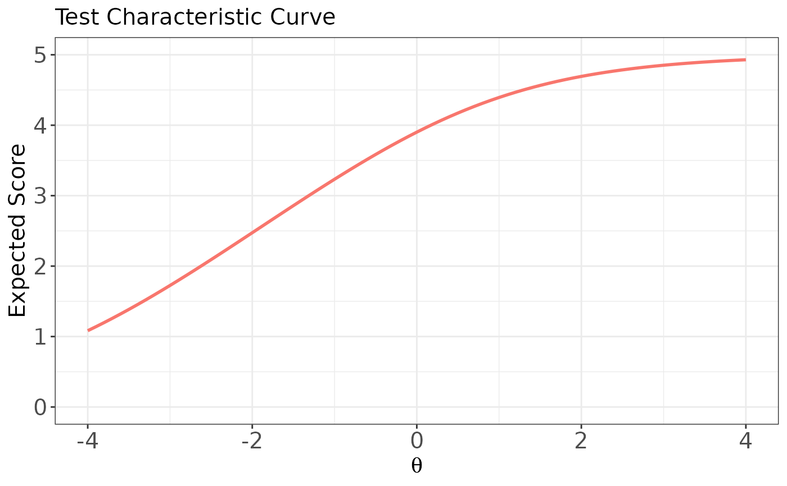
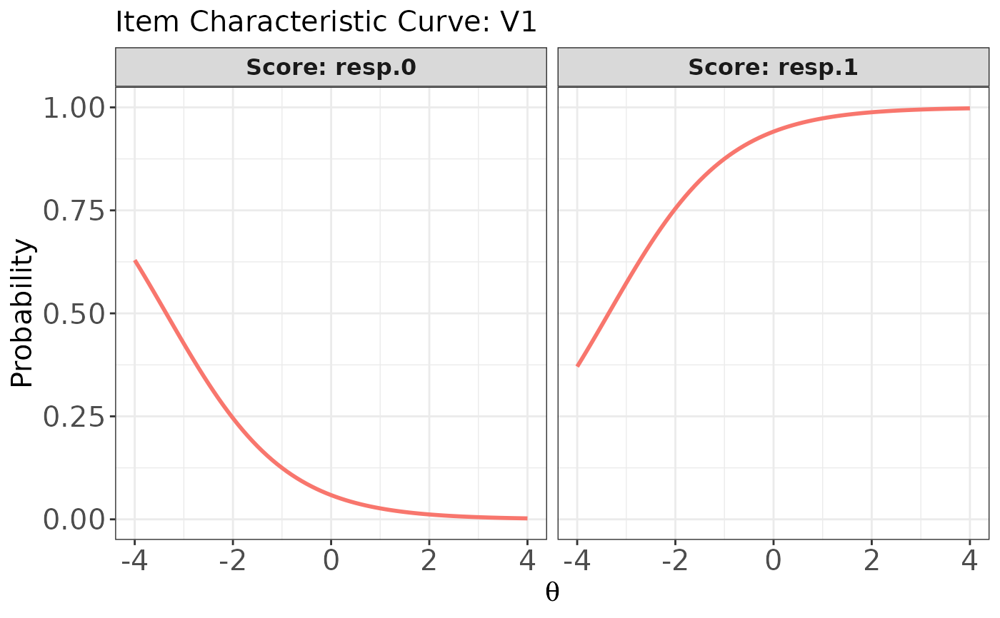
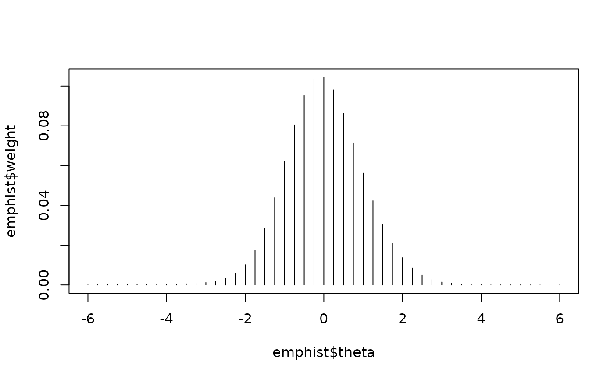
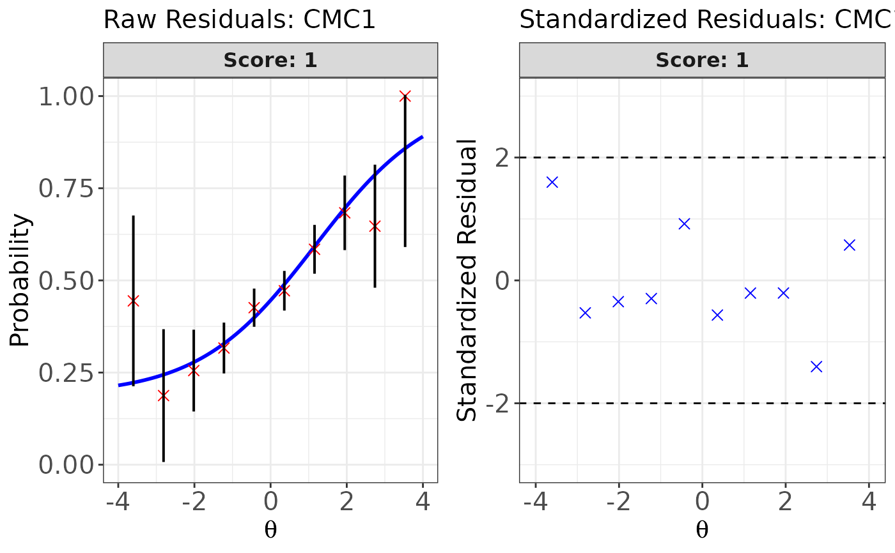
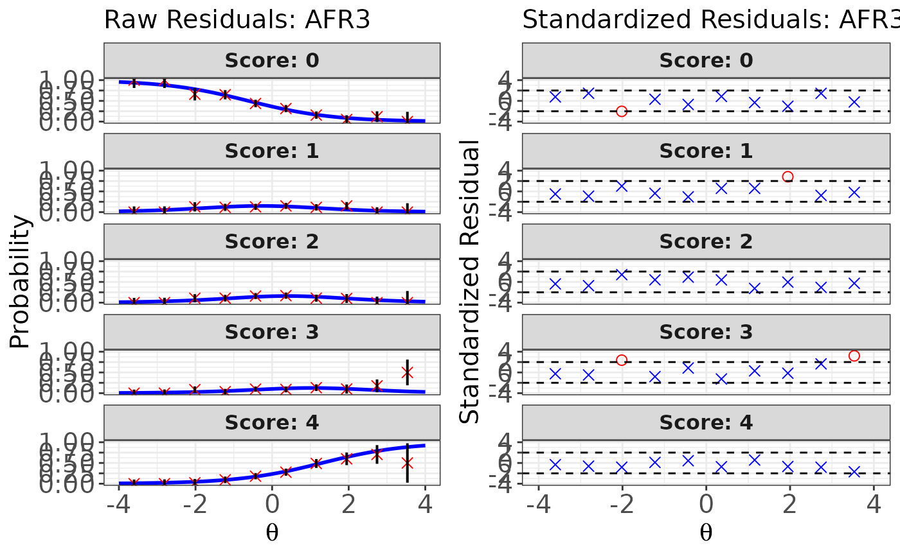
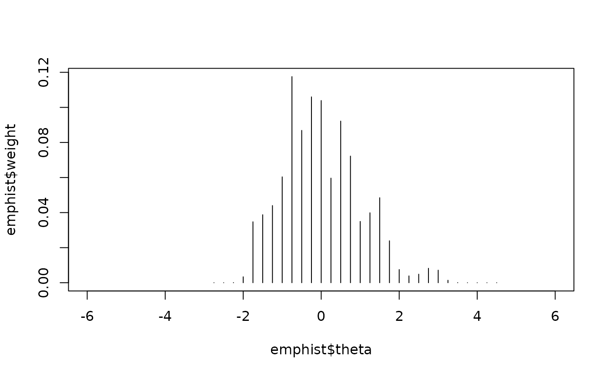
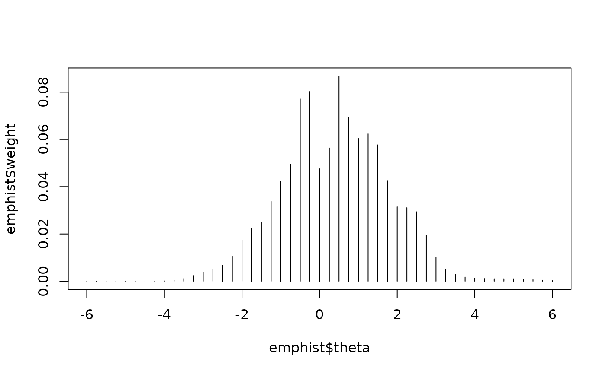
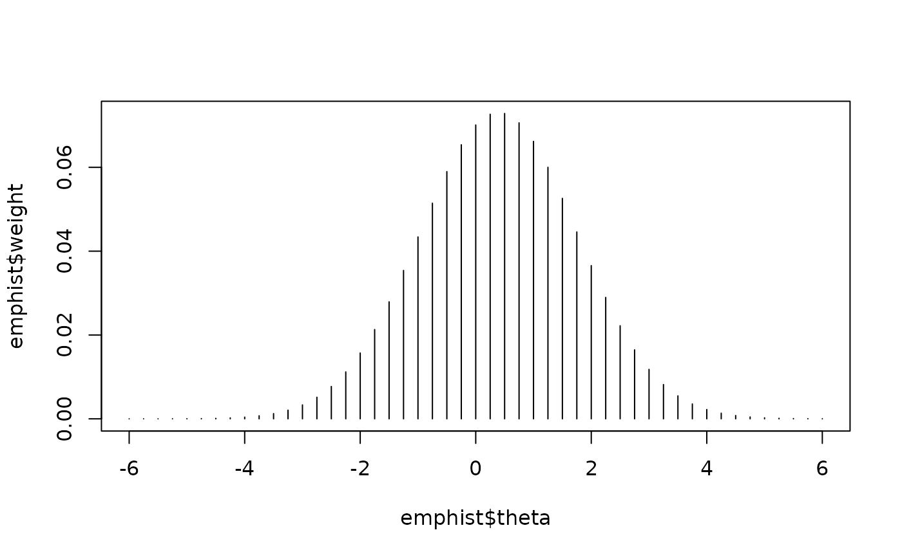
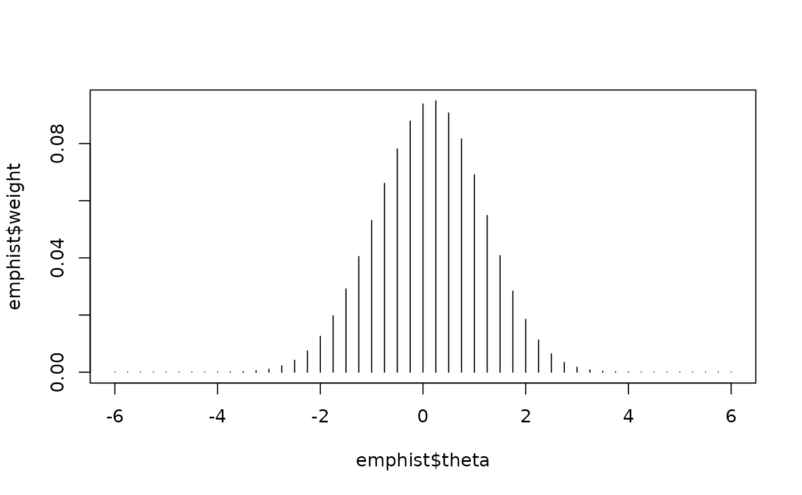
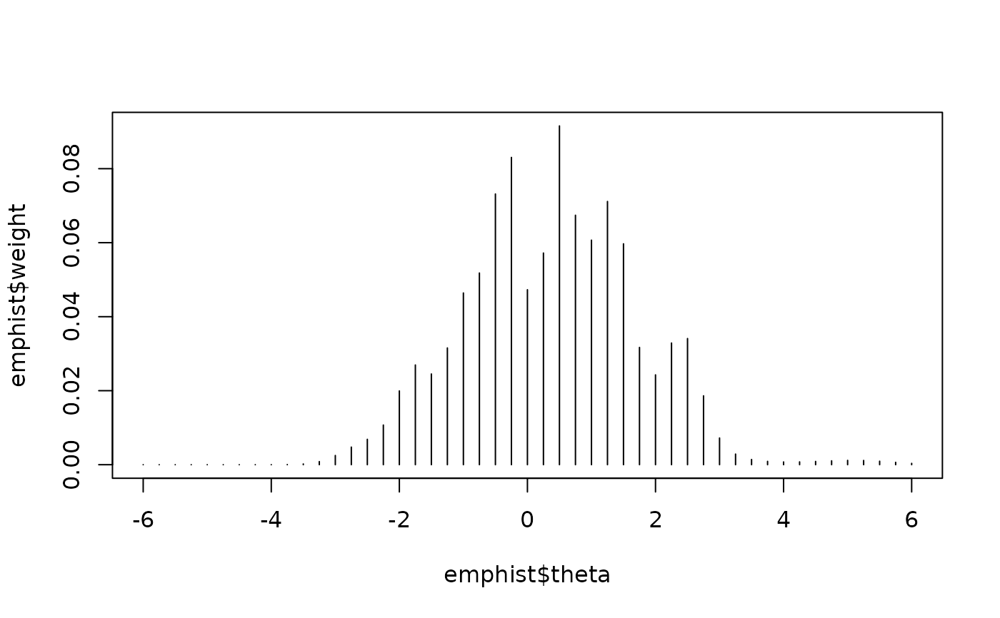

This function fits unidimensional item response theory (IRT) models to mixed-format data comprising both dichotomous and polytomous items, using marginal maximum likelihood estimation via the expectation - maximization (MMLE-EM) algorithm (Bock & Aitkin, 1981). It also supports fixed item parameter calibration (FIPC; Kim, 2006), a practical method for pretest (or newly developed) item calibration in computerized adaptive testing (CAT). FIPC enables the parameter estimates of pretest items to be placed on the same scale as those of operational items (Ban et al., 2001). For dichotomous items, the function supports the one-, two-, and three-parameter logistic models. For polytomous items, it supports the graded response model (GRM) and the (generalized) partial credit model (GPCM).
Usage
est_irt(
x = NULL,
data,
D = 1,
model = NULL,
cats = NULL,
item.id = NULL,
fix.a.1pl = FALSE,
fix.a.gpcm = FALSE,
fix.g = FALSE,
a.val.1pl = 1,
a.val.gpcm = 1,
g.val = 0.2,
use.aprior = FALSE,
use.bprior = FALSE,
use.gprior = TRUE,
aprior = list(dist = "lnorm", params = c(0, 0.5)),
bprior = list(dist = "norm", params = c(0, 1)),
gprior = list(dist = "beta", params = c(5, 16)),
missing = NA,
Quadrature = c(49, 6),
weights = NULL,
group.mean = 0,
group.var = 1,
EmpHist = FALSE,
use.startval = FALSE,
Etol = 1e-04,
MaxE = 500,
control = list(eval.max = 500, iter.max = 200, x.tol = 1e-04),
fipc = FALSE,
fipc.method = "MEM",
fix.loc = NULL,
fix.id = NULL,
se = TRUE,
verbose = TRUE
)Arguments
- x
A data frame containing item metadata. This metadata is required to retrieve essential information for each item (e.g., number of score categories, IRT model type, etc.) necessary for calibration. You can create an empty item metadata frame using the function
shape_df().When
use.startval = TRUE, the item parameters specified in the metadata will be used as starting values for parameter estimation. Ifx = NULL, bothmodelandcatsarguments must be specified. Note that whenfipc = TRUEto implement FIPC, item metadata for the test form must be supplied via thexargument. See below for more details. Default isNULL.- data
A matrix of examinees' item responses corresponding to the items specified in the
xargument. Rows represent examinees and columns represent items.- D
A scaling constant used in IRT models to make the logistic function closely approximate the normal ogive function. A value of 1.7 is commonly used for this purpose. Default is 1.
- model
A character vector specifying the IRT model to fit each item. Available values are:
"1PLM","2PLM","3PLM","DRM"for dichotomous items"GRM","GPCM"for polytomous items
Here,
"GRM"denotes the graded response model and"GPCM"the (generalized) partial credit model. Note that"DRM"serves as a general label covering all three dichotomous IRT models. If a single model name is provided, it is recycled for all items. This argument is only used whenx = NULLandfipc = FALSE. Default isNULL.- cats
Numeric vector specifying the number of score categories per item. For dichotomous items, this should be 2. If a single value is supplied, it will be recycled across all items. When
cats = NULLand all models specified in themodelargument are dichotomous ("1PLM","2PLM","3PLM", or"DRM"), the function defaults to 2 categories per item. This argument is used only whenx = NULLandfipc = FALSE. Default isNULL.- item.id
Character vector of item identifiers. If
NULL, IDs are generated automatically. Whenfipc = TRUE, a provideditem.idwill override any IDs present inx. Default isNULL.- fix.a.1pl
Logical. If
TRUE, the slope parameters of all 1PLM items are fixed toa.val.1pl; otherwise, they are constrained to be equal and estimated. Default isFALSE.- fix.a.gpcm
Logical. If
TRUE, GPCM items are calibrated as PCM with slopes fixed toa.val.gpcm; otherwise, each item's slope is estimated. Default isFALSE.- fix.g
Logical. If
TRUE, all 3PLM guessing parameters are fixed tog.val; otherwise, each guessing parameter is estimated. Default isFALSE.- a.val.1pl
Numeric. Value to which the slope parameters of 1PLM items are fixed when
fix.a.1pl = TRUE. Default is 1.- a.val.gpcm
Numeric. Value to which the slope parameters of GPCM items are fixed when
fix.a.gpcm = TRUE. Default is 1.- g.val
Numeric. Value to which the guessing parameters of 3PLM items are fixed when
fix.g = TRUE. Default is 0.2.- use.aprior
Logical. If
TRUE, applies a prior distribution to all item discrimination (slope) parameters during calibration. Default isFALSE.- use.bprior
Logical. If
TRUE, applies a prior distribution to all item difficulty (or threshold) parameters during calibration. Default isFALSE.- use.gprior
Logical. If
TRUE, applies a prior distribution to all 3PLM guessing parameters during calibration. Default isTRUE.- aprior, bprior, gprior
A list specifying the prior distribution for all item discrimination (slope), difficulty (or threshold), guessing parameters. Three distributions are supported: Beta, Log-normal, and Normal. The list must have two elements:
dist: A character string, one of"beta","lnorm", or"norm".params: A numeric vector of length two giving the distribution's parameters. For details on each parameterization, seestats::dbeta(),stats::dlnorm(), andstats::dnorm().
Defaults are:
aprior = list(dist = "lnorm", params = c(0.0, 0.5))bprior = list(dist = "norm", params = c(0.0, 1.0))gprior = list(dist = "beta", params = c(5, 16))
for discrimination, difficulty, and guessing parameters, respectively.
- missing
A value indicating missing responses in the data set. Default is
NA.- Quadrature
A numeric vector of length two:
first element: number of quadrature points
second element: symmetric bound (absolute value) for those points For example,
c(49, 6)specifies 49 evenly spaced points from -6 to 6. These points are used in the E-step of the EM algorithm. Default isc(49, 6).
- weights
A two-column matrix or data frame containing the quadrature points (in the first column) and their corresponding weights (in the second column) for the latent variable prior distribution. If not
NULL, the scale of the latent ability distribution is fixed to match the scale of the provided quadrature points and weights. The weights and points can be conveniently generated using the functiongen.weight().If
NULL, a normal prior density is used instead, based on the information provided in theQuadrature,group.mean, andgroup.vararguments. Default isNULL.- group.mean
A numeric value specifying the mean of the latent variable prior distribution when
weights = NULL. Default is 0. This value is fixed to resolve the indeterminacy of the item parameter scale during calibration. However, the scale of the prior distribution is updated when FIPC is implemented.- group.var
A positive numeric value specifying the variance of the latent variable prior distribution when
weights = NULL. Default is 1. This value is fixed to resolve the indeterminacy of the item parameter scale during calibration. However, the scale of the prior distribution is updated when FIPC is implemented.- EmpHist
Logical. If
TRUE, the empirical histogram of the latent variable prior distribution is estimated simultaneously with the item parameters using the approach proposed by Woods (2007). Item calibration is conducted relative to the estimated empirical prior. See below for details.- use.startval
Logical. If
TRUE, the item parameters provided in the item metadata (i.e., thexargument) are used as starting values for item parameter estimation. Otherwise, internally generated starting values are used. Default isFALSE.- Etol
A positive numeric value specifying the convergence criterion for the E-step of the EM algorithm. Default is 1e-4. Specifically, the EM algorithm terminates when the largest absolute difference in item parameter estimates between consecutive iterations is less than or equal to this value. When FIPC is used and all items are fixed, so that only the latent ability distribution is estimated, the criterion is applied to the largest absolute change in the mean and variance of the prior distribution.
- MaxE
A positive integer specifying the maximum number of iterations for the E-step in the EM algorithm. Default is
500.- control
A named list of options passed directly to
stats::nlminb()in each M-step optimization of the EM algorithm. By default:control = list(eval.max = 500, iter.max = 200, x.tol = 1e-4), whereeval.max= 500 limits the number of function evaluationsiter.max= 200 caps the number of internal optimizer iterationsx.tol= 1e-4 sets the absolute change threshold in parameter values below whichstats::nlminb()considers the solution to have converged Users may additionally supply othernlminb()control options (such asabs.tol,rel.tol,trace, etc.) as needed.
- fipc
Logical. If
TRUE, fixed item parameter calibration (FIPC) is applied during item parameter estimation. Whenfipc = TRUE, the information on which items are fixed must be provided via eitherfix.locorfix.id. See below for details.- fipc.method
A character string specifying the FIPC method. Available options are:
"OEM": No Prior Weights Updating and One EM Cycle (NWU-OEM; Wainer & Mislevy, 1990)"MEM": Multiple Prior Weights Updating and Multiple EM Cycles (MWU-MEM; Kim, 2006) Whenfipc.method = "OEM", the maximum number of E-steps is automatically set to 1, regardless of the value specified inMaxE.
- fix.loc
A vector of positive integers specifying the row positions of the items to be fixed in the item metadata (i.e.,
x) when FIPC is implemented (i.e.,fipc = TRUE). For example, suppose that five items located in the 1st, 2nd, 4th, 7th, and 9th rows ofxshould be fixed. Then usefix.loc = c(1, 2, 4, 7, 9). Note that iffix.idis notNULL, the information provided infix.locis ignored. See below for details.- fix.id
A character vector specifying the IDs of the items to be fixed when FIPC is implemented (i.e.,
fipc = TRUE). For example, suppose five items with IDs "CMC1", "CMC2", "CMC3", "CMC4", and "CMC5" are to be fixed, and that all item IDs are supplied viaitem.idcolumn in thexargument. Then usefix.id = c("CMC1", "CMC2", "CMC3", "CMC4", "CMC5"). Note that iffix.idis notNULL, the information infix.locis ignored. See below for details.- se
Logical. If
FALSE, standard errors of the item parameter estimates are not computed. Default isTRUE.- verbose
Logical. If
FALSE, all progress messages, including information about the EM algorithm process, are suppressed. Default isTRUE.
Value
This function returns an object of class est_irt. The returned
object contains the following components:
- estimates
A data frame containing both the item parameter estimates and their corresponding standard errors.
- par.est
A data frame of item parameter estimates, structured according to the item metadata format.
- se.est
A data frame of standard errors for the item parameter estimates, computed using the cross-product approximation method (Meilijson, 1989).
- pos.par
A data frame indicating the position index of each estimated item parameter. The position information is useful for interpreting the variance-covariance matrix of item parameter estimates
- covariance
A variance-covariance matrix of the item parameter estimates.
- loglikelihood
The marginal log-likelihood, calculated as the sum of the log-likelihoods across all items.
- aic
Akaike Information Criterion (AIC) based on the log-likelihood.
- bic
Bayesian Information Criterion (BIC) based on the log-likelihood.
- group.par
A data frame containing the mean, variance, and standard deviation of the latent variable prior distribution.
- weights
A two-column data frame of quadrature points (column 1) and corresponding weights (column 2) of the (updated) latent prior distribution.
- posterior.dist
A matrix of normalized posterior densities for all response patterns at each quadrature point. Rows and columns represent response patterns and quadrature points, respectively.
- data
A data frame of examinees' response data.
- scale.D
The scaling factor used in the IRT model.
- ncase
The total number of response patterns.
- nitem
The total number of items in the response data.
- Etol
The convergence criterion for the E-step of the EM algorithm.
- MaxE
The maximum number of E-steps allowed in the EM algorithm.
- aprior
A list describing the prior distribution used for discrimination parameters.
- bprior
A list describing the prior distribution used for difficulty parameters.
- gprior
A list describing the prior distribution used for guessing parameters.
- npar.est
The total number of parameters estimated.
- niter
The number of completed EM cycles.
- maxpar.diff
The largest absolute change in the estimates in the last EM cycle.
- EMtime
Time (in seconds) spent on EM cycles.
- SEtime
Time (in seconds) spent computing standard errors.
- TotalTime
Total computation time (in seconds).
- test.1
A message indicating whether the convergence criteria were met: the M-step optimization converged for every item and the largest absolute change in the parameter estimates between two consecutive EM cycles was less than or equal to
Etol. Whenfipc.method = "OEM"with new items to calibrate, the single EM cycle is not judged byEtoland only the M-step check applies. For FIPC with all items fixed, seeEtol.- test.2
Second-order test result indicating whether the information matrix is positive definite, a necessary condition for identifying a local maximum. The message reports a possible local maximum only when the first-order test is also satisfied.
- var.note
A note indicating whether the variance-covariance matrix was successfully obtained from the information matrix.
- fipc
Logical. Indicates whether FIPC was used.
- fipc.method
The method used for FIPC.
- fix.loc
A vector of integers specifying the row locations of fixed items when FIPC was applied.
Note that you can easily extract components from the output using the
getirt() function.
Details
A specific format of data frame should be used for the argument x.
The first column should contain item IDs, the second column should contain
the number of unique score categories for each item, and the third column
should specify the IRT model to be fitted to each item. Available IRT models
are:
"1PLM","2PLM","3PLM", and"DRM"for dichotomous item data"GRM"and"GPCM"for polytomous item data
Note that "DRM" serves as a general label covering all dichotomous IRT
models (i.e., "1PLM", "2PLM", and "3PLM"), while "GRM" and "GPCM"
represent the graded response model and (generalized) partial credit model,
respectively.
The subsequent columns should contain the item parameters for the specified
models. For dichotomous items, the fourth, fifth, and sixth columns represent
item discrimination (slope), item difficulty, and item guessing parameters,
respectively. When "1PLM" or "2PLM" is specified in the third column,
NAs must be entered in the sixth column for the guessing parameters.
For polytomous items, the item discrimination (slope) parameter should appear
in the fourth column, and the item difficulty (or threshold) parameters for
category boundaries should occupy the fifth through the last columns. When
the number of unique score categories differs across items, unused parameter
cells should be filled with NAs.
In the irtQ package, the threshold parameters for GPCM items are expressed as the item location (or overall difficulty) minus the threshold values for each score category. Note that when a GPCM item has K unique score categories, K - 1 threshold parameters are required, since the threshold for the first category boundary is always fixed at 0. For example, if a GPCM item has five score categories, four threshold parameters must be provided.
An example of a data frame for a single-format test is shown below:
| ITEM1 | 2 | 1PLM | 1.000 | 1.461 | NA | ITEM2 | 2 |
| 2PLM | 1.921 | -1.049 | NA | ITEM3 | 2 | 3PLM | 1.736 |
| 1.501 | 0.203 | ITEM4 | 2 | 3PLM | 0.835 | -1.049 | 0.182 |
An example of a data frame for a mixed-format test is shown below:
| ITEM1 | 2 | 1PLM | 1.000 | 1.461 | NA | NA | NA |
| ITEM2 | 2 | 2PLM | 1.921 | -1.049 | NA | NA | NA |
| ITEM3 | 2 | 3PLM | 0.926 | 0.394 | 0.099 | NA | NA |
| ITEM4 | 2 | DRM | 1.052 | -0.407 | 0.201 | NA | NA |
| ITEM5 | 4 | GRM | 1.913 | -1.869 | -1.238 | -0.714 | NA |
| ITEM6 | 5 | GRM | 1.278 | -0.724 | -0.068 | 0.568 | 1.072 |
| ITEM7 | 4 | GPCM | 1.137 | -0.374 | 0.215 | 0.848 | NA |
| ITEM8 | 5 | GPCM | 1.233 | -2.078 | -1.347 | -0.705 | -0.116 |
See the IRT Models section in the irtQ-package documentation for more
details about the IRT models used in the irtQ package. A convenient way
to create a data frame for the argument x is by using the function
shape_df().
To fit IRT models to data, the item response data must be accompanied by information on the IRT model and the number of score categories for each item. There are two ways to provide this information:
Supply item metadata to the argument
x. As explained above, such metadata can be easily created usingshape_df().Specify the IRT models and score category information directly through the arguments
modelandcats.
If x = NULL, the function uses the information specified in model and
cats.
To implement FIPC, the item metadata must be provided via the x argument.
This is because the item parameters of the fixed items in the metadata are
used to estimate the characteristics of the underlying latent variable prior
distribution when calibrating the remaining (freely estimated) items. More
specifically, the latent prior distribution is estimated based on the
fixed items, and then used to calibrate the new (pretest) items so that their
parameters are placed on the same scale as those of the fixed items (Kim,
2006).The full item metadata, including both fixed and non-fixed items, can be
conveniently created using the shape_df_fipc() function.
In terms of approaches for FIPC, Kim (2006) described five different methods.
Among them, two methods are available in the est_irt() function. The
first method is "NWU-OEM", which uses a single E-step in the EM
algorithm (involving only the fixed items) followed by a single M-step
(involving only the non-fixed items). This method was proposed by Wainer and
Mislevy (1990) in the context of online calibration and can be implemented by
setting fipc.method = "OEM".
The second method is "MWU-MEM", which iteratively updates the latent
variable prior distribution and estimates the parameters of the non-fixed
items. In this method, the same procedure as the NWU-OEM approach is applied
during the first EM cycle. From the second cycle onward, both the parameters
of the non-fixed items and the weights of the prior distribution are
concurrently updated. This method can be implemented by setting fipc.method = "MEM". See Kim (2006) for more details.
When fipc = TRUE, information about which items are to be fixed must be
provided via either the fix.loc or fix.id argument. For example, suppose
that five items with IDs "CMC1", "CMC2", "CMC3", "CMC4", and "CMC5" should
be fixed, and all item IDs are provided via the x or item.id argument.
Also, assume these five items are located in the 1st through 5th rows of the
item metadata (i.e., x). In this case, the fixed items can be specified
using either fix.loc = c(1, 2, 3, 4, 5) or
fix.id = c("CMC1", "CMC2", "CMC3", "CMC4", "CMC5"). Note that if both
fix.loc and fix.id are not NULL, the information in fix.loc is
ignored.
When EmpHist = TRUE, the empirical histogram of the latent variable prior
distribution (i.e., the densities at the quadrature points) is estimated
simultaneously with the item parameters. If EmpHist = TRUE and
fipc = TRUE, the scale parameters of the empirical
prior distribution (e.g., mean and variance) are also estimated.
If EmpHist = TRUE and fipc = FALSE, the scale parameters are fixed to
the values specified in group.mean and group.var. When EmpHist = FALSE,
a normal prior distribution is used instead. If fipc = TRUE, the scale
parameters of this normal prior are estimated along with the item parameters.
If fipc = FALSE, they are fixed to the values specified in group.mean and
group.var.
References
Ban, J. C., Hanson, B. A., Wang, T., Yi, Q., & Harris, D. J. (2001). A comparative study of on-line pretest item calibration/scaling methods in computerized adaptive testing. Journal of Educational Measurement, 38(3), 191-212. doi:10.1111/j.1745-3984.2001.tb01123.x .
Bock, R. D., & Aitkin, M. (1981). Marginal maximum likelihood estimation of item parameters: Application of an EM algorithm. Psychometrika, 46, 443-459.
Kim, S. (2006). A comparative study of IRT fixed parameter calibration methods. Journal of Educational Measurement, 43(4), 355-381.
Meilijson, I. (1989). A fast improvement to the EM algorithm on its own terms. Journal of the Royal Statistical Society: Series B (Methodological), 51, 127-138.
Stocking, M. L. (1988). Scale drift in on-line calibration (Research Rep. 88-28). Princeton, NJ: ETS.
Wainer, H., & Mislevy, R. J. (1990). Item response theory, item calibration, and proficiency estimation. In H. Wainer (Ed.), Computer adaptive testing: A primer (Chap. 4, pp. 65-102). Hillsdale, NJ: Lawrence Erlbaum.
Woods, C. M. (2007). Empirical histograms in item response theory with ordinal data. Educational and Psychological Measurement, 67(1), 73-87.
Author
Hwanggyu Lim hglim83@gmail.com
Examples
# \donttest{
## --------------------------------------------------------------
## 1. Item parameter estimation for dichotomous item data (LSAT6)
## --------------------------------------------------------------
# Fit the 1PL model to LSAT6 data and estimate a common slope parameter
# (i.e., constrain slope parameters to be equal)
(mod.1pl.c <- est_irt(data = LSAT6, D = 1, model = "1PLM", cats = 2,
fix.a.1pl = FALSE))
#> Parsing input...
#> Estimating item parameters...
#>
EM iteration: 1, Loglike: -3182.3860, Max-Change: 2.293929
EM iteration: 2, Loglike: -2561.3380, Max-Change: 0.58111
EM iteration: 3, Loglike: -2483.1811, Max-Change: 0.31473
EM iteration: 4, Loglike: -2469.6884, Max-Change: 0.171175
EM iteration: 5, Loglike: -2467.5148, Max-Change: 0.096225
EM iteration: 6, Loglike: -2467.1096, Max-Change: 0.056965
EM iteration: 7, Loglike: -2467.0029, Max-Change: 0.035311
EM iteration: 8, Loglike: -2466.9648, Max-Change: 0.022579
EM iteration: 9, Loglike: -2466.9493, Max-Change: 0.014699
EM iteration: 10, Loglike: -2466.9427, Max-Change: 0.009659
EM iteration: 11, Loglike: -2466.9398, Max-Change: 0.006377
EM iteration: 12, Loglike: -2466.9386, Max-Change: 0.004219
EM iteration: 13, Loglike: -2466.9380, Max-Change: 0.002795
EM iteration: 14, Loglike: -2466.9378, Max-Change: 0.001852
EM iteration: 15, Loglike: -2466.9377, Max-Change: 0.001228
EM iteration: 16, Loglike: -2466.9376, Max-Change: 0.000814
EM iteration: 17, Loglike: -2466.9376, Max-Change: 0.000539
EM iteration: 18, Loglike: -2466.9376, Max-Change: 0.000358
EM iteration: 19, Loglike: -2466.9376, Max-Change: 0.000237
EM iteration: 20, Loglike: -2466.9376, Max-Change: 0.000157
EM iteration: 21, Loglike: -2466.9376, Max-Change: 0.000104
EM iteration: 22, Loglike: -2466.9376, Max-Change: 6.9e-05
#> Computing item parameter var-covariance matrix...
#> Estimation is finished in 0.06 seconds.
#>
#> Call:
#> est_irt(data = LSAT6, D = 1, model = "1PLM", cats = 2, fix.a.1pl = FALSE)
#>
#> Item parameter estimation using MMLE-EM.
#> 22 E-step cycles were completed using 49 quadrature points.
#> First-order test: Convergence criteria are satisfied.
#> Second-order test: Solution is a possible local maximum.
#> Computation of variance-covariance matrix:
#> Variance-covariance matrix of item parameter estimates is obtainable.
#>
#> Log-likelihood: -2466.938
#>
# Display a summary of the estimation results
summary(mod.1pl.c)
#>
#> Call:
#> est_irt(data = LSAT6, D = 1, model = "1PLM", cats = 2, fix.a.1pl = FALSE)
#>
#> Summary of the Data
#> Number of Items: 5
#> Number of Cases: 1000
#>
#> Summary of Estimation Process
#> Maximum number of EM cycles: 500
#> Convergence criterion of E-step: 1e-04
#> Number of rectangular quadrature points: 49
#> Minimum & Maximum quadrature points: -6, 6
#> Number of free parameters: 6
#> Number of fixed items: 0
#> Number of E-step cycles completed: 22
#> Maximum parameter change: 6.905886e-05
#>
#> Processing time (in seconds)
#> EM algorithm: 0.05
#> Standard error computation: 0
#> Total computation: 0.06
#>
#> Convergence and Stability of Solution
#> First-order test: Convergence criteria are satisfied.
#> Second-order test: Solution is a possible local maximum.
#> Computation of variance-covariance matrix:
#> Variance-covariance matrix of item parameter estimates is obtainable.
#>
#> Summary of Estimation Results
#> -2loglikelihood: 4933.875
#> Akaike Information Criterion (AIC): 4945.875
#> Bayesian Information Criterion (BIC): 4975.322
#> Item Parameters:
#> id cats model par.1 se.1 par.2 se.2 par.3 se.3
#> 1 V1 2 1PLM 0.76 0.07 -3.62 0.32 NA NA
#> 2 V2 2 1PLM 0.76 NA -1.32 0.14 NA NA
#> 3 V3 2 1PLM 0.76 NA -0.32 0.10 NA NA
#> 4 V4 2 1PLM 0.76 NA -1.73 0.17 NA NA
#> 5 V5 2 1PLM 0.76 NA -2.78 0.25 NA NA
#> Group Parameters:
#> mu sigma2 sigma
#> estimates 0 1 1
#> se NA NA NA
#>
# Extract the item parameter estimates
getirt(mod.1pl.c, what = "par.est")
#> id cats model par.1 par.2 par.3
#> 1 V1 2 1PLM 0.7551678 -3.6151311 NA
#> 2 V2 2 1PLM 0.7551678 -1.3223732 NA
#> 3 V3 2 1PLM 0.7551678 -0.3176192 NA
#> 4 V4 2 1PLM 0.7551678 -1.7300276 NA
#> 5 V5 2 1PLM 0.7551678 -2.7800696 NA
# Extract the standard error estimates
getirt(mod.1pl.c, what = "se.est")
#> id cats model par.1 par.2 par.3
#> 1 V1 2 1PLM 0.06852372 0.31969228 NA
#> 2 V2 2 1PLM NA 0.14200939 NA
#> 3 V3 2 1PLM NA 0.09773711 NA
#> 4 V4 2 1PLM NA 0.16821833 NA
#> 5 V5 2 1PLM NA 0.24980846 NA
# Fit the 1PL model to LSAT6 data and fix slope parameters to 1.0
(mod.1pl.f <- est_irt(data = LSAT6, D = 1, model = "1PLM", cats = 2,
fix.a.1pl = TRUE, a.val.1pl = 1))
#> Parsing input...
#> Estimating item parameters...
#>
EM iteration: 1, Loglike: -3182.3860, Max-Change: 2.161943
EM iteration: 2, Loglike: -2569.0530, Max-Change: 0.399087
EM iteration: 3, Loglike: -2491.5319, Max-Change: 0.175418
EM iteration: 4, Loglike: -2476.5061, Max-Change: 0.077114
EM iteration: 5, Loglike: -2473.6897, Max-Change: 0.033375
EM iteration: 6, Loglike: -2473.1702, Max-Change: 0.014331
EM iteration: 7, Loglike: -2473.0751, Max-Change: 0.006132
EM iteration: 8, Loglike: -2473.0577, Max-Change: 0.00262
EM iteration: 9, Loglike: -2473.0546, Max-Change: 0.001118
EM iteration: 10, Loglike: -2473.0540, Max-Change: 0.000477
EM iteration: 11, Loglike: -2473.0539, Max-Change: 0.000204
EM iteration: 12, Loglike: -2473.0539, Max-Change: 8.7e-05
#> Computing item parameter var-covariance matrix...
#> Estimation is finished in 0.05 seconds.
#>
#> Call:
#> est_irt(data = LSAT6, D = 1, model = "1PLM", cats = 2, fix.a.1pl = TRUE,
#> a.val.1pl = 1)
#>
#> Item parameter estimation using MMLE-EM.
#> 12 E-step cycles were completed using 49 quadrature points.
#> First-order test: Convergence criteria are satisfied.
#> Second-order test: Solution is a possible local maximum.
#> Computation of variance-covariance matrix:
#> Variance-covariance matrix of item parameter estimates is obtainable.
#>
#> Log-likelihood: -2473.054
#>
# Display a summary of the estimation results
summary(mod.1pl.f)
#>
#> Call:
#> est_irt(data = LSAT6, D = 1, model = "1PLM", cats = 2, fix.a.1pl = TRUE,
#> a.val.1pl = 1)
#>
#> Summary of the Data
#> Number of Items: 5
#> Number of Cases: 1000
#>
#> Summary of Estimation Process
#> Maximum number of EM cycles: 500
#> Convergence criterion of E-step: 1e-04
#> Number of rectangular quadrature points: 49
#> Minimum & Maximum quadrature points: -6, 6
#> Number of free parameters: 5
#> Number of fixed items: 0
#> Number of E-step cycles completed: 12
#> Maximum parameter change: 8.693637e-05
#>
#> Processing time (in seconds)
#> EM algorithm: 0.04
#> Standard error computation: 0
#> Total computation: 0.05
#>
#> Convergence and Stability of Solution
#> First-order test: Convergence criteria are satisfied.
#> Second-order test: Solution is a possible local maximum.
#> Computation of variance-covariance matrix:
#> Variance-covariance matrix of item parameter estimates is obtainable.
#>
#> Summary of Estimation Results
#> -2loglikelihood: 4946.108
#> Akaike Information Criterion (AIC): 4956.108
#> Bayesian Information Criterion (BIC): 4980.646
#> Item Parameters:
#> id cats model par.1 se.1 par.2 se.2 par.3 se.3
#> 1 V1 2 1PLM 1 NA -2.87 0.13 NA NA
#> 2 V2 2 1PLM 1 NA -1.06 0.08 NA NA
#> 3 V3 2 1PLM 1 NA -0.26 0.08 NA NA
#> 4 V4 2 1PLM 1 NA -1.39 0.09 NA NA
#> 5 V5 2 1PLM 1 NA -2.22 0.11 NA NA
#> Group Parameters:
#> mu sigma2 sigma
#> estimates 0 1 1
#> se NA NA NA
#>
# Fit the 2PL model to LSAT6 data
(mod.2pl <- est_irt(data = LSAT6, D = 1, model = "2PLM", cats = 2))
#> Parsing input...
#> Estimating item parameters...
#>
EM iteration: 1, Loglike: -3182.3860, Max-Change: 2.294233
EM iteration: 2, Loglike: -2561.0478, Max-Change: 0.58517
EM iteration: 3, Loglike: -2482.8950, Max-Change: 0.323232
EM iteration: 4, Loglike: -2469.4379, Max-Change: 0.180623
EM iteration: 5, Loglike: -2467.2706, Max-Change: 0.106034
EM iteration: 6, Loglike: -2466.8615, Max-Change: 0.066546
EM iteration: 7, Loglike: -2466.7487, Max-Change: 0.044361
EM iteration: 8, Loglike: -2466.7049, Max-Change: 0.030996
EM iteration: 9, Loglike: -2466.6843, Max-Change: 0.022467
EM iteration: 10, Loglike: -2466.6736, Max-Change: 0.016791
EM iteration: 11, Loglike: -2466.6674, Max-Change: 0.012897
EM iteration: 12, Loglike: -2466.6636, Max-Change: 0.010155
EM iteration: 13, Loglike: -2466.6611, Max-Change: 0.008179
EM iteration: 14, Loglike: -2466.6593, Max-Change: 0.00672
EM iteration: 15, Loglike: -2466.6580, Max-Change: 0.005616
EM iteration: 16, Loglike: -2466.6571, Max-Change: 0.00476
EM iteration: 17, Loglike: -2466.6563, Max-Change: 0.004082
EM iteration: 18, Loglike: -2466.6557, Max-Change: 0.003532
EM iteration: 19, Loglike: -2466.6553, Max-Change: 0.003079
EM iteration: 20, Loglike: -2466.6549, Max-Change: 0.00270
EM iteration: 21, Loglike: -2466.6546, Max-Change: 0.002378
EM iteration: 22, Loglike: -2466.6544, Max-Change: 0.002102
EM iteration: 23, Loglike: -2466.6542, Max-Change: 0.001863
EM iteration: 24, Loglike: -2466.6540, Max-Change: 0.001655
EM iteration: 25, Loglike: -2466.6539, Max-Change: 0.001473
EM iteration: 26, Loglike: -2466.6538, Max-Change: 0.001313
EM iteration: 27, Loglike: -2466.6537, Max-Change: 0.001172
EM iteration: 28, Loglike: -2466.6537, Max-Change: 0.001047
EM iteration: 29, Loglike: -2466.6536, Max-Change: 0.000936
EM iteration: 30, Loglike: -2466.6536, Max-Change: 0.000838
EM iteration: 31, Loglike: -2466.6535, Max-Change: 0.000751
EM iteration: 32, Loglike: -2466.6535, Max-Change: 0.000673
EM iteration: 33, Loglike: -2466.6535, Max-Change: 0.000603
EM iteration: 34, Loglike: -2466.6535, Max-Change: 0.000541
EM iteration: 35, Loglike: -2466.6534, Max-Change: 0.000486
EM iteration: 36, Loglike: -2466.6534, Max-Change: 0.000436
EM iteration: 37, Loglike: -2466.6534, Max-Change: 0.000392
EM iteration: 38, Loglike: -2466.6534, Max-Change: 0.000352
EM iteration: 39, Loglike: -2466.6534, Max-Change: 0.000316
EM iteration: 40, Loglike: -2466.6534, Max-Change: 0.000284
EM iteration: 41, Loglike: -2466.6534, Max-Change: 0.000256
EM iteration: 42, Loglike: -2466.6534, Max-Change: 0.00023
EM iteration: 43, Loglike: -2466.6534, Max-Change: 0.000207
EM iteration: 44, Loglike: -2466.6534, Max-Change: 0.000186
EM iteration: 45, Loglike: -2466.6534, Max-Change: 0.000167
EM iteration: 46, Loglike: -2466.6534, Max-Change: 0.000151
EM iteration: 47, Loglike: -2466.6534, Max-Change: 0.000136
EM iteration: 48, Loglike: -2466.6534, Max-Change: 0.000122
EM iteration: 49, Loglike: -2466.6534, Max-Change: 0.00011
EM iteration: 50, Loglike: -2466.6534, Max-Change: 9.9e-05
#> Computing item parameter var-covariance matrix...
#> Estimation is finished in 0.21 seconds.
#>
#> Call:
#> est_irt(data = LSAT6, D = 1, model = "2PLM", cats = 2)
#>
#> Item parameter estimation using MMLE-EM.
#> 50 E-step cycles were completed using 49 quadrature points.
#> First-order test: Convergence criteria are satisfied.
#> Second-order test: Solution is a possible local maximum.
#> Computation of variance-covariance matrix:
#> Variance-covariance matrix of item parameter estimates is obtainable.
#>
#> Log-likelihood: -2466.653
#>
# Display a summary of the estimation results
summary(mod.2pl)
#>
#> Call:
#> est_irt(data = LSAT6, D = 1, model = "2PLM", cats = 2)
#>
#> Summary of the Data
#> Number of Items: 5
#> Number of Cases: 1000
#>
#> Summary of Estimation Process
#> Maximum number of EM cycles: 500
#> Convergence criterion of E-step: 1e-04
#> Number of rectangular quadrature points: 49
#> Minimum & Maximum quadrature points: -6, 6
#> Number of free parameters: 10
#> Number of fixed items: 0
#> Number of E-step cycles completed: 50
#> Maximum parameter change: 9.894616e-05
#>
#> Processing time (in seconds)
#> EM algorithm: 0.2
#> Standard error computation: 0
#> Total computation: 0.21
#>
#> Convergence and Stability of Solution
#> First-order test: Convergence criteria are satisfied.
#> Second-order test: Solution is a possible local maximum.
#> Computation of variance-covariance matrix:
#> Variance-covariance matrix of item parameter estimates is obtainable.
#>
#> Summary of Estimation Results
#> -2loglikelihood: 4933.307
#> Akaike Information Criterion (AIC): 4953.307
#> Bayesian Information Criterion (BIC): 5002.384
#> Item Parameters:
#> id cats model par.1 se.1 par.2 se.2 par.3 se.3
#> 1 V1 2 2PLM 0.83 0.25 -3.36 0.85 NA NA
#> 2 V2 2 2PLM 0.72 0.19 -1.37 0.31 NA NA
#> 3 V3 2 2PLM 0.89 0.23 -0.28 0.10 NA NA
#> 4 V4 2 2PLM 0.69 0.19 -1.87 0.44 NA NA
#> 5 V5 2 2PLM 0.66 0.20 -3.13 0.84 NA NA
#> Group Parameters:
#> mu sigma2 sigma
#> estimates 0 1 1
#> se NA NA NA
#>
# Assess the model fit for the 2PL model using the S-X2 fit statistic
(sx2fit.2pl <- sx2_fit(x = mod.2pl))
#> $fit_stat
#> id chisq df crit.val p
#> 1 V1 0.450 2 5.991 0.798
#> 2 V2 1.691 2 5.991 0.429
#> 3 V3 0.666 1 3.841 0.415
#> 4 V4 0.175 2 5.991 0.916
#> 5 V5 0.111 2 5.991 0.946
#>
#> $item_df
#> id cats model par.1 par.2 par.3
#> 1 V1 2 2PLM 0.8255888 -3.3590452 0
#> 2 V2 2 2PLM 0.7229138 -1.3697963 0
#> 3 V3 2 2PLM 0.8904047 -0.2797759 0
#> 4 V4 2 2PLM 0.6884844 -1.8661188 0
#> 5 V5 2 2PLM 0.6570762 -3.1250079 0
#>
#> $exp_freq
#> $exp_freq$item.1
#> score.0 score.1
#> score.1 10.74056 9.259444
#> score.2 21.87382 63.126177
#> score.3 26.79306 210.206939
#> score.4 13.70859 343.291413
#>
#> $exp_freq$item.2
#> score.0 score.1
#> score.1 18.20255 1.797452
#> score.2 64.54046 20.459542
#> score.3 123.05816 113.941841
#> score.4 82.28224 274.717762
#>
#> $exp_freq$item.3
#> score.0 score.1
#> score.1 95.43853 9.561471
#> score.3 177.81316 59.186840
#> score.4 170.73120 186.268805
#>
#> $exp_freq$item.4
#> score.0 score.1
#> score.1 17.46393 2.536072
#> score.2 57.69266 27.307338
#> score.3 97.14025 139.859752
#> score.4 61.58031 295.419686
#>
#> $exp_freq$item.5
#> score.0 score.1
#> score.1 14.27299 5.727008
#> score.2 34.77451 50.225494
#> score.3 49.19537 187.804628
#> score.4 28.69767 328.302335
#>
#>
#> $obs_freq
#> $obs_freq$item.1
#> score.0 score.1
#> score.1 10 10
#> score.2 23 62
#> score.3 25 212
#> score.4 15 342
#>
#> $obs_freq$item.2
#> score.0 score.1
#> score.1 19 1
#> score.2 61 24
#> score.3 128 109
#> score.4 80 277
#>
#> $obs_freq$item.3
#> score.0 score.1
#> score.1 97 8
#> score.3 174 63
#> score.4 173 184
#>
#> $obs_freq$item.4
#> score.0 score.1
#> score.1 18 2
#> score.2 57 28
#> score.3 98 139
#> score.4 61 296
#>
#> $obs_freq$item.5
#> score.0 score.1
#> score.1 14 6
#> score.2 36 49
#> score.3 49 188
#> score.4 28 329
#>
#>
#> $exp_prob
#> $exp_prob$item.1
#> score.0 score.1
#> score.1 0.5370278 0.4629722
#> score.2 0.2573391 0.7426609
#> score.3 0.1130509 0.8869491
#> score.4 0.0383994 0.9616006
#>
#> $exp_prob$item.2
#> score.0 score.1
#> score.1 0.9101274 0.08987262
#> score.2 0.7592995 0.24070050
#> score.3 0.5192327 0.48076726
#> score.4 0.2304825 0.76951754
#>
#> $exp_prob$item.3
#> score.0 score.1
#> score.1 0.9089384 0.09106163
#> score.3 0.7502665 0.24973350
#> score.4 0.4782386 0.52176136
#>
#> $exp_prob$item.4
#> score.0 score.1
#> score.1 0.8731964 0.1268036
#> score.2 0.6787372 0.3212628
#> score.3 0.4098745 0.5901255
#> score.4 0.1724939 0.8275061
#>
#> $exp_prob$item.5
#> score.0 score.1
#> score.1 0.71364960 0.2863504
#> score.2 0.40911183 0.5908882
#> score.3 0.20757541 0.7924246
#> score.4 0.08038562 0.9196144
#>
#>
#> $obs_prop
#> $obs_prop$item.1
#> score.0 score.1
#> score.1 0.50000000 0.5000000
#> score.2 0.27058824 0.7294118
#> score.3 0.10548523 0.8945148
#> score.4 0.04201681 0.9579832
#>
#> $obs_prop$item.2
#> score.0 score.1
#> score.1 0.9500000 0.0500000
#> score.2 0.7176471 0.2823529
#> score.3 0.5400844 0.4599156
#> score.4 0.2240896 0.7759104
#>
#> $obs_prop$item.3
#> score.0 score.1
#> score.1 0.9238095 0.07619048
#> score.3 0.7341772 0.26582278
#> score.4 0.4845938 0.51540616
#>
#> $obs_prop$item.4
#> score.0 score.1
#> score.1 0.9000000 0.1000000
#> score.2 0.6705882 0.3294118
#> score.3 0.4135021 0.5864979
#> score.4 0.1708683 0.8291317
#>
#> $obs_prop$item.5
#> score.0 score.1
#> score.1 0.70000000 0.3000000
#> score.2 0.42352941 0.5764706
#> score.3 0.20675105 0.7932489
#> score.4 0.07843137 0.9215686
#>
#>
# Compute item and test information functions at a range of theta values
theta <- seq(-4, 4, 0.1)
(info.2pl <- info(x = mod.2pl, theta = theta))
#> $iif
#> theta.1 theta.2 theta.3 theta.4 theta.5 theta.6 theta.7
#> V1 0.15900600 0.16217707 0.16487586 0.16706788 0.16872448 0.16982363 0.17035053
#> V2 0.05908680 0.06229673 0.06559926 0.06898629 0.07244815 0.07597358 0.07954958
#> V3 0.02688417 0.02919633 0.03168883 0.03437232 0.03725741 0.04035457 0.04367392
#> V4 0.07208593 0.07520492 0.07834095 0.08147998 0.08460681 0.08770509 0.09075751
#> V5 0.09948692 0.10123155 0.10279848 0.10417528 0.10535084 0.10631545 0.10706105
#> theta.8 theta.9 theta.10 theta.11 theta.12 theta.13 theta.14
#> V1 0.17029804 0.16966686 0.16846555 0.16671025 0.16442425 0.16163731 0.15838489
#> V2 0.08316147 0.08679289 0.09042578 0.09404050 0.09761596 0.10112973 0.10455831
#> V3 0.04722501 0.05101661 0.05505640 0.05935068 0.06390397 0.06871866 0.07379458
#> V4 0.09374585 0.09665122 0.09945421 0.10213516 0.10467436 0.10705238 0.10925029
#> V5 0.10758131 0.10787180 0.10793001 0.10775543 0.10734959 0.10671595 0.10585990
#> theta.15 theta.16 theta.17 theta.18 theta.19 theta.20 theta.21
#> V1 0.15470718 0.15064812 0.14625431 0.14157400 0.13665602 0.1315489 0.12629995
#> V2 0.10787733 0.11106184 0.11408669 0.11692687 0.11955787 0.1219562 0.12409955
#> V3 0.07912854 0.08471383 0.09053979 0.09659131 0.10284840 0.1092858 0.11587245
#> V4 0.11125001 0.11303460 0.11458851 0.11589792 0.11695094 0.1177379 0.11825136
#> V5 0.10478867 0.10351115 0.10203778 0.10038035 0.09855182 0.0965661 0.09443785
#> theta.22 theta.23 theta.24 theta.25 theta.26 theta.27 theta.28
#> V1 0.12095453 0.1155555 0.11014259 0.10475224 0.09941718 0.0941664 0.08902511
#> V2 0.12596762 0.1275422 0.12880744 0.12975067 0.13036214 0.1306355 0.13056797
#> V3 0.12257173 0.1293409 0.13613120 0.14288849 0.14955322 0.1560614 0.16234528
#> V4 0.11848659 0.1184413 0.11811603 0.11751374 0.11664011 0.1155033 0.11411364
#> V5 0.09218225 0.0898148 0.08735111 0.08480673 0.08219693 0.0795366 0.07684004
#> theta.29 theta.30 theta.31 theta.32 theta.33 theta.34 theta.35
#> V1 0.08401478 0.07915330 0.07445514 0.06993161 0.06559109 0.06143930 0.05747963
#> V2 0.13016019 0.12941642 0.12834435 0.12695492 0.12526214 0.12328276 0.12103590
#> V3 0.16833484 0.17395884 0.17914650 0.18382918 0.18794219 0.19142653 0.19423064
#> V4 0.11248377 0.11062805 0.10856253 0.10630454 0.10387246 0.10128542 0.09856297
#> V5 0.07412091 0.07139209 0.06866562 0.06595264 0.06326334 0.06060697 0.05799179
#> theta.36 theta.37 theta.38 theta.39 theta.40 theta.41 theta.42
#> V1 0.05371334 0.05013993 0.04675733 0.04356215 0.04054996 0.03771545 0.03505261
#> V2 0.11854273 0.11582603 0.11290977 0.10981870 0.10657793 0.10321258 0.09974739
#> V3 0.19631198 0.19763838 0.19818906 0.19795531 0.19694085 0.19516161 0.19264528
#> V4 0.09572483 0.09279062 0.08977959 0.08671044 0.08360110 0.08046861 0.07732894
#> V5 0.05542514 0.05291338 0.05046202 0.04807568 0.04575816 0.04351252 0.04134108
#> theta.43 theta.44 theta.45 theta.46 theta.47 theta.48 theta.49
#> V1 0.03255494 0.03021555 0.02802732 0.02598299 0.02407525 0.02229684 0.02064059
#> V2 0.09620644 0.09261282 0.08898846 0.08535390 0.08172814 0.07812859 0.07457096
#> V3 0.18943035 0.18556490 0.18110513 0.17611364 0.17065770 0.16480741 0.15863401
#> V4 0.07419693 0.07108621 0.06800914 0.06497682 0.06199908 0.05908448 0.05624040
#> V5 0.03924554 0.03722699 0.03528597 0.03342256 0.03163639 0.02992674 0.02829253
#> theta.50 theta.51 theta.52 theta.53 theta.54 theta.55 theta.56
#> V1 0.01909948 0.01766668 0.01633559 0.01509985 0.01395338 0.01289036 0.01190525
#> V2 0.07106924 0.06763575 0.06428111 0.06101436 0.05784299 0.05477304 0.05180924
#> V3 0.15220825 0.14559892 0.13887163 0.13208781 0.12530392 0.11857090 0.11193391
#> V4 0.05347303 0.05078748 0.04818782 0.04567719 0.04325782 0.04093116 0.03869795
#> V5 0.02673243 0.02524485 0.02382801 0.02247997 0.02119867 0.01998191 0.01882747
#> theta.57 theta.58 theta.59 theta.60 theta.61 theta.62
#> V1 0.01099280 0.01014806 0.009366322 0.008643188 0.007974505 0.00735638
#> V2 0.04895504 0.04621281 0.043583875 0.041068671 0.038666838 0.03637732
#> V3 0.10543210 0.09909874 0.092961370 0.087042086 0.081357924 0.07592129
#> V4 0.03655826 0.03451164 0.032557110 0.030693273 0.028918377 0.02723036
#> V5 0.01773305 0.01669632 0.015714945 0.014786608 0.013908996 0.01307983
#> theta.63 theta.64 theta.65 theta.66 theta.67 theta.68
#> V1 0.006785169 0.006257462 0.005770074 0.005320034 0.004904573 0.004521113
#> V2 0.034198476 0.032128146 0.030163756 0.028302390 0.026540854 0.024875744
#> V3 0.070740426 0.065819887 0.061161017 0.056762412 0.052620353 0.048729219
#> V4 0.025626910 0.024105518 0.022663515 0.021298114 0.020006448 0.018785597
#> V5 0.012296878 0.011557949 0.010860910 0.010203692 0.009584286 0.009000755
#> theta.69 theta.70 theta.71 theta.72 theta.73 theta.74
#> V1 0.004167257 0.003840776 0.00353960 0.003261811 0.003005626 0.002769395
#> V2 0.023303499 0.021820450 0.02042287 0.019106988 0.017869061 0.016705366
#> V3 0.045081847 0.041669876 0.03848404 0.035514409 0.032750652 0.030182186
#> V4 0.017632617 0.016544566 0.01551852 0.014551582 0.013640924 0.012783767
#> V5 0.008451230 0.007933913 0.00744708 0.006989079 0.006558328 0.006153317
#> theta.75 theta.76 theta.77 theta.78 theta.79 theta.80
#> V1 0.002551590 0.002350795 0.002165699 0.001995091 0.001837849 0.001692938
#> V2 0.015612235 0.014586078 0.013623392 0.012720775 0.011874938 0.011082710
#> V3 0.027798358 0.025588570 0.023542388 0.021649627 0.019900416 0.018285252
#> V4 0.011977407 0.011219221 0.010506671 0.009837308 0.009208777 0.008618815
#> V5 0.005772607 0.005414827 0.005078671 0.004762900 0.004466337 0.004187865
#> theta.81
#> V1 0.001559401
#> V2 0.010341042
#> V3 0.016795032
#> V4 0.008065259
#> V5 0.003926427
#>
#> $tif
#> [1] 0.41654981 0.43010661 0.44330338 0.45608175 0.46838769 0.48017232
#> [7] 0.49139258 0.50201168 0.51199937 0.52133194 0.52999202 0.53796812
#> [13] 0.54525403 0.55184798 0.55775173 0.56296953 0.56750708 0.57137045
#> [19] 0.57456506 0.57709478 0.57896115 0.58016272 0.58069463 0.58054838
#> [25] 0.57971187 0.57816959 0.57590316 0.57289204 0.56911449 0.56454870
#> [31] 0.55917413 0.55297289 0.54593122 0.53804097 0.52930093 0.51971803
#> [37] 0.50930836 0.49809777 0.48612228 0.47342801 0.46007077 0.44611531
#> [43] 0.43163420 0.41670648 0.40141603 0.38584991 0.37009656 0.35424406
#> [49] 0.33837849 0.32258243 0.30693367 0.29150417 0.27635919 0.26155677
#> [55] 0.24714738 0.23317381 0.21967125 0.20666756 0.19418362 0.18223383
#> [61] 0.17082664 0.15996518 0.14964786 0.13986896 0.13061927 0.12188664
#> [67] 0.11365651 0.10591243 0.09863645 0.09180958 0.08541210 0.07942387
#> [73] 0.07382459 0.06859403 0.06371220 0.05915949 0.05491682 0.05096570
#> [79] 0.04728832 0.04386758 0.04068716
#>
#> $theta
#> [1] -4.0 -3.9 -3.8 -3.7 -3.6 -3.5 -3.4 -3.3 -3.2 -3.1 -3.0 -2.9 -2.8 -2.7 -2.6
#> [16] -2.5 -2.4 -2.3 -2.2 -2.1 -2.0 -1.9 -1.8 -1.7 -1.6 -1.5 -1.4 -1.3 -1.2 -1.1
#> [31] -1.0 -0.9 -0.8 -0.7 -0.6 -0.5 -0.4 -0.3 -0.2 -0.1 0.0 0.1 0.2 0.3 0.4
#> [46] 0.5 0.6 0.7 0.8 0.9 1.0 1.1 1.2 1.3 1.4 1.5 1.6 1.7 1.8 1.9
#> [61] 2.0 2.1 2.2 2.3 2.4 2.5 2.6 2.7 2.8 2.9 3.0 3.1 3.2 3.3 3.4
#> [76] 3.5 3.6 3.7 3.8 3.9 4.0
#>
#> attr(,"class")
#> [1] "info"
# Plot the test characteristic curve (TCC)
(trace.2pl <- traceline(x = mod.2pl, theta = theta))
#> $prob.cats
#> $prob.cats$V1
#> resp.0 resp.1
#> [1,] 0.629288374 0.3707116
#> [2,] 0.609832040 0.3901680
#> [3,] 0.590019836 0.4099802
#> [4,] 0.569911111 0.4300889
#> [5,] 0.549569046 0.4504310
#> [6,] 0.529059897 0.4709401
#> [7,] 0.508452158 0.4915478
#> [8,] 0.487815655 0.5121843
#> [9,] 0.467220605 0.5327794
#> [10,] 0.446736661 0.5532633
#> [11,] 0.426431978 0.5735680
#> [12,] 0.406372316 0.5936277
#> [13,] 0.386620216 0.6133798
#> [14,] 0.367234260 0.6327657
#> [15,] 0.348268439 0.6517316
#> [16,] 0.329771638 0.6702284
#> [17,] 0.311787248 0.6882128
#> [18,] 0.294352904 0.7056471
#> [19,] 0.277500352 0.7224996
#> [20,] 0.261255434 0.7387446
#> [21,] 0.245638178 0.7543618
#> [22,] 0.230662993 0.7693370
#> [23,] 0.216338941 0.7836611
#> [24,] 0.202670076 0.7973299
#> [25,] 0.189655835 0.8103442
#> [26,] 0.177291467 0.8227085
#> [27,] 0.165568481 0.8344315
#> [28,] 0.154475104 0.8455249
#> [29,] 0.143996737 0.8560033
#> [30,] 0.134116398 0.8658836
#> [31,] 0.124815146 0.8751849
#> [32,] 0.116072485 0.8839275
#> [33,] 0.107866727 0.8921333
#> [34,] 0.100175332 0.8998247
#> [35,] 0.092975214 0.9070248
#> [36,] 0.086243005 0.9137570
#> [37,] 0.079955295 0.9200447
#> [38,] 0.074088833 0.9259112
#> [39,] 0.068620700 0.9313793
#> [40,] 0.063528453 0.9364715
#> [41,] 0.058790242 0.9412098
#> [42,] 0.054384903 0.9456151
#> [43,] 0.050292031 0.9497080
#> [44,] 0.046492035 0.9535080
#> [45,] 0.042966171 0.9570338
#> [46,] 0.039696569 0.9603034
#> [47,] 0.036666243 0.9633338
#> [48,] 0.033859086 0.9661409
#> [49,] 0.031259871 0.9687401
#> [50,] 0.028854228 0.9711458
#> [51,] 0.026628624 0.9733714
#> [52,] 0.024570345 0.9754297
#> [53,] 0.022667456 0.9773325
#> [54,] 0.020908781 0.9790912
#> [55,] 0.019283862 0.9807161
#> [56,] 0.017782929 0.9822171
#> [57,] 0.016396867 0.9836031
#> [58,] 0.015117176 0.9848828
#> [59,] 0.013935943 0.9860641
#> [60,] 0.012845806 0.9871542
#> [61,] 0.011839921 0.9881601
#> [62,] 0.010911930 0.9890881
#> [63,] 0.010055934 0.9899441
#> [64,] 0.009266458 0.9907335
#> [65,] 0.008538428 0.9914616
#> [66,] 0.007867142 0.9921329
#> [67,] 0.007248247 0.9927518
#> [68,] 0.006677711 0.9933223
#> [69,] 0.006151806 0.9938482
#> [70,] 0.005667082 0.9943329
#> [71,] 0.005220351 0.9947796
#> [72,] 0.004808665 0.9951913
#> [73,] 0.004429301 0.9955707
#> [74,] 0.004079743 0.9959203
#> [75,] 0.003757668 0.9962423
#> [76,] 0.003460930 0.9965391
#> [77,] 0.003187551 0.9968124
#> [78,] 0.002935702 0.9970643
#> [79,] 0.002703698 0.9972963
#> [80,] 0.002489982 0.9975100
#> [81,] 0.002293122 0.9977069
#>
#> $prob.cats$V2
#> resp.0 resp.1
#> [1,] 0.87005109 0.1299489
#> [2,] 0.86165676 0.1383432
#> [3,] 0.85281192 0.1471881
#> [4,] 0.84350429 0.1564957
#> [5,] 0.83372285 0.1662772
#> [6,] 0.82345799 0.1765420
#> [7,] 0.81270180 0.1872982
#> [8,] 0.80144829 0.1985517
#> [9,] 0.78969360 0.2103064
#> [10,] 0.77743626 0.2225637
#> [11,] 0.76467741 0.2353226
#> [12,] 0.75142100 0.2485790
#> [13,] 0.73767400 0.2623260
#> [14,] 0.72344656 0.2765534
#> [15,] 0.70875214 0.2912479
#> [16,] 0.69360762 0.3063924
#> [17,] 0.67803334 0.3219667
#> [18,] 0.66205312 0.3379469
#> [19,] 0.64569421 0.3543058
#> [20,] 0.62898719 0.3710128
#> [21,] 0.61196580 0.3880342
#> [22,] 0.59466674 0.4053333
#> [23,] 0.57712937 0.4228706
#> [24,] 0.55939543 0.4406046
#> [25,] 0.54150860 0.4584914
#> [26,] 0.52351415 0.4764859
#> [27,] 0.50545844 0.4945416
#> [28,] 0.48738849 0.5126115
#> [29,] 0.46935144 0.5306486
#> [30,] 0.45139411 0.5486059
#> [31,] 0.43356248 0.5664375
#> [32,] 0.41590124 0.5840988
#> [33,] 0.39845335 0.6015466
#> [34,] 0.38125966 0.6187403
#> [35,] 0.36435851 0.6356415
#> [36,] 0.34778545 0.6522145
#> [37,] 0.33157301 0.6684270
#> [38,] 0.31575044 0.6842496
#> [39,] 0.30034366 0.6996563
#> [40,] 0.28537510 0.7146249
#> [41,] 0.27086375 0.7291363
#> [42,] 0.25682511 0.7431749
#> [43,] 0.24327131 0.7567287
#> [44,] 0.23021124 0.7697888
#> [45,] 0.21765063 0.7823494
#> [46,] 0.20559232 0.7944077
#> [47,] 0.19403637 0.8059636
#> [48,] 0.18298035 0.8170196
#> [49,] 0.17241953 0.8275805
#> [50,] 0.16234711 0.8376529
#> [51,] 0.15275449 0.8472455
#> [52,] 0.14363149 0.8563685
#> [53,] 0.13496654 0.8650335
#> [54,] 0.12674697 0.8732530
#> [55,] 0.11895913 0.8810409
#> [56,] 0.11158866 0.8884113
#> [57,] 0.10462063 0.8953794
#> [58,] 0.09803969 0.9019603
#> [59,] 0.09183025 0.9081698
#> [60,] 0.08597661 0.9140234
#> [61,] 0.08046304 0.9195370
#> [62,] 0.07527393 0.9247261
#> [63,] 0.07039385 0.9296061
#> [64,] 0.06580764 0.9341924
#> [65,] 0.06150045 0.9384995
#> [66,] 0.05745784 0.9425422
#> [67,] 0.05366576 0.9463342
#> [68,] 0.05011065 0.9498894
#> [69,] 0.04677940 0.9532206
#> [70,] 0.04365943 0.9563406
#> [71,] 0.04073866 0.9592613
#> [72,] 0.03800551 0.9619945
#> [73,] 0.03544896 0.9645510
#> [74,] 0.03305847 0.9669415
#> [75,] 0.03082403 0.9691760
#> [76,] 0.02873613 0.9712639
#> [77,] 0.02678575 0.9732143
#> [78,] 0.02496434 0.9750357
#> [79,] 0.02326382 0.9767362
#> [80,] 0.02167657 0.9783234
#> [81,] 0.02019537 0.9798046
#>
#> $prob.cats$V3
#> resp.0 resp.1
#> [1,] 0.96485532 0.03514468
#> [2,] 0.96170780 0.03829220
#> [3,] 0.95829058 0.04170942
#> [4,] 0.95458280 0.04541720
#> [5,] 0.95056243 0.04943757
#> [6,] 0.94620622 0.05379378
#> [7,] 0.94148978 0.05851022
#> [8,] 0.93638764 0.06361236
#> [9,] 0.93087324 0.06912676
#> [10,] 0.92491915 0.07508085
#> [11,] 0.91849711 0.08150289
#> [12,] 0.91157828 0.08842172
#> [13,] 0.90413341 0.09586659
#> [14,] 0.89613312 0.10386688
#> [15,] 0.88754823 0.11245177
#> [16,] 0.87835009 0.12164991
#> [17,] 0.86851105 0.13148895
#> [18,] 0.85800487 0.14199513
#> [19,] 0.84680730 0.15319270
#> [20,] 0.83489662 0.16510338
#> [21,] 0.82225426 0.17774574
#> [22,] 0.80886548 0.19113452
#> [23,] 0.79471995 0.20528005
#> [24,] 0.77981252 0.22018748
#> [25,] 0.76414380 0.23585620
#> [26,] 0.74772080 0.25227920
#> [27,] 0.73055747 0.26944253
#> [28,] 0.71267516 0.28732484
#> [29,] 0.69410298 0.30589702
#> [30,] 0.67487799 0.32512201
#> [31,] 0.65504521 0.34495479
#> [32,] 0.63465755 0.36534245
#> [33,] 0.61377539 0.38622461
#> [34,] 0.59246609 0.40753391
#> [35,] 0.57080322 0.42919678
#> [36,] 0.54886567 0.45113433
#> [37,] 0.52673650 0.47326350
#> [38,] 0.50450179 0.49549821
#> [39,] 0.48224925 0.51775075
#> [40,] 0.46006691 0.53993309
#> [41,] 0.43804164 0.56195836
#> [42,] 0.41625790 0.58374210
#> [43,] 0.39479641 0.60520359
#> [44,] 0.37373300 0.62626700
#> [45,] 0.35313764 0.64686236
#> [46,] 0.33307362 0.66692638
#> [47,] 0.31359692 0.68640308
#> [48,] 0.29475577 0.70524423
#> [49,] 0.27659047 0.72340953
#> [50,] 0.25913333 0.74086667
#> [51,] 0.24240879 0.75759121
#> [52,] 0.22643375 0.77356625
#> [53,] 0.21121797 0.78878203
#> [54,] 0.19676458 0.80323542
#> [55,] 0.18307067 0.81692933
#> [56,] 0.17012794 0.82987206
#> [57,] 0.15792335 0.84207665
#> [58,] 0.14643979 0.85356021
#> [59,] 0.13565675 0.86434325
#> [60,] 0.12555092 0.87444908
#> [61,] 0.11609681 0.88390319
#> [62,] 0.10726728 0.89273272
#> [63,] 0.09903402 0.90096598
#> [64,] 0.09136803 0.90863197
#> [65,] 0.08423996 0.91576004
#> [66,] 0.07762048 0.92237952
#> [67,] 0.07148055 0.92851945
#> [68,] 0.06579166 0.93420834
#> [69,] 0.06052601 0.93947399
#> [70,] 0.05565670 0.94434330
#> [71,] 0.05115779 0.94884221
#> [72,] 0.04700444 0.95299556
#> [73,] 0.04317294 0.95682706
#> [74,] 0.03964077 0.96035923
#> [75,] 0.03638660 0.96361340
#> [76,] 0.03339027 0.96660973
#> [77,] 0.03063285 0.96936715
#> [78,] 0.02809651 0.97190349
#> [79,] 0.02576460 0.97423540
#> [80,] 0.02362152 0.97637848
#> [81,] 0.02165274 0.97834726
#>
#> $prob.cats$V4
#> resp.0 resp.1
#> [1,] 0.81292724 0.1870728
#> [2,] 0.80223078 0.1977692
#> [3,] 0.79107990 0.2089201
#> [4,] 0.77947313 0.2205269
#> [5,] 0.76741112 0.2325889
#> [6,] 0.75489681 0.2451032
#> [7,] 0.74193561 0.2580644
#> [8,] 0.72853548 0.2714645
#> [9,] 0.71470710 0.2852929
#> [10,] 0.70046392 0.2995361
#> [11,] 0.68582225 0.3141778
#> [12,] 0.67080123 0.3291988
#> [13,] 0.65542287 0.3445771
#> [14,] 0.63971197 0.3602880
#> [15,] 0.62369601 0.3763040
#> [16,] 0.60740502 0.3925950
#> [17,] 0.59087141 0.4091286
#> [18,] 0.57412969 0.4258703
#> [19,] 0.55721627 0.4427837
#> [20,] 0.54016913 0.4598309
#> [21,] 0.52302748 0.4769725
#> [22,] 0.50583140 0.4941686
#> [23,] 0.48862152 0.5113785
#> [24,] 0.47143857 0.5285614
#> [25,] 0.45432304 0.5456770
#> [26,] 0.43731478 0.5626852
#> [27,] 0.42045264 0.5795474
#> [28,] 0.40377411 0.5962259
#> [29,] 0.38731504 0.6126850
#> [30,] 0.37110929 0.6288907
#> [31,] 0.35518851 0.6448115
#> [32,] 0.33958194 0.6604181
#> [33,] 0.32431620 0.6756838
#> [34,] 0.30941521 0.6905848
#> [35,] 0.29490004 0.7051000
#> [36,] 0.28078894 0.7192111
#> [37,] 0.26709729 0.7329027
#> [38,] 0.25383762 0.7461624
#> [39,] 0.24101975 0.7589803
#> [40,] 0.22865078 0.7713492
#> [41,] 0.21673532 0.7832647
#> [42,] 0.20527555 0.7947245
#> [43,] 0.19427142 0.8057286
#> [44,] 0.18372082 0.8162792
#> [45,] 0.17361973 0.8263803
#> [46,] 0.16396246 0.8360375
#> [47,] 0.15474177 0.8452582
#> [48,] 0.14594910 0.8540509
#> [49,] 0.13757472 0.8624253
#> [50,] 0.12960793 0.8703921
#> [51,] 0.12203721 0.8779628
#> [52,] 0.11485036 0.8851496
#> [53,] 0.10803467 0.8919653
#> [54,] 0.10157703 0.8984230
#> [55,] 0.09546408 0.9045359
#> [56,] 0.08968228 0.9103177
#> [57,] 0.08421806 0.9157819
#> [58,] 0.07905785 0.9209421
#> [59,] 0.07418821 0.9258118
#> [60,] 0.06959584 0.9304042
#> [61,] 0.06526771 0.9347323
#> [62,] 0.06119105 0.9388090
#> [63,] 0.05735339 0.9426466
#> [64,] 0.05374263 0.9462574
#> [65,] 0.05034706 0.9496529
#> [66,] 0.04715533 0.9528447
#> [67,] 0.04415653 0.9558435
#> [68,] 0.04134016 0.9586598
#> [69,] 0.03869616 0.9613038
#> [70,] 0.03621487 0.9637851
#> [71,] 0.03388707 0.9661129
#> [72,] 0.03170398 0.9682960
#> [73,] 0.02965721 0.9703428
#> [74,] 0.02773880 0.9722612
#> [75,] 0.02594116 0.9740588
#> [76,] 0.02425711 0.9757429
#> [77,] 0.02267984 0.9773202
#> [78,] 0.02120290 0.9787971
#> [79,] 0.01982019 0.9801798
#> [80,] 0.01852595 0.9814741
#> [81,] 0.01731473 0.9826853
#>
#> $prob.cats$V5
#> resp.0 resp.1
#> [1,] 0.639901461 0.3600985
#> [2,] 0.624625685 0.3753743
#> [3,] 0.609097751 0.3909022
#> [4,] 0.593345666 0.4066543
#> [5,] 0.577399227 0.4226008
#> [6,] 0.561289820 0.4387102
#> [7,] 0.545050183 0.4549498
#> [8,] 0.528714153 0.4712858
#> [9,] 0.512316384 0.4876836
#> [10,] 0.495892063 0.5041079
#> [11,] 0.479476603 0.5205234
#> [12,] 0.463105341 0.5368947
#> [13,] 0.446813235 0.5531868
#> [14,] 0.430634567 0.5693654
#> [15,] 0.414602656 0.5853973
#> [16,] 0.398749596 0.6012504
#> [17,] 0.383106005 0.6168940
#> [18,] 0.367700809 0.6322992
#> [19,] 0.352561046 0.6474390
#> [20,] 0.337711710 0.6622883
#> [21,] 0.323175614 0.6768244
#> [22,] 0.308973302 0.6910267
#> [23,] 0.295122977 0.7048770
#> [24,] 0.281640474 0.7183595
#> [25,] 0.268539254 0.7314607
#> [26,] 0.255830431 0.7441696
#> [27,] 0.243522822 0.7564772
#> [28,] 0.231623022 0.7683770
#> [29,] 0.220135496 0.7798645
#> [30,] 0.209062687 0.7909373
#> [31,] 0.198405144 0.8015949
#> [32,] 0.188161650 0.8118384
#> [33,] 0.178329363 0.8216706
#> [34,] 0.168903964 0.8310960
#> [35,] 0.159879802 0.8401202
#> [36,] 0.151250036 0.8487500
#> [37,] 0.143006785 0.8569932
#> [38,] 0.135141264 0.8648587
#> [39,] 0.127643921 0.8723561
#> [40,] 0.120504559 0.8794954
#> [41,] 0.113712464 0.8862875
#> [42,] 0.107256510 0.8927435
#> [43,] 0.101125268 0.8988747
#> [44,] 0.095307096 0.9046929
#> [45,] 0.089790231 0.9102098
#> [46,] 0.084562861 0.9154371
#> [47,] 0.079613197 0.9203868
#> [48,] 0.074929535 0.9250705
#> [49,] 0.070500308 0.9294997
#> [50,] 0.066314132 0.9336859
#> [51,] 0.062359848 0.9376402
#> [52,] 0.058626550 0.9413735
#> [53,] 0.055103618 0.9448964
#> [54,] 0.051780739 0.9482193
#> [55,] 0.048647921 0.9513521
#> [56,] 0.045695510 0.9543045
#> [57,] 0.042914196 0.9570858
#> [58,] 0.040295021 0.9597050
#> [59,] 0.037829384 0.9621706
#> [60,] 0.035509037 0.9644910
#> [61,] 0.033326083 0.9666739
#> [62,] 0.031272977 0.9687270
#> [63,] 0.029342517 0.9706575
#> [64,] 0.027527836 0.9724722
#> [65,] 0.025822398 0.9741776
#> [66,] 0.024219987 0.9757800
#> [67,] 0.022714694 0.9772853
#> [68,] 0.021300914 0.9786991
#> [69,] 0.019973331 0.9800267
#> [70,] 0.018726906 0.9812731
#> [71,] 0.017556871 0.9824431
#> [72,] 0.016458711 0.9835413
#> [73,] 0.015428162 0.9845718
#> [74,] 0.014461191 0.9855388
#> [75,] 0.013553991 0.9864460
#> [76,] 0.012702969 0.9872970
#> [77,] 0.011904736 0.9880953
#> [78,] 0.011156096 0.9888439
#> [79,] 0.010454036 0.9895460
#> [80,] 0.009795720 0.9902043
#> [81,] 0.009178475 0.9908215
#>
#>
#> $icc
#> V1 V2 V3 V4 V5
#> [1,] 0.3707116 0.1299489 0.03514468 0.1870728 0.3600985
#> [2,] 0.3901680 0.1383432 0.03829220 0.1977692 0.3753743
#> [3,] 0.4099802 0.1471881 0.04170942 0.2089201 0.3909022
#> [4,] 0.4300889 0.1564957 0.04541720 0.2205269 0.4066543
#> [5,] 0.4504310 0.1662772 0.04943757 0.2325889 0.4226008
#> [6,] 0.4709401 0.1765420 0.05379378 0.2451032 0.4387102
#> [7,] 0.4915478 0.1872982 0.05851022 0.2580644 0.4549498
#> [8,] 0.5121843 0.1985517 0.06361236 0.2714645 0.4712858
#> [9,] 0.5327794 0.2103064 0.06912676 0.2852929 0.4876836
#> [10,] 0.5532633 0.2225637 0.07508085 0.2995361 0.5041079
#> [11,] 0.5735680 0.2353226 0.08150289 0.3141778 0.5205234
#> [12,] 0.5936277 0.2485790 0.08842172 0.3291988 0.5368947
#> [13,] 0.6133798 0.2623260 0.09586659 0.3445771 0.5531868
#> [14,] 0.6327657 0.2765534 0.10386688 0.3602880 0.5693654
#> [15,] 0.6517316 0.2912479 0.11245177 0.3763040 0.5853973
#> [16,] 0.6702284 0.3063924 0.12164991 0.3925950 0.6012504
#> [17,] 0.6882128 0.3219667 0.13148895 0.4091286 0.6168940
#> [18,] 0.7056471 0.3379469 0.14199513 0.4258703 0.6322992
#> [19,] 0.7224996 0.3543058 0.15319270 0.4427837 0.6474390
#> [20,] 0.7387446 0.3710128 0.16510338 0.4598309 0.6622883
#> [21,] 0.7543618 0.3880342 0.17774574 0.4769725 0.6768244
#> [22,] 0.7693370 0.4053333 0.19113452 0.4941686 0.6910267
#> [23,] 0.7836611 0.4228706 0.20528005 0.5113785 0.7048770
#> [24,] 0.7973299 0.4406046 0.22018748 0.5285614 0.7183595
#> [25,] 0.8103442 0.4584914 0.23585620 0.5456770 0.7314607
#> [26,] 0.8227085 0.4764859 0.25227920 0.5626852 0.7441696
#> [27,] 0.8344315 0.4945416 0.26944253 0.5795474 0.7564772
#> [28,] 0.8455249 0.5126115 0.28732484 0.5962259 0.7683770
#> [29,] 0.8560033 0.5306486 0.30589702 0.6126850 0.7798645
#> [30,] 0.8658836 0.5486059 0.32512201 0.6288907 0.7909373
#> [31,] 0.8751849 0.5664375 0.34495479 0.6448115 0.8015949
#> [32,] 0.8839275 0.5840988 0.36534245 0.6604181 0.8118384
#> [33,] 0.8921333 0.6015466 0.38622461 0.6756838 0.8216706
#> [34,] 0.8998247 0.6187403 0.40753391 0.6905848 0.8310960
#> [35,] 0.9070248 0.6356415 0.42919678 0.7051000 0.8401202
#> [36,] 0.9137570 0.6522145 0.45113433 0.7192111 0.8487500
#> [37,] 0.9200447 0.6684270 0.47326350 0.7329027 0.8569932
#> [38,] 0.9259112 0.6842496 0.49549821 0.7461624 0.8648587
#> [39,] 0.9313793 0.6996563 0.51775075 0.7589803 0.8723561
#> [40,] 0.9364715 0.7146249 0.53993309 0.7713492 0.8794954
#> [41,] 0.9412098 0.7291363 0.56195836 0.7832647 0.8862875
#> [42,] 0.9456151 0.7431749 0.58374210 0.7947245 0.8927435
#> [43,] 0.9497080 0.7567287 0.60520359 0.8057286 0.8988747
#> [44,] 0.9535080 0.7697888 0.62626700 0.8162792 0.9046929
#> [45,] 0.9570338 0.7823494 0.64686236 0.8263803 0.9102098
#> [46,] 0.9603034 0.7944077 0.66692638 0.8360375 0.9154371
#> [47,] 0.9633338 0.8059636 0.68640308 0.8452582 0.9203868
#> [48,] 0.9661409 0.8170196 0.70524423 0.8540509 0.9250705
#> [49,] 0.9687401 0.8275805 0.72340953 0.8624253 0.9294997
#> [50,] 0.9711458 0.8376529 0.74086667 0.8703921 0.9336859
#> [51,] 0.9733714 0.8472455 0.75759121 0.8779628 0.9376402
#> [52,] 0.9754297 0.8563685 0.77356625 0.8851496 0.9413735
#> [53,] 0.9773325 0.8650335 0.78878203 0.8919653 0.9448964
#> [54,] 0.9790912 0.8732530 0.80323542 0.8984230 0.9482193
#> [55,] 0.9807161 0.8810409 0.81692933 0.9045359 0.9513521
#> [56,] 0.9822171 0.8884113 0.82987206 0.9103177 0.9543045
#> [57,] 0.9836031 0.8953794 0.84207665 0.9157819 0.9570858
#> [58,] 0.9848828 0.9019603 0.85356021 0.9209421 0.9597050
#> [59,] 0.9860641 0.9081698 0.86434325 0.9258118 0.9621706
#> [60,] 0.9871542 0.9140234 0.87444908 0.9304042 0.9644910
#> [61,] 0.9881601 0.9195370 0.88390319 0.9347323 0.9666739
#> [62,] 0.9890881 0.9247261 0.89273272 0.9388090 0.9687270
#> [63,] 0.9899441 0.9296061 0.90096598 0.9426466 0.9706575
#> [64,] 0.9907335 0.9341924 0.90863197 0.9462574 0.9724722
#> [65,] 0.9914616 0.9384995 0.91576004 0.9496529 0.9741776
#> [66,] 0.9921329 0.9425422 0.92237952 0.9528447 0.9757800
#> [67,] 0.9927518 0.9463342 0.92851945 0.9558435 0.9772853
#> [68,] 0.9933223 0.9498894 0.93420834 0.9586598 0.9786991
#> [69,] 0.9938482 0.9532206 0.93947399 0.9613038 0.9800267
#> [70,] 0.9943329 0.9563406 0.94434330 0.9637851 0.9812731
#> [71,] 0.9947796 0.9592613 0.94884221 0.9661129 0.9824431
#> [72,] 0.9951913 0.9619945 0.95299556 0.9682960 0.9835413
#> [73,] 0.9955707 0.9645510 0.95682706 0.9703428 0.9845718
#> [74,] 0.9959203 0.9669415 0.96035923 0.9722612 0.9855388
#> [75,] 0.9962423 0.9691760 0.96361340 0.9740588 0.9864460
#> [76,] 0.9965391 0.9712639 0.96660973 0.9757429 0.9872970
#> [77,] 0.9968124 0.9732143 0.96936715 0.9773202 0.9880953
#> [78,] 0.9970643 0.9750357 0.97190349 0.9787971 0.9888439
#> [79,] 0.9972963 0.9767362 0.97423540 0.9801798 0.9895460
#> [80,] 0.9975100 0.9783234 0.97637848 0.9814741 0.9902043
#> [81,] 0.9977069 0.9798046 0.97834726 0.9826853 0.9908215
#>
#> $tcc
#> [1] 1.082977 1.139947 1.198700 1.259183 1.321335 1.385089 1.450370 1.517099
#> [9] 1.585189 1.654552 1.725095 1.796722 1.869336 1.942840 2.017133 2.092116
#> [17] 2.167691 2.243759 2.320221 2.396980 2.473939 2.551000 2.628067 2.705043
#> [25] 2.781829 2.858328 2.934440 3.010064 3.085098 3.159440 3.232984 3.305625
#> [33] 3.377259 3.447780 3.517083 3.585067 3.651631 3.716680 3.780123 3.841874
#> [41] 3.901857 3.960000 4.016244 4.070536 4.122836 4.173112 4.221345 4.267526
#> [49] 4.311655 4.353743 4.393811 4.431888 4.468010 4.502222 4.534574 4.565123
#> [57] 4.593927 4.621050 4.646559 4.670522 4.693006 4.714083 4.733820 4.752287
#> [65] 4.769552 4.785679 4.800734 4.814779 4.827873 4.840075 4.851439 4.862019
#> [73] 4.871863 4.881021 4.889537 4.897453 4.904809 4.911644 4.917994 4.923890
#> [81] 4.929366
#>
#> $theta
#> [1] -4.0 -3.9 -3.8 -3.7 -3.6 -3.5 -3.4 -3.3 -3.2 -3.1 -3.0 -2.9 -2.8 -2.7 -2.6
#> [16] -2.5 -2.4 -2.3 -2.2 -2.1 -2.0 -1.9 -1.8 -1.7 -1.6 -1.5 -1.4 -1.3 -1.2 -1.1
#> [31] -1.0 -0.9 -0.8 -0.7 -0.6 -0.5 -0.4 -0.3 -0.2 -0.1 0.0 0.1 0.2 0.3 0.4
#> [46] 0.5 0.6 0.7 0.8 0.9 1.0 1.1 1.2 1.3 1.4 1.5 1.6 1.7 1.8 1.9
#> [61] 2.0 2.1 2.2 2.3 2.4 2.5 2.6 2.7 2.8 2.9 3.0 3.1 3.2 3.3 3.4
#> [76] 3.5 3.6 3.7 3.8 3.9 4.0
#>
#> attr(,"class")
#> [1] "traceline"
plot(trace.2pl)

# Plot the item characteristic curve (ICC) for the first item
plot(trace.2pl, item.loc = 1)

# Fit the 2PL model and simultaneously estimate an empirical histogram
# of the latent variable prior distribution
# Also apply a looser convergence threshold for the E-step
(mod.2pl.hist <- est_irt(data = LSAT6, D = 1, model = "2PLM", cats = 2,
EmpHist = TRUE, Etol = 0.001))
#> Parsing input...
#> Estimating item parameters...
#>
EM iteration: 1, Loglike: -3182.0286, Max-Change: 2.294233
EM iteration: 2, Loglike: -2561.3283, Max-Change: 0.586799
EM iteration: 3, Loglike: -2483.1569, Max-Change: 0.32487
EM iteration: 4, Loglike: -2469.4065, Max-Change: 0.181068
EM iteration: 5, Loglike: -2467.1665, Max-Change: 0.101828
EM iteration: 6, Loglike: -2466.7828, Max-Change: 0.059822
EM iteration: 7, Loglike: -2466.6906, Max-Change: 0.038796
EM iteration: 8, Loglike: -2466.6550, Max-Change: 0.026996
EM iteration: 9, Loglike: -2466.6368, Max-Change: 0.019699
EM iteration: 10, Loglike: -2466.6258, Max-Change: 0.015007
EM iteration: 11, Loglike: -2466.6182, Max-Change: 0.011822
EM iteration: 12, Loglike: -2466.6122, Max-Change: 0.00960
EM iteration: 13, Loglike: -2466.6073, Max-Change: 0.00804
EM iteration: 14, Loglike: -2466.6029, Max-Change: 0.006884
EM iteration: 15, Loglike: -2466.5988, Max-Change: 0.005994
EM iteration: 16, Loglike: -2466.5950, Max-Change: 0.005292
EM iteration: 17, Loglike: -2466.5914, Max-Change: 0.004726
EM iteration: 18, Loglike: -2466.5879, Max-Change: 0.004262
EM iteration: 19, Loglike: -2466.5844, Max-Change: 0.003877
EM iteration: 20, Loglike: -2466.5810, Max-Change: 0.003554
EM iteration: 21, Loglike: -2466.5777, Max-Change: 0.00328
EM iteration: 22, Loglike: -2466.5744, Max-Change: 0.003046
EM iteration: 23, Loglike: -2466.5712, Max-Change: 0.002846
EM iteration: 24, Loglike: -2466.5680, Max-Change: 0.002674
EM iteration: 25, Loglike: -2466.5647, Max-Change: 0.002525
EM iteration: 26, Loglike: -2466.5616, Max-Change: 0.002396
EM iteration: 27, Loglike: -2466.5584, Max-Change: 0.002284
EM iteration: 28, Loglike: -2466.5553, Max-Change: 0.002186
EM iteration: 29, Loglike: -2466.5522, Max-Change: 0.002101
EM iteration: 30, Loglike: -2466.5491, Max-Change: 0.002026
EM iteration: 31, Loglike: -2466.5461, Max-Change: 0.00196
EM iteration: 32, Loglike: -2466.5432, Max-Change: 0.001956
EM iteration: 33, Loglike: -2466.5402, Max-Change: 0.002012
EM iteration: 34, Loglike: -2466.5374, Max-Change: 0.002058
EM iteration: 35, Loglike: -2466.5346, Max-Change: 0.002097
EM iteration: 36, Loglike: -2466.5318, Max-Change: 0.002127
EM iteration: 37, Loglike: -2466.5291, Max-Change: 0.00215
EM iteration: 38, Loglike: -2466.5265, Max-Change: 0.002166
EM iteration: 39, Loglike: -2466.5240, Max-Change: 0.002174
EM iteration: 40, Loglike: -2466.5216, Max-Change: 0.002175
EM iteration: 41, Loglike: -2466.5192, Max-Change: 0.002169
EM iteration: 42, Loglike: -2466.5169, Max-Change: 0.002157
EM iteration: 43, Loglike: -2466.5147, Max-Change: 0.002138
EM iteration: 44, Loglike: -2466.5126, Max-Change: 0.002112
EM iteration: 45, Loglike: -2466.5105, Max-Change: 0.002081
EM iteration: 46, Loglike: -2466.5086, Max-Change: 0.002044
EM iteration: 47, Loglike: -2466.5067, Max-Change: 0.002002
EM iteration: 48, Loglike: -2466.5049, Max-Change: 0.001954
EM iteration: 49, Loglike: -2466.5032, Max-Change: 0.001902
EM iteration: 50, Loglike: -2466.5015, Max-Change: 0.001846
EM iteration: 51, Loglike: -2466.4999, Max-Change: 0.001786
EM iteration: 52, Loglike: -2466.4984, Max-Change: 0.001723
EM iteration: 53, Loglike: -2466.4970, Max-Change: 0.001657
EM iteration: 54, Loglike: -2466.4956, Max-Change: 0.001588
EM iteration: 55, Loglike: -2466.4943, Max-Change: 0.001517
EM iteration: 56, Loglike: -2466.4930, Max-Change: 0.001445
EM iteration: 57, Loglike: -2466.4918, Max-Change: 0.001371
EM iteration: 58, Loglike: -2466.4906, Max-Change: 0.001296
EM iteration: 59, Loglike: -2466.4895, Max-Change: 0.001221
EM iteration: 60, Loglike: -2466.4884, Max-Change: 0.001146
EM iteration: 61, Loglike: -2466.4874, Max-Change: 0.001071
EM iteration: 62, Loglike: -2466.4864, Max-Change: 0.000997
#> Computing item parameter var-covariance matrix...
#> Estimation is finished in 0.28 seconds.
#>
#> Call:
#> est_irt(data = LSAT6, D = 1, model = "2PLM", cats = 2, EmpHist = TRUE,
#> Etol = 0.001)
#>
#> Item parameter estimation using MMLE-EM.
#> 62 E-step cycles were completed using 49 quadrature points.
#> First-order test: Convergence criteria are satisfied.
#> Second-order test: Solution is a possible local maximum.
#> Computation of variance-covariance matrix:
#> Variance-covariance matrix of item parameter estimates is obtainable.
#>
#> Log-likelihood: -2466.486
#>
(emphist <- getirt(mod.2pl.hist, what = "weights"))
#> theta weight
#> 1 -6.00 4.611236e-05
#> 2 -5.75 7.025257e-05
#> 3 -5.50 9.886358e-05
#> 4 -5.25 1.328055e-04
#> 5 -5.00 1.705644e-04
#> 6 -4.75 2.103039e-04
#> 7 -4.50 2.512197e-04
#> 8 -4.25 2.957909e-04
#> 9 -4.00 3.510166e-04
#> 10 -3.75 4.314610e-04
#> 11 -3.50 5.651813e-04
#> 12 -3.25 7.997833e-04
#> 13 -3.00 1.215539e-03
#> 14 -2.75 1.963256e-03
#> 15 -2.50 3.324013e-03
#> 16 -2.25 5.788969e-03
#> 17 -2.00 1.013301e-02
#> 18 -1.75 1.738845e-02
#> 19 -1.50 2.854741e-02
#> 20 -1.25 4.387088e-02
#> 21 -1.00 6.210588e-02
#> 22 -0.75 8.040515e-02
#> 23 -0.50 9.523228e-02
#> 24 -0.25 1.036868e-01
#> 25 0.00 1.044838e-01
#> 26 0.25 9.809202e-02
#> 27 0.50 8.621777e-02
#> 28 0.75 7.140521e-02
#> 29 1.00 5.622430e-02
#> 30 1.25 4.233697e-02
#> 31 1.50 3.047311e-02
#> 32 1.75 2.092058e-02
#> 33 2.00 1.366054e-02
#> 34 2.25 8.460080e-03
#> 35 2.50 4.959317e-03
#> 36 2.75 2.754582e-03
#> 37 3.00 1.467955e-03
#> 38 3.25 7.618452e-04
#> 39 3.50 3.816747e-04
#> 40 3.75 1.805755e-04
#> 41 4.00 8.038312e-05
#> 42 4.25 3.360738e-05
#> 43 4.50 1.318299e-05
#> 44 4.75 4.855794e-06
#> 45 5.00 1.704295e-06
#> 46 5.25 6.092706e-07
#> 47 5.50 2.180233e-07
#> 48 5.75 7.322877e-08
#> 49 6.00 1.927910e-08
plot(emphist$weight ~ emphist$theta, type = "h")

# Fit the 3PL model and apply a Beta prior to the guessing parameters
(mod.3pl <- est_irt(
data = LSAT6, D = 1, model = "3PLM", cats = 2, use.gprior = TRUE,
gprior = list(dist = "beta", params = c(5, 16))
))
#> Parsing input...
#> Estimating item parameters...
#>
EM iteration: 1, Loglike: -2938.6296, Max-Change: 2.625751
EM iteration: 2, Loglike: -2493.4333, Max-Change: 0.362646
EM iteration: 3, Loglike: -2469.7317, Max-Change: 0.125925
EM iteration: 4, Loglike: -2467.2541, Max-Change: 0.052351
EM iteration: 5, Loglike: -2466.9797, Max-Change: 0.02802
EM iteration: 6, Loglike: -2466.9281, Max-Change: 0.019165
EM iteration: 7, Loglike: -2466.9042, Max-Change: 0.015209
EM iteration: 8, Loglike: -2466.8875, Max-Change: 0.012905
EM iteration: 9, Loglike: -2466.8747, Max-Change: 0.01125
EM iteration: 10, Loglike: -2466.8647, Max-Change: 0.00992
EM iteration: 11, Loglike: -2466.8566, Max-Change: 0.00880
EM iteration: 12, Loglike: -2466.8502, Max-Change: 0.007834
EM iteration: 13, Loglike: -2466.8450, Max-Change: 0.007092
EM iteration: 14, Loglike: -2466.8407, Max-Change: 0.006541
EM iteration: 15, Loglike: -2466.8373, Max-Change: 0.006028
EM iteration: 16, Loglike: -2466.8344, Max-Change: 0.005552
EM iteration: 17, Loglike: -2466.8321, Max-Change: 0.005113
EM iteration: 18, Loglike: -2466.8302, Max-Change: 0.004709
EM iteration: 19, Loglike: -2466.8287, Max-Change: 0.004336
EM iteration: 20, Loglike: -2466.8274, Max-Change: 0.003993
EM iteration: 21, Loglike: -2466.8263, Max-Change: 0.003678
EM iteration: 22, Loglike: -2466.8254, Max-Change: 0.003388
EM iteration: 23, Loglike: -2466.8247, Max-Change: 0.003121
EM iteration: 24, Loglike: -2466.8241, Max-Change: 0.002876
EM iteration: 25, Loglike: -2466.8237, Max-Change: 0.00265
EM iteration: 26, Loglike: -2466.8233, Max-Change: 0.002442
EM iteration: 27, Loglike: -2466.8229, Max-Change: 0.002251
EM iteration: 28, Loglike: -2466.8227, Max-Change: 0.002075
EM iteration: 29, Loglike: -2466.8224, Max-Change: 0.001913
EM iteration: 30, Loglike: -2466.8223, Max-Change: 0.001764
EM iteration: 31, Loglike: -2466.8221, Max-Change: 0.001626
EM iteration: 32, Loglike: -2466.8220, Max-Change: 0.00150
EM iteration: 33, Loglike: -2466.8219, Max-Change: 0.001383
EM iteration: 34, Loglike: -2466.8218, Max-Change: 0.001275
EM iteration: 35, Loglike: -2466.8218, Max-Change: 0.001176
EM iteration: 36, Loglike: -2466.8217, Max-Change: 0.001085
EM iteration: 37, Loglike: -2466.8217, Max-Change: 0.001001
EM iteration: 38, Loglike: -2466.8217, Max-Change: 0.000923
EM iteration: 39, Loglike: -2466.8216, Max-Change: 0.000852
EM iteration: 40, Loglike: -2466.8216, Max-Change: 0.000786
EM iteration: 41, Loglike: -2466.8216, Max-Change: 0.000725
EM iteration: 42, Loglike: -2466.8216, Max-Change: 0.000669
EM iteration: 43, Loglike: -2466.8216, Max-Change: 0.000617
EM iteration: 44, Loglike: -2466.8216, Max-Change: 0.000569
EM iteration: 45, Loglike: -2466.8216, Max-Change: 0.000525
EM iteration: 46, Loglike: -2466.8216, Max-Change: 0.000485
EM iteration: 47, Loglike: -2466.8216, Max-Change: 0.000447
EM iteration: 48, Loglike: -2466.8216, Max-Change: 0.000413
EM iteration: 49, Loglike: -2466.8216, Max-Change: 0.000381
EM iteration: 50, Loglike: -2466.8216, Max-Change: 0.000351
EM iteration: 51, Loglike: -2466.8216, Max-Change: 0.000324
EM iteration: 52, Loglike: -2466.8217, Max-Change: 0.000299
EM iteration: 53, Loglike: -2466.8217, Max-Change: 0.000276
EM iteration: 54, Loglike: -2466.8217, Max-Change: 0.000255
EM iteration: 55, Loglike: -2466.8217, Max-Change: 0.000235
EM iteration: 56, Loglike: -2466.8217, Max-Change: 0.000217
EM iteration: 57, Loglike: -2466.8217, Max-Change: 2e-04
EM iteration: 58, Loglike: -2466.8217, Max-Change: 0.000185
EM iteration: 59, Loglike: -2466.8217, Max-Change: 0.000171
EM iteration: 60, Loglike: -2466.8217, Max-Change: 0.000158
EM iteration: 61, Loglike: -2466.8217, Max-Change: 0.000145
EM iteration: 62, Loglike: -2466.8217, Max-Change: 0.000134
EM iteration: 63, Loglike: -2466.8217, Max-Change: 0.000124
EM iteration: 64, Loglike: -2466.8217, Max-Change: 0.000114
EM iteration: 65, Loglike: -2466.8217, Max-Change: 0.000105
EM iteration: 66, Loglike: -2466.8217, Max-Change: 9.7e-05
#> Computing item parameter var-covariance matrix...
#> Estimation is finished in 0.4 seconds.
#>
#> Call:
#> est_irt(data = LSAT6, D = 1, model = "3PLM", cats = 2, use.gprior = TRUE,
#> gprior = list(dist = "beta", params = c(5, 16)))
#>
#> Item parameter estimation using MMLE-EM.
#> 66 E-step cycles were completed using 49 quadrature points.
#> First-order test: Convergence criteria are satisfied.
#> Second-order test: Solution is a possible local maximum.
#> Computation of variance-covariance matrix:
#> Variance-covariance matrix of item parameter estimates is obtainable.
#>
#> Log-likelihood: -2466.822
#>
# Display a summary of the estimation results
summary(mod.3pl)
#>
#> Call:
#> est_irt(data = LSAT6, D = 1, model = "3PLM", cats = 2, use.gprior = TRUE,
#> gprior = list(dist = "beta", params = c(5, 16)))
#>
#> Summary of the Data
#> Number of Items: 5
#> Number of Cases: 1000
#>
#> Summary of Estimation Process
#> Maximum number of EM cycles: 500
#> Convergence criterion of E-step: 1e-04
#> Number of rectangular quadrature points: 49
#> Minimum & Maximum quadrature points: -6, 6
#> Number of free parameters: 15
#> Number of fixed items: 0
#> Number of E-step cycles completed: 66
#> Maximum parameter change: 9.736372e-05
#>
#> Processing time (in seconds)
#> EM algorithm: 0.39
#> Standard error computation: 0
#> Total computation: 0.4
#>
#> Convergence and Stability of Solution
#> First-order test: Convergence criteria are satisfied.
#> Second-order test: Solution is a possible local maximum.
#> Computation of variance-covariance matrix:
#> Variance-covariance matrix of item parameter estimates is obtainable.
#>
#> Summary of Estimation Results
#> -2loglikelihood: 4933.643
#> Akaike Information Criterion (AIC): 4963.643
#> Bayesian Information Criterion (BIC): 5037.26
#> Item Parameters:
#> id cats model par.1 se.1 par.2 se.2 par.3 se.3
#> 1 V1 2 3PLM 0.85 0.28 -2.96 0.83 0.21 0.09
#> 2 V2 2 3PLM 0.86 0.26 -0.73 0.36 0.21 0.09
#> 3 V3 2 3PLM 1.24 0.51 0.25 0.24 0.20 0.09
#> 4 V4 2 3PLM 0.77 0.23 -1.24 0.44 0.21 0.09
#> 5 V5 2 3PLM 0.71 0.23 -2.51 0.74 0.21 0.09
#> Group Parameters:
#> mu sigma2 sigma
#> estimates 0 1 1
#> se NA NA NA
#>
# Fit the 3PL model and fix the guessing parameters at 0.2
(mod.3pl.f <- est_irt(data = LSAT6, D = 1, model = "3PLM", cats = 2,
fix.g = TRUE, g.val = 0.2))
#> Parsing input...
#> Estimating item parameters...
#>
EM iteration: 1, Loglike: -2938.6296, Max-Change: 2.65963
EM iteration: 2, Loglike: -2493.2423, Max-Change: 0.336936
EM iteration: 3, Loglike: -2469.7540, Max-Change: 0.123232
EM iteration: 4, Loglike: -2467.2643, Max-Change: 0.052978
EM iteration: 5, Loglike: -2466.9883, Max-Change: 0.028639
EM iteration: 6, Loglike: -2466.9373, Max-Change: 0.019494
EM iteration: 7, Loglike: -2466.9131, Max-Change: 0.015392
EM iteration: 8, Loglike: -2466.8954, Max-Change: 0.013058
EM iteration: 9, Loglike: -2466.8813, Max-Change: 0.011428
EM iteration: 10, Loglike: -2466.8700, Max-Change: 0.01014
EM iteration: 11, Loglike: -2466.8607, Max-Change: 0.009058
EM iteration: 12, Loglike: -2466.8532, Max-Change: 0.008122
EM iteration: 13, Loglike: -2466.8471, Max-Change: 0.00732
EM iteration: 14, Loglike: -2466.8420, Max-Change: 0.00670
EM iteration: 15, Loglike: -2466.8379, Max-Change: 0.006135
EM iteration: 16, Loglike: -2466.8345, Max-Change: 0.005619
EM iteration: 17, Loglike: -2466.8316, Max-Change: 0.005148
EM iteration: 18, Loglike: -2466.8293, Max-Change: 0.004718
EM iteration: 19, Loglike: -2466.8273, Max-Change: 0.004326
EM iteration: 20, Loglike: -2466.8257, Max-Change: 0.003967
EM iteration: 21, Loglike: -2466.8244, Max-Change: 0.00364
EM iteration: 22, Loglike: -2466.8233, Max-Change: 0.00334
EM iteration: 23, Loglike: -2466.8223, Max-Change: 0.003066
EM iteration: 24, Loglike: -2466.8215, Max-Change: 0.002815
EM iteration: 25, Loglike: -2466.8209, Max-Change: 0.002586
EM iteration: 26, Loglike: -2466.8203, Max-Change: 0.002376
EM iteration: 27, Loglike: -2466.8199, Max-Change: 0.002183
EM iteration: 28, Loglike: -2466.8195, Max-Change: 0.002006
EM iteration: 29, Loglike: -2466.8191, Max-Change: 0.001844
EM iteration: 30, Loglike: -2466.8189, Max-Change: 0.001695
EM iteration: 31, Loglike: -2466.8186, Max-Change: 0.001559
EM iteration: 32, Loglike: -2466.8184, Max-Change: 0.001433
EM iteration: 33, Loglike: -2466.8183, Max-Change: 0.001318
EM iteration: 34, Loglike: -2466.8181, Max-Change: 0.001213
EM iteration: 35, Loglike: -2466.8180, Max-Change: 0.001116
EM iteration: 36, Loglike: -2466.8179, Max-Change: 0.001026
EM iteration: 37, Loglike: -2466.8178, Max-Change: 0.000944
EM iteration: 38, Loglike: -2466.8178, Max-Change: 0.000869
EM iteration: 39, Loglike: -2466.8177, Max-Change: 8e-04
EM iteration: 40, Loglike: -2466.8176, Max-Change: 0.000736
EM iteration: 41, Loglike: -2466.8176, Max-Change: 0.000677
EM iteration: 42, Loglike: -2466.8176, Max-Change: 0.000624
EM iteration: 43, Loglike: -2466.8175, Max-Change: 0.000574
EM iteration: 44, Loglike: -2466.8175, Max-Change: 0.000528
EM iteration: 45, Loglike: -2466.8175, Max-Change: 0.000486
EM iteration: 46, Loglike: -2466.8175, Max-Change: 0.000448
EM iteration: 47, Loglike: -2466.8175, Max-Change: 0.000412
EM iteration: 48, Loglike: -2466.8174, Max-Change: 0.00038
EM iteration: 49, Loglike: -2466.8174, Max-Change: 0.000349
EM iteration: 50, Loglike: -2466.8174, Max-Change: 0.000322
EM iteration: 51, Loglike: -2466.8174, Max-Change: 0.000296
EM iteration: 52, Loglike: -2466.8174, Max-Change: 0.000273
EM iteration: 53, Loglike: -2466.8174, Max-Change: 0.000251
EM iteration: 54, Loglike: -2466.8174, Max-Change: 0.000231
EM iteration: 55, Loglike: -2466.8174, Max-Change: 0.000213
EM iteration: 56, Loglike: -2466.8174, Max-Change: 0.000196
EM iteration: 57, Loglike: -2466.8174, Max-Change: 0.000181
EM iteration: 58, Loglike: -2466.8174, Max-Change: 0.000166
EM iteration: 59, Loglike: -2466.8174, Max-Change: 0.000153
EM iteration: 60, Loglike: -2466.8174, Max-Change: 0.000141
EM iteration: 61, Loglike: -2466.8174, Max-Change: 0.00013
EM iteration: 62, Loglike: -2466.8174, Max-Change: 0.00012
EM iteration: 63, Loglike: -2466.8174, Max-Change: 0.00011
EM iteration: 64, Loglike: -2466.8174, Max-Change: 0.000101
EM iteration: 65, Loglike: -2466.8174, Max-Change: 9.3e-05
#> Computing item parameter var-covariance matrix...
#> Estimation is finished in 0.25 seconds.
#>
#> Call:
#> est_irt(data = LSAT6, D = 1, model = "3PLM", cats = 2, fix.g = TRUE,
#> g.val = 0.2)
#>
#> Item parameter estimation using MMLE-EM.
#> 65 E-step cycles were completed using 49 quadrature points.
#> First-order test: Convergence criteria are satisfied.
#> Second-order test: Solution is a possible local maximum.
#> Computation of variance-covariance matrix:
#> Variance-covariance matrix of item parameter estimates is obtainable.
#>
#> Log-likelihood: -2466.817
#>
# Display a summary of the estimation results
summary(mod.3pl.f)
#>
#> Call:
#> est_irt(data = LSAT6, D = 1, model = "3PLM", cats = 2, fix.g = TRUE,
#> g.val = 0.2)
#>
#> Summary of the Data
#> Number of Items: 5
#> Number of Cases: 1000
#>
#> Summary of Estimation Process
#> Maximum number of EM cycles: 500
#> Convergence criterion of E-step: 1e-04
#> Number of rectangular quadrature points: 49
#> Minimum & Maximum quadrature points: -6, 6
#> Number of free parameters: 10
#> Number of fixed items: 0
#> Number of E-step cycles completed: 65
#> Maximum parameter change: 9.346677e-05
#>
#> Processing time (in seconds)
#> EM algorithm: 0.24
#> Standard error computation: 0
#> Total computation: 0.25
#>
#> Convergence and Stability of Solution
#> First-order test: Convergence criteria are satisfied.
#> Second-order test: Solution is a possible local maximum.
#> Computation of variance-covariance matrix:
#> Variance-covariance matrix of item parameter estimates is obtainable.
#>
#> Summary of Estimation Results
#> -2loglikelihood: 4933.635
#> Akaike Information Criterion (AIC): 4953.635
#> Bayesian Information Criterion (BIC): 5002.712
#> Item Parameters:
#> id cats model par.1 se.1 par.2 se.2 par.3 se.3
#> 1 V1 2 3PLM 0.85 0.28 -2.99 0.80 0.2 NA
#> 2 V2 2 3PLM 0.85 0.24 -0.76 0.20 0.2 NA
#> 3 V3 2 3PLM 1.25 0.41 0.25 0.09 0.2 NA
#> 4 V4 2 3PLM 0.76 0.22 -1.27 0.32 0.2 NA
#> 5 V5 2 3PLM 0.71 0.23 -2.54 0.70 0.2 NA
#> Group Parameters:
#> mu sigma2 sigma
#> estimates 0 1 1
#> se NA NA NA
#>
# Fit different dichotomous models to each item in the LSAT6 data:
# Fit the constrained 1PL model to items 1-3, the 2PL model to item 4,
# and the 3PL model with a Beta prior on guessing to item 5
(mod.drm.mix <- est_irt(
data = LSAT6, D = 1, model = c("1PLM", "1PLM", "1PLM", "2PLM", "3PLM"),
cats = 2, fix.a.1pl = FALSE, use.gprior = TRUE,
gprior = list(dist = "beta", params = c(5, 16))
))
#> Parsing input...
#> Estimating item parameters...
#>
EM iteration: 1, Loglike: -3100.6555, Max-Change: 2.331776
EM iteration: 2, Loglike: -2544.0863, Max-Change: 0.520835
EM iteration: 3, Loglike: -2479.3669, Max-Change: 0.26437
EM iteration: 4, Loglike: -2468.8666, Max-Change: 0.13618
EM iteration: 5, Loglike: -2467.2368, Max-Change: 0.073111
EM iteration: 6, Loglike: -2466.9318, Max-Change: 0.041681
EM iteration: 7, Loglike: -2466.8475, Max-Change: 0.026892
EM iteration: 8, Loglike: -2466.8155, Max-Change: 0.018499
EM iteration: 9, Loglike: -2466.8015, Max-Change: 0.013086
EM iteration: 10, Loglike: -2466.7950, Max-Change: 0.00941
EM iteration: 11, Loglike: -2466.7919, Max-Change: 0.00684
EM iteration: 12, Loglike: -2466.7904, Max-Change: 0.005015
EM iteration: 13, Loglike: -2466.7897, Max-Change: 0.003705
EM iteration: 14, Loglike: -2466.7893, Max-Change: 0.002759
EM iteration: 15, Loglike: -2466.7891, Max-Change: 0.00207
EM iteration: 16, Loglike: -2466.7890, Max-Change: 0.001566
EM iteration: 17, Loglike: -2466.7889, Max-Change: 0.001194
EM iteration: 18, Loglike: -2466.7889, Max-Change: 0.000917
EM iteration: 19, Loglike: -2466.7888, Max-Change: 0.00071
EM iteration: 20, Loglike: -2466.7888, Max-Change: 0.000554
EM iteration: 21, Loglike: -2466.7888, Max-Change: 0.000436
EM iteration: 22, Loglike: -2466.7888, Max-Change: 0.000345
EM iteration: 23, Loglike: -2466.7888, Max-Change: 0.000275
EM iteration: 24, Loglike: -2466.7888, Max-Change: 0.000221
EM iteration: 25, Loglike: -2466.7888, Max-Change: 0.000178
EM iteration: 26, Loglike: -2466.7888, Max-Change: 0.000145
EM iteration: 27, Loglike: -2466.7888, Max-Change: 0.000118
EM iteration: 28, Loglike: -2466.7888, Max-Change: 9.7e-05
#> Computing item parameter var-covariance matrix...
#> Estimation is finished in 0.12 seconds.
#>
#> Call:
#> est_irt(data = LSAT6, D = 1, model = c("1PLM", "1PLM", "1PLM",
#> "2PLM", "3PLM"), cats = 2, fix.a.1pl = FALSE, use.gprior = TRUE,
#> gprior = list(dist = "beta", params = c(5, 16)))
#>
#> Item parameter estimation using MMLE-EM.
#> 28 E-step cycles were completed using 49 quadrature points.
#> First-order test: Convergence criteria are satisfied.
#> Second-order test: Solution is a possible local maximum.
#> Computation of variance-covariance matrix:
#> Variance-covariance matrix of item parameter estimates is obtainable.
#>
#> Log-likelihood: -2466.789
#>
# Display a summary of the estimation results
summary(mod.drm.mix)
#>
#> Call:
#> est_irt(data = LSAT6, D = 1, model = c("1PLM", "1PLM", "1PLM",
#> "2PLM", "3PLM"), cats = 2, fix.a.1pl = FALSE, use.gprior = TRUE,
#> gprior = list(dist = "beta", params = c(5, 16)))
#>
#> Summary of the Data
#> Number of Items: 5
#> Number of Cases: 1000
#>
#> Summary of Estimation Process
#> Maximum number of EM cycles: 500
#> Convergence criterion of E-step: 1e-04
#> Number of rectangular quadrature points: 49
#> Minimum & Maximum quadrature points: -6, 6
#> Number of free parameters: 9
#> Number of fixed items: 0
#> Number of E-step cycles completed: 28
#> Maximum parameter change: 9.690417e-05
#>
#> Processing time (in seconds)
#> EM algorithm: 0.11
#> Standard error computation: 0
#> Total computation: 0.12
#>
#> Convergence and Stability of Solution
#> First-order test: Convergence criteria are satisfied.
#> Second-order test: Solution is a possible local maximum.
#> Computation of variance-covariance matrix:
#> Variance-covariance matrix of item parameter estimates is obtainable.
#>
#> Summary of Estimation Results
#> -2loglikelihood: 4933.578
#> Akaike Information Criterion (AIC): 4951.578
#> Bayesian Information Criterion (BIC): 4995.747
#> Item Parameters:
#> id cats model par.1 se.1 par.2 se.2 par.3 se.3
#> 1 V1 2 1PLM 0.80 0.10 -3.43 0.39 NA NA
#> 2 V2 2 1PLM 0.80 NA -1.26 0.16 NA NA
#> 3 V3 2 1PLM 0.80 NA -0.30 0.10 NA NA
#> 4 V4 2 2PLM 0.68 0.18 -1.87 0.44 NA NA
#> 5 V5 2 3PLM 0.72 0.23 -2.48 0.72 0.21 0.09
#> Group Parameters:
#> mu sigma2 sigma
#> estimates 0 1 1
#> se NA NA NA
#>
## -------------------------------------------------------------------
## 2. Item parameter estimation for mixed-format data (simulated data)
## -------------------------------------------------------------------
## Import the "-prm.txt" output file from flexMIRT
flex_sam <- system.file("extdata", "flexmirt_sample-prm.txt", package = "irtQ")
# Extract item metadata
x <- bring.flexmirt(file = flex_sam, "par")$Group1$full_df
# Modify the item metadata so that the 39th and 40th items use the GPCM
x[39:40, 3] <- "GPCM"
# Generate 1,000 examinees' latent abilities from N(0, 1)
set.seed(37)
score1 <- rnorm(1000, mean = 0, sd = 1)
# Simulate item response data
sim.dat1 <- simdat(x = x, theta = score1, D = 1)
# Fit the 3PL model to all dichotomous items, the GPCM to items 39 and 40,
# and the GRM to items 53, 54, and 55.
# Use a Beta prior for guessing parameters, a log-normal prior for slope
# parameters, and a normal prior for difficulty (threshold) parameters.
# Also, specify the argument `x` to provide IRT model and score category information.
item.meta <- shape_df(item.id = x$id, cats = x$cats, model = x$model,
default.par = TRUE)
(mod.mix1 <- est_irt(
x = item.meta, data = sim.dat1, D = 1, use.aprior = TRUE, use.bprior = TRUE,
use.gprior = TRUE,
aprior = list(dist = "lnorm", params = c(0.0, 0.5)),
bprior = list(dist = "norm", params = c(0.0, 2.0)),
gprior = list(dist = "beta", params = c(5, 16))
))
#> Parsing input...
#> Estimating item parameters...
#>
EM iteration: 1, Loglike: -39032.8987, Max-Change: 2.339566
EM iteration: 2, Loglike: -33980.7119, Max-Change: 0.316376
EM iteration: 3, Loglike: -33966.2963, Max-Change: 0.085202
EM iteration: 4, Loglike: -33965.3783, Max-Change: 0.021805
EM iteration: 5, Loglike: -33965.3380, Max-Change: 0.005862
EM iteration: 6, Loglike: -33965.3884, Max-Change: 0.001885
EM iteration: 7, Loglike: -33965.4397, Max-Change: 0.001309
EM iteration: 8, Loglike: -33965.4817, Max-Change: 0.00093
EM iteration: 9, Loglike: -33965.5149, Max-Change: 0.000717
EM iteration: 10, Loglike: -33965.5412, Max-Change: 0.000561
EM iteration: 11, Loglike: -33965.5620, Max-Change: 0.000448
EM iteration: 12, Loglike: -33965.5784, Max-Change: 0.000357
EM iteration: 13, Loglike: -33965.5915, Max-Change: 0.000285
EM iteration: 14, Loglike: -33965.6019, Max-Change: 0.000226
EM iteration: 15, Loglike: -33965.6102, Max-Change: 0.000183
EM iteration: 16, Loglike: -33965.6168, Max-Change: 0.000149
EM iteration: 17, Loglike: -33965.6220, Max-Change: 0.000121
EM iteration: 18, Loglike: -33965.6262, Max-Change: 9.9e-05
#> Computing item parameter var-covariance matrix...
#> Estimation is finished in 1.48 seconds.
#>
#> Call:
#> est_irt(x = item.meta, data = sim.dat1, D = 1, use.aprior = TRUE,
#> use.bprior = TRUE, use.gprior = TRUE, aprior = list(dist = "lnorm",
#> params = c(0, 0.5)), bprior = list(dist = "norm", params = c(0,
#> 2)), gprior = list(dist = "beta", params = c(5, 16)))
#>
#> Item parameter estimation using MMLE-EM.
#> 18 E-step cycles were completed using 49 quadrature points.
#> First-order test: Convergence criteria are satisfied.
#> Second-order test: Solution is a possible local maximum.
#> Computation of variance-covariance matrix:
#> Variance-covariance matrix of item parameter estimates is obtainable.
#>
#> Log-likelihood: -33965.63
#>
# Display a summary of the estimation results
summary(mod.mix1)
#>
#> Call:
#> est_irt(x = item.meta, data = sim.dat1, D = 1, use.aprior = TRUE,
#> use.bprior = TRUE, use.gprior = TRUE, aprior = list(dist = "lnorm",
#> params = c(0, 0.5)), bprior = list(dist = "norm", params = c(0,
#> 2)), gprior = list(dist = "beta", params = c(5, 16)))
#>
#> Summary of the Data
#> Number of Items: 55
#> Number of Cases: 1000
#>
#> Summary of Estimation Process
#> Maximum number of EM cycles: 500
#> Convergence criterion of E-step: 1e-04
#> Number of rectangular quadrature points: 49
#> Minimum & Maximum quadrature points: -6, 6
#> Number of free parameters: 175
#> Number of fixed items: 0
#> Number of E-step cycles completed: 18
#> Maximum parameter change: 9.925474e-05
#>
#> Processing time (in seconds)
#> EM algorithm: 1.41
#> Standard error computation: 0.04
#> Total computation: 1.48
#>
#> Convergence and Stability of Solution
#> First-order test: Convergence criteria are satisfied.
#> Second-order test: Solution is a possible local maximum.
#> Computation of variance-covariance matrix:
#> Variance-covariance matrix of item parameter estimates is obtainable.
#>
#> Summary of Estimation Results
#> -2loglikelihood: 67931.26
#> Akaike Information Criterion (AIC): 68281.26
#> Bayesian Information Criterion (BIC): 69140.12
#> Item Parameters:
#> id cats model par.1 se.1 par.2 se.2 par.3 se.3 par.4 se.4
#> 1 CMC1 2 3PLM 0.66 0.15 1.17 0.34 0.19 0.07 NA NA
#> 2 CMC2 2 3PLM 1.64 0.19 -1.04 0.15 0.15 0.06 NA NA
#> 3 CMC3 2 3PLM 0.95 0.16 0.49 0.19 0.15 0.06 NA NA
#> 4 CMC4 2 3PLM 1.21 0.18 -0.31 0.21 0.22 0.07 NA NA
#> 5 CMC5 2 3PLM 0.88 0.17 0.25 0.31 0.25 0.08 NA NA
#> 6 CMC6 2 3PLM 1.50 0.22 0.73 0.10 0.10 0.03 NA NA
#> 7 CMC7 2 3PLM 0.77 0.14 1.13 0.23 0.12 0.05 NA NA
#> 8 CMC8 2 3PLM 0.84 0.17 1.10 0.22 0.14 0.05 NA NA
#> 9 CMC9 2 3PLM 0.84 0.16 0.57 0.26 0.18 0.07 NA NA
#> 10 CMC10 2 3PLM 1.76 0.27 0.32 0.12 0.22 0.05 NA NA
#> 11 CMC11 2 3PLM 0.96 0.12 -0.55 0.21 0.15 0.07 NA NA
#> 12 CMC12 2 3PLM 0.97 0.19 1.32 0.19 0.13 0.04 NA NA
#> 13 CMC13 2 3PLM 1.21 0.26 1.37 0.16 0.16 0.04 NA NA
#> 14 CMC14 2 3PLM 1.58 0.23 0.04 0.14 0.23 0.06 NA NA
#> 15 CMC15 2 3PLM 1.16 0.16 -0.18 0.18 0.15 0.06 NA NA
#> 16 CMC16 2 3PLM 2.08 0.22 0.08 0.07 0.09 0.03 NA NA
#> 17 CMC17 2 3PLM 1.29 0.18 -0.18 0.17 0.16 0.06 NA NA
#> 18 CMC18 2 3PLM 1.34 0.32 1.36 0.16 0.25 0.04 NA NA
#> 19 CMC19 2 3PLM 2.06 0.30 -0.99 0.15 0.20 0.07 NA NA
#> 20 CMC20 2 3PLM 1.49 0.21 -1.58 0.22 0.21 0.09 NA NA
#> 21 CMC21 2 3PLM 2.07 0.29 -0.78 0.15 0.26 0.07 NA NA
#> 22 CMC22 2 3PLM 0.97 0.12 -0.67 0.22 0.15 0.07 NA NA
#> 23 CMC23 2 3PLM 0.87 0.14 -0.10 0.26 0.18 0.07 NA NA
#> 24 CMC24 2 3PLM 1.12 0.32 1.70 0.22 0.24 0.04 NA NA
#> 25 CMC25 2 3PLM 0.72 0.11 -1.51 0.40 0.23 0.10 NA NA
#> 26 CMC26 2 3PLM 1.12 0.14 -1.73 0.24 0.18 0.08 NA NA
#> 27 CMC27 2 3PLM 1.25 0.15 0.05 0.14 0.12 0.05 NA NA
#> 28 CMC28 2 3PLM 1.97 0.24 -0.19 0.10 0.15 0.05 NA NA
#> 29 CMC29 2 3PLM 1.11 0.16 -1.46 0.29 0.24 0.10 NA NA
#> 30 CMC30 2 3PLM 1.14 0.22 0.46 0.20 0.24 0.06 NA NA
#> 31 CMC31 2 3PLM 0.84 0.14 0.74 0.20 0.12 0.05 NA NA
#> 32 CMC32 2 3PLM 1.60 0.25 -0.78 0.21 0.29 0.08 NA NA
#> 33 CMC33 2 3PLM 1.05 0.13 -1.44 0.25 0.18 0.08 NA NA
#> 34 CMC34 2 3PLM 1.30 0.21 0.31 0.16 0.20 0.06 NA NA
#> 35 CMC35 2 3PLM 1.40 0.24 -0.06 0.19 0.25 0.07 NA NA
#> 36 CMC36 2 3PLM 1.09 0.23 1.20 0.17 0.16 0.05 NA NA
#> 37 CMC37 2 3PLM 1.93 0.24 -0.30 0.11 0.15 0.05 NA NA
#> 38 CMC38 2 3PLM 0.63 0.11 -0.48 0.42 0.22 0.09 NA NA
#> 39 CFR1 5 GPCM 1.84 0.15 -1.79 0.13 -1.22 0.10 -0.63 0.08
#> 40 CFR2 5 GPCM 1.25 0.09 -0.60 0.09 0.00 0.09 0.46 0.10
#> 41 AMC1 2 3PLM 1.46 0.29 0.72 0.14 0.24 0.05 NA NA
#> 42 AMC2 2 3PLM 1.65 0.23 -1.50 0.21 0.24 0.09 NA NA
#> 43 AMC3 2 3PLM 1.37 0.20 0.64 0.12 0.14 0.04 NA NA
#> 44 AMC4 2 3PLM 1.11 0.19 0.02 0.23 0.23 0.07 NA NA
#> 45 AMC5 2 3PLM 1.13 0.41 2.52 0.40 0.21 0.03 NA NA
#> 46 AMC6 2 3PLM 2.25 0.61 1.67 0.13 0.19 0.02 NA NA
#> 47 AMC7 2 3PLM 1.27 0.17 -0.02 0.15 0.14 0.05 NA NA
#> 48 AMC8 2 3PLM 1.94 0.30 0.39 0.11 0.25 0.04 NA NA
#> 49 AMC9 2 3PLM 1.31 0.21 0.48 0.15 0.17 0.05 NA NA
#> 50 AMC10 2 3PLM 1.34 0.23 1.35 0.13 0.08 0.03 NA NA
#> 51 AMC11 2 3PLM 1.55 0.17 -1.20 0.16 0.15 0.07 NA NA
#> 52 AMC12 2 3PLM 0.91 0.13 -0.73 0.26 0.18 0.08 NA NA
#> 53 AFR1 5 GRM 1.15 0.09 -0.20 0.07 0.34 0.07 0.96 0.09
#> 54 AFR2 5 GRM 1.18 0.09 -2.09 0.16 -1.39 0.11 -0.73 0.08
#> 55 AFR3 5 GRM 0.91 0.08 -0.62 0.10 0.04 0.08 0.75 0.10
#> par.5 se.5
#> 1 NA NA
#> 2 NA NA
#> 3 NA NA
#> 4 NA NA
#> 5 NA NA
#> 6 NA NA
#> 7 NA NA
#> 8 NA NA
#> 9 NA NA
#> 10 NA NA
#> 11 NA NA
#> 12 NA NA
#> 13 NA NA
#> 14 NA NA
#> 15 NA NA
#> 16 NA NA
#> 17 NA NA
#> 18 NA NA
#> 19 NA NA
#> 20 NA NA
#> 21 NA NA
#> 22 NA NA
#> 23 NA NA
#> 24 NA NA
#> 25 NA NA
#> 26 NA NA
#> 27 NA NA
#> 28 NA NA
#> 29 NA NA
#> 30 NA NA
#> 31 NA NA
#> 32 NA NA
#> 33 NA NA
#> 34 NA NA
#> 35 NA NA
#> 36 NA NA
#> 37 NA NA
#> 38 NA NA
#> 39 -0.31 0.07
#> 40 1.19 0.11
#> 41 NA NA
#> 42 NA NA
#> 43 NA NA
#> 44 NA NA
#> 45 NA NA
#> 46 NA NA
#> 47 NA NA
#> 48 NA NA
#> 49 NA NA
#> 50 NA NA
#> 51 NA NA
#> 52 NA NA
#> 53 1.56 0.12
#> 54 -0.09 0.07
#> 55 1.30 0.13
#> Group Parameters:
#> mu sigma2 sigma
#> estimates 0 1 1
#> se NA NA NA
#>
# Estimate examinees' latent scores using MLE and the estimated item parameters
(score.mle <- est_score(x = mod.mix1, method = "ML", range = c(-4, 4), ncore = 2))
#> Warning: ncore > 1 is not recommended for N < 5,000 as parallel overhead exceeds computation time. Consider using ncore = 1.
#> est.theta se.theta
#> 1 0.3926614613 0.2628543
#> 2 0.4443005360 0.2647684
#> 3 0.9146240117 0.2891789
#> 4 -0.2689015113 0.2535997
#> 5 -1.2823351210 0.3120158
#> 6 -0.4824293386 0.2571234
#> 7 -0.1337304065 0.2531543
#> 8 1.3066135524 0.3163575
#> 9 0.5642779900 0.2698642
#> 10 0.2118210719 0.2575001
#> 11 -0.5222620241 0.2582119
#> 12 -0.0138651676 0.2537883
#> 13 1.4181322320 0.3250707
#> 14 1.0817463393 0.3001784
#> 15 0.3297683663 0.2607503
#> 16 -1.8112605450 0.3965064
#> 17 -4.0000000000 99.9999000
#> 18 -1.5109466236 0.3426391
#> 19 0.4400644002 0.2646030
#> 20 -1.1349969017 0.2962157
#> 21 -0.0927053498 0.2532653
#> 22 1.1911097545 0.3078493
#> 23 1.1917876131 0.3078916
#> 24 -2.4034989068 0.5635697
#> 25 1.0712352155 0.2994607
#> 26 -0.2476724877 0.2534446
#> 27 0.0636515393 0.2546944
#> 28 -0.0960126245 0.2532522
#> 29 -2.0077792787 0.4419792
#> 30 0.3524368908 0.2614823
#> 31 -0.0322240046 0.2536307
#> 32 -0.7042280915 0.2651656
#> 33 0.9146236521 0.2891802
#> 34 -0.5111733242 0.2578938
#> 35 0.2292634209 0.2579234
#> 36 0.1330862295 0.2558322
#> 37 -0.5670456940 0.2596169
#> 38 -0.0224202098 0.2537125
#> 39 -0.0417403139 0.2535574
#> 40 0.8563442377 0.2855741
#> 41 -0.0668801473 0.2533923
#> 42 -0.8509147529 0.2733404
#> 43 -2.3465575668 0.5433223
#> 44 1.7896381418 0.3601105
#> 45 -2.0226323336 0.4457870
#> 46 0.6546339216 0.2742578
#> 47 -0.2553007355 0.2534965
#> 48 1.3184090041 0.3172516
#> 49 -0.7723936321 0.2686704
#> 50 -0.7827766643 0.2692450
#> 51 0.4057191674 0.2633235
#> 52 0.1461847296 0.2560819
#> 53 1.7054768867 0.3510912
#> 54 1.8679713028 0.3692045
#> 55 0.4217902132 0.2639125
#> 56 1.0074112026 0.2951693
#> 57 -1.5835244750 0.3541084
#> 58 -0.7816307268 0.2691810
#> 59 1.6701288774 0.3475345
#> 60 -0.8066618174 0.2706187
#> 61 0.2026314994 0.2572843
#> 62 0.0868330039 0.2550397
#> 63 -1.5608641855 0.3504282
#> 64 1.6048624527 0.3412416
#> 65 -1.7602364058 0.3860946
#> 66 1.3739267490 0.3215527
#> 67 0.3175578672 0.2603722
#> 68 0.7436710792 0.2790121
#> 69 0.5203588818 0.2678954
#> 70 -1.1657900679 0.2992900
#> 71 -0.5225600887 0.2582211
#> 72 -0.9345620948 0.2790776
#> 73 1.3388662601 0.3188267
#> 74 -2.9962795011 0.8371436
#> 75 0.0677370530 0.2547518
#> 76 0.9840140901 0.2936396
#> 77 0.1399441948 0.2559620
#> 78 -1.0248941894 0.2862061
#> 79 0.9095591236 0.2888621
#> 80 1.3128351466 0.3168284
#> 81 -0.8154635937 0.2711430
#> 82 0.0179493465 0.2541126
#> 83 -1.1959281475 0.3024115
#> 84 -1.1447615708 0.2971774
#> 85 0.8784704210 0.2869292
#> 86 -1.8149213221 0.3972440
#> 87 -0.7320859550 0.2665366
#> 88 0.5751775747 0.2703651
#> 89 0.1247754909 0.2556793
#> 90 -4.0000000000 99.9999000
#> 91 -1.7696465427 0.3879873
#> 92 -0.5967873255 0.2606546
#> 93 -1.2845273333 0.3122720
#> 94 1.0066166958 0.2951203
#> 95 -0.2337532922 0.2533600
#> 96 0.0479131203 0.2544772
#> 97 -0.4613900574 0.2566060
#> 98 -0.0792958323 0.2533256
#> 99 -0.3857790729 0.2550653
#> 100 2.9131251088 0.5702092
#> 101 1.5386520693 0.3352406
#> 102 1.5283327121 0.3343362
#> 103 -0.5472149067 0.2589687
#> 104 1.3109931634 0.3166866
#> 105 2.9671257366 0.5846962
#> 106 -0.7142350889 0.2656491
#> 107 0.8707177141 0.2864539
#> 108 1.0608471295 0.2987539
#> 109 -0.2232294673 0.2533058
#> 110 2.1521816366 0.4089149
#> 111 -0.1029210281 0.2532272
#> 112 0.9095116344 0.2888584
#> 113 -0.3927258382 0.2551873
#> 114 -0.0569056445 0.2534523
#> 115 0.6451144509 0.2737697
#> 116 -0.6277646057 0.2618376
#> 117 1.6302594907 0.3436410
#> 118 -1.1492419405 0.2976236
#> 119 -0.1590032240 0.2531416
#> 120 -0.8693307935 0.2745383
#> 121 0.8483249449 0.2850911
#> 122 1.2124227646 0.3093800
#> 123 -0.9701682638 0.2817761
#> 124 1.4593482356 0.3284565
#> 125 -0.0787164204 0.2533285
#> 126 0.6908251821 0.2761403
#> 127 2.1281674078 0.4051343
#> 128 0.7907171706 0.2816865
#> 129 0.1670112214 0.2565021
#> 130 -0.3218531920 0.2541323
#> 131 -0.4018269115 0.2553502
#> 132 -0.0849546263 0.2532985
#> 133 1.3427777142 0.3191246
#> 134 -0.0792944877 0.2533257
#> 135 0.1535439256 0.2562283
#> 136 -0.1018630926 0.2532308
#> 137 -0.8177675043 0.2712817
#> 138 -1.0101869317 0.2849802
#> 139 -1.8180664638 0.3979139
#> 140 1.0975102086 0.3012570
#> 141 0.7138103422 0.2773696
#> 142 -0.7279171047 0.2663266
#> 143 0.3186841607 0.2604074
#> 144 -0.6571051640 0.2630427
#> 145 1.3121598603 0.3167782
#> 146 1.4708224659 0.3294118
#> 147 -1.4236166032 0.3299965
#> 148 0.5195858452 0.2678613
#> 149 0.3573608043 0.2616446
#> 150 0.3009012339 0.2598727
#> 151 -1.5481233645 0.3484049
#> 152 1.0344390778 0.2969721
#> 153 -0.0194866033 0.2537376
#> 154 0.5180605954 0.2677942
#> 155 2.1533968706 0.4091240
#> 156 2.3915029005 0.4510444
#> 157 0.0078195842 0.2540022
#> 158 0.2602162995 0.2587249
#> 159 -0.5583351473 0.2593286
#> 160 0.6710375285 0.2751000
#> 161 -0.6101687122 0.2611519
#> 162 -1.9143932343 0.4192305
#> 163 0.9138749022 0.2891329
#> 164 1.5542436705 0.3366347
#> 165 -0.9513952885 0.2803402
#> 166 -0.4798678419 0.2570564
#> 167 0.4755095601 0.2660100
#> 168 -0.5445231511 0.2588872
#> 169 -1.3218928358 0.3167667
#> 170 -1.5024479054 0.3413465
#> 171 1.7126978062 0.3518406
#> 172 -1.6815474630 0.3711198
#> 173 0.7499888237 0.2793676
#> 174 1.2039559674 0.3087678
#> 175 0.7730304322 0.2806702
#> 176 -0.9022646626 0.2767687
#> 177 -1.5798588440 0.3535098
#> 178 -1.9588976573 0.4298004
#> 179 -0.8503051551 0.2732972
#> 180 -2.1586294688 0.4832441
#> 181 0.6517063498 0.2741035
#> 182 0.7886147580 0.2815644
#> 183 0.2224569837 0.2577562
#> 184 -0.5471489471 0.2589680
#> 185 0.1135916127 0.2554810
#> 186 0.7034678321 0.2768136
#> 187 0.1667711276 0.2564965
#> 188 -0.2532323421 0.2534821
#> 189 0.0916522500 0.2551154
#> 190 0.2376790015 0.2581354
#> 191 0.1421300397 0.2560034
#> 192 -1.1794903320 0.3006947
#> 193 1.9012119331 0.3733022
#> 194 -0.4173632988 0.2556491
#> 195 -0.1337637887 0.2531542
#> 196 1.2687853392 0.3135213
#> 197 0.0536180839 0.2545541
#> 198 -0.2072099133 0.2532378
#> 199 0.6334543823 0.2731816
#> 200 0.1468556956 0.2560952
#> 201 -1.2394835245 0.3071259
#> 202 0.6018210197 0.2716268
#> 203 -1.2809958173 0.3118564
#> 204 -0.7452737191 0.2672145
#> 205 -0.8140792169 0.2710596
#> 206 1.8456403858 0.3665442
#> 207 0.7369674874 0.2786352
#> 208 0.7185795054 0.2776315
#> 209 -0.7207526922 0.2659693
#> 210 0.1028423020 0.2552994
#> 211 0.5194611713 0.2678560
#> 212 0.4336789658 0.2643596
#> 213 0.2610241045 0.2587473
#> 214 -0.5452572512 0.2589085
#> 215 -1.1228352040 0.2950368
#> 216 0.8560570463 0.2855637
#> 217 -0.0936480062 0.2532615
#> 218 -0.5558140590 0.2592470
#> 219 -1.2893661196 0.3128547
#> 220 -0.1250485794 0.2531686
#> 221 -0.1444710566 0.2531437
#> 222 -0.6673597315 0.2634822
#> 223 -0.5014513360 0.2576267
#> 224 1.5397129380 0.3353334
#> 225 -0.4717484860 0.2568550
#> 226 2.3580628607 0.4446748
#> 227 0.8287307168 0.2839113
#> 228 0.0821851191 0.2549672
#> 229 1.2800138108 0.3143557
#> 230 0.4285846844 0.2641683
#> 231 -0.3915808884 0.2551663
#> 232 -0.8598222428 0.2739117
#> 233 1.6131469209 0.3420334
#> 234 0.6770865753 0.2754154
#> 235 -1.3183286927 0.3163241
#> 236 2.1894918318 0.4149480
#> 237 1.5581793951 0.3369815
#> 238 0.4386879542 0.2645523
#> 239 -1.1484091749 0.2975407
#> 240 0.0637885297 0.2546952
#> 241 0.2008364381 0.2572430
#> 242 -0.7626790452 0.2681337
#> 243 2.0550943709 0.3941228
#> 244 0.6815864704 0.2756518
#> 245 -1.0183047706 0.2856491
#> 246 -2.0920345363 0.4643335
#> 247 -2.0154971273 0.4439369
#> 248 0.5543166381 0.2694016
#> 249 3.0430803457 0.6057768
#> 250 -0.4756974831 0.2569527
#> 251 -4.0000000000 99.9999000
#> 252 0.8763000460 0.2867946
#> 253 -0.3692877191 0.2547934
#> 254 -0.7978234812 0.2701074
#> 255 1.5635213050 0.3374668
#> 256 0.7341221722 0.2784832
#> 257 -1.3914176224 0.3256508
#> 258 -1.0487042827 0.2882514
#> 259 -0.5963159194 0.2606412
#> 260 -0.6338544684 0.2620767
#> 261 -2.5397447849 0.6159126
#> 262 -1.5833073049 0.3540622
#> 263 0.6525862033 0.2741488
#> 264 -0.2968717916 0.2538544
#> 265 -0.3079324525 0.2539715
#> 266 -1.4064552518 0.3276568
#> 267 0.7656641415 0.2802480
#> 268 0.3353185133 0.2609266
#> 269 -1.5734520966 0.3524604
#> 270 1.1299656919 0.3035123
#> 271 0.4772469341 0.2660797
#> 272 -1.9438589177 0.4261782
#> 273 1.0336803694 0.2969150
#> 274 0.9095407591 0.2888609
#> 275 0.5466021008 0.2690549
#> 276 2.9749330786 0.5868234
#> 277 -1.4375858649 0.3319396
#> 278 -0.1837298410 0.2531712
#> 279 -2.0764891213 0.4600687
#> 280 0.0478849319 0.2544777
#> 281 0.2049467330 0.2573384
#> 282 -1.0734797276 0.2904501
#> 283 -0.2625591448 0.2535501
#> 284 -1.0592504476 0.2891744
#> 285 0.2893529424 0.2595354
#> 286 0.2029071854 0.2572909
#> 287 0.5358062001 0.2685718
#> 288 1.3921296464 0.3229926
#> 289 -0.4936751558 0.2574164
#> 290 -0.5427908975 0.2588312
#> 291 1.9812256514 0.3837340
#> 292 -0.8123370063 0.2709565
#> 293 -1.0379188459 0.2873208
#> 294 -0.2714127393 0.2536201
#> 295 0.4609792483 0.2654247
#> 296 0.5220415463 0.2679679
#> 297 -1.2713047855 0.3107336
#> 298 0.7869048369 0.2814683
#> 299 0.0700209918 0.2547852
#> 300 0.5355299874 0.2685604
#> 301 -0.2482649193 0.2534482
#> 302 -1.0808882153 0.2911137
#> 303 0.5644434454 0.2698678
#> 304 -0.3708564278 0.2548183
#> 305 -0.4630012835 0.2566435
#> 306 -0.6508846552 0.2627806
#> 307 -0.3622201365 0.2546850
#> 308 -0.0123369140 0.2538025
#> 309 0.4018466829 0.2631816
#> 310 -1.9195200983 0.4204544
#> 311 0.2597898070 0.2587148
#> 312 0.7857288946 0.2814009
#> 313 0.6817904898 0.2756626
#> 314 1.5950837606 0.3403426
#> 315 1.8785835346 0.3705086
#> 316 -0.5423380693 0.2588171
#> 317 1.9985181680 0.3861022
#> 318 0.7893077718 0.2816035
#> 319 1.7267364122 0.3533013
#> 320 0.6715419489 0.2751255
#> 321 2.0339456224 0.3910707
#> 322 1.6508221228 0.3456368
#> 323 -1.2411905754 0.3073204
#> 324 1.8768794413 0.3702995
#> 325 0.5019193236 0.2671027
#> 326 1.4580177674 0.3283418
#> 327 1.1640300344 0.3059092
#> 328 0.8211105595 0.2834637
#> 329 -1.5087267773 0.3422928
#> 330 1.5381569391 0.3351971
#> 331 0.8939025906 0.2878853
#> 332 0.8618688754 0.2859141
#> 333 0.2736656207 0.2590938
#> 334 0.6177958088 0.2724060
#> 335 -0.4709011614 0.2568345
#> 336 0.9418237223 0.2909031
#> 337 -0.5232783596 0.2582422
#> 338 -0.6916549882 0.2645786
#> 339 0.4441711559 0.2647644
#> 340 0.8127421754 0.2829762
#> 341 -0.5580328327 0.2593192
#> 342 -2.3272635942 0.5366717
#> 343 1.5684809608 0.3379089
#> 344 -1.4889746236 0.3393326
#> 345 -1.5198055321 0.3439835
#> 346 -0.0552687526 0.2534633
#> 347 -1.0549178264 0.2887926
#> 348 -0.4803414238 0.2570684
#> 349 1.0306135556 0.2967138
#> 350 -1.7984624421 0.3938239
#> 351 -0.5306916910 0.2584614
#> 352 -0.0461129989 0.2535259
#> 353 -1.4751054773 0.3373148
#> 354 -1.6932895510 0.3732645
#> 355 -1.1555234597 0.2982588
#> 356 1.3073570247 0.3164109
#> 357 0.7508703791 0.2794175
#> 358 -0.4358041171 0.2560288
#> 359 1.6647495866 0.3469972
#> 360 -1.9819059271 0.4354781
#> 361 -0.6105104933 0.2611670
#> 362 -0.7040298532 0.2651591
#> 363 0.4324653928 0.2643119
#> 364 0.7281159864 0.2781521
#> 365 -0.3295419287 0.2542274
#> 366 -0.5855975189 0.2602567
#> 367 3.5885332658 0.7840008
#> 368 0.9517293488 0.2915438
#> 369 0.4678349167 0.2656985
#> 370 1.2533042801 0.3123666
#> 371 1.4823825995 0.3303866
#> 372 0.3110013323 0.2601737
#> 373 -0.9894190624 0.2832935
#> 374 -0.1742739855 0.2531550
#> 375 -0.4750432438 0.2569383
#> 376 -0.4851055309 0.2571920
#> 377 1.3516927062 0.3198173
#> 378 -0.3221692650 0.2541354
#> 379 0.4299641886 0.2642187
#> 380 2.3869882359 0.4501739
#> 381 0.1656211549 0.2564729
#> 382 -0.4180690189 0.2556627
#> 383 0.7292944006 0.2782180
#> 384 -1.3857688356 0.3248934
#> 385 1.2482089749 0.3119944
#> 386 -0.9175732390 0.2778528
#> 387 0.0359724029 0.2543256
#> 388 1.0185908596 0.2959129
#> 389 -1.0964907965 0.2925533
#> 390 0.4764874590 0.2660490
#> 391 -1.6940285680 0.3734036
#> 392 -0.9033898234 0.2768470
#> 393 -0.6033708604 0.2609002
#> 394 -2.1833128739 0.4906050
#> 395 0.8014560191 0.2823123
#> 396 -0.3757120440 0.2548969
#> 397 -0.3393278664 0.2543544
#> 398 0.8322567095 0.2841269
#> 399 -0.8115329396 0.2709072
#> 400 -0.5325094582 0.2585164
#> 401 -0.1100064252 0.2532049
#> 402 -4.0000000000 99.9999000
#> 403 -0.0331461748 0.2536234
#> 404 -0.7275999462 0.2663112
#> 405 -0.8174873741 0.2712625
#> 406 -0.6316659451 0.2619886
#> 407 1.0163562254 0.2957677
#> 408 -0.1310919719 0.2531580
#> 409 1.2196144863 0.3099016
#> 410 -2.0659680171 0.4572212
#> 411 -0.7561336354 0.2677857
#> 412 0.8819829763 0.2871509
#> 413 1.7234063440 0.3529453
#> 414 1.1886341953 0.3076675
#> 415 -0.1002406558 0.2532366
#> 416 0.2175647479 0.2576377
#> 417 1.1196781592 0.3027901
#> 418 0.2890309987 0.2595267
#> 419 -0.3061070688 0.2539516
#> 420 -1.6969914079 0.3739483
#> 421 0.5373561623 0.2686413
#> 422 2.4832454551 0.4693045
#> 423 0.2414440539 0.2582302
#> 424 0.8042775652 0.2824732
#> 425 -1.0735431981 0.2904396
#> 426 -2.1380837397 0.4772775
#> 427 0.6360954994 0.2733148
#> 428 0.7765304143 0.2808687
#> 429 -2.0738981113 0.4593724
#> 430 -0.6138555168 0.2612931
#> 431 -2.7379276309 0.7028674
#> 432 0.7023215002 0.2767520
#> 433 0.9337422203 0.2903899
#> 434 0.8590153563 0.2857372
#> 435 -0.6846221538 0.2642553
#> 436 -0.4245723154 0.2557939
#> 437 1.0931691032 0.3009627
#> 438 1.0813902909 0.3001539
#> 439 0.3582156545 0.2616710
#> 440 -0.1394284517 0.2531477
#> 441 -1.5119392980 0.3427789
#> 442 1.7383894179 0.3545297
#> 443 0.7107736081 0.2772094
#> 444 0.4977861854 0.2669317
#> 445 0.4377067858 0.2645155
#> 446 -0.6798981930 0.2640418
#> 447 -0.9428317071 0.2796972
#> 448 0.0650543108 0.2547129
#> 449 0.5647498238 0.2698813
#> 450 -0.0782292934 0.2533311
#> 451 -0.1038297291 0.2532239
#> 452 2.0719603045 0.3965976
#> 453 0.0588884976 0.2546272
#> 454 -0.9379736658 0.2793353
#> 455 0.3048760349 0.2599894
#> 456 -0.9705027195 0.2818091
#> 457 0.5801719843 0.2706022
#> 458 0.2715519774 0.2590352
#> 459 -0.1797217058 0.2531637
#> 460 -2.6375214636 0.6571548
#> 461 -0.6573452415 0.2630510
#> 462 0.8422280270 0.2847257
#> 463 -1.8300343192 0.4004537
#> 464 0.7367466187 0.2786257
#> 465 1.7855243815 0.3596495
#> 466 1.0642596786 0.2989859
#> 467 -0.2562912296 0.2535035
#> 468 -1.9718582327 0.4329862
#> 469 0.2387552618 0.2581619
#> 470 1.0528558772 0.2982125
#> 471 -1.8226818010 0.3988893
#> 472 -1.4887227299 0.3392977
#> 473 -0.2482829380 0.2534479
#> 474 1.0342007807 0.2969560
#> 475 0.2123534693 0.2575122
#> 476 1.2357801963 0.3110782
#> 477 -0.6074870013 0.2610521
#> 478 -1.0133069260 0.2852348
#> 479 -1.5000456077 0.3409839
#> 480 -0.3316943647 0.2542550
#> 481 0.5438689930 0.2689317
#> 482 -0.7212102821 0.2659929
#> 483 -0.8517921163 0.2733926
#> 484 -0.9007684193 0.2766654
#> 485 -1.5973809129 0.3563859
#> 486 2.3607297038 0.4451724
#> 487 0.2663568671 0.2588908
#> 488 0.6958422119 0.2764084
#> 489 -0.0624767112 0.2534179
#> 490 -0.0542895272 0.2534695
#> 491 -0.0057816631 0.2538648
#> 492 -4.0000000000 99.9999000
#> 493 1.3174829535 0.3171835
#> 494 -0.6805674368 0.2640743
#> 495 0.1176043315 0.2555510
#> 496 -0.4878263341 0.2572618
#> 497 -0.8584450714 0.2738228
#> 498 0.3346621307 0.2609066
#> 499 -0.0598922295 0.2534333
#> 500 0.5115506786 0.2675146
#> 501 -0.2035187351 0.2532252
#> 502 -1.4802008437 0.3380473
#> 503 0.6031902311 0.2716992
#> 504 1.4693329809 0.3292863
#> 505 -0.0552153057 0.2534635
#> 506 -1.1173607920 0.2945151
#> 507 0.2054072106 0.2573492
#> 508 -0.6109449157 0.2611833
#> 509 -0.3549388493 0.2545751
#> 510 0.6812110694 0.2756316
#> 511 -0.2177716427 0.2532804
#> 512 -0.1346134509 0.2531531
#> 513 -0.2739791857 0.2536415
#> 514 1.2468965343 0.3118982
#> 515 -0.1816887084 0.2531671
#> 516 -0.2123635943 0.2532578
#> 517 0.8050220915 0.2825165
#> 518 -1.3582389895 0.3213217
#> 519 0.2582557106 0.2586722
#> 520 2.5655435893 0.4866817
#> 521 -1.0223792354 0.2859966
#> 522 1.4440136029 0.3271834
#> 523 -1.2730074477 0.3109467
#> 524 1.1965600589 0.3082362
#> 525 0.1292239894 0.2557607
#> 526 -2.5239968461 0.6095662
#> 527 0.5013131747 0.2670785
#> 528 0.7051188977 0.2769008
#> 529 0.4165442639 0.2637177
#> 530 1.1538236634 0.3051870
#> 531 -1.5853743988 0.3544042
#> 532 0.7708521616 0.2805493
#> 533 1.0440732682 0.2976192
#> 534 -0.1927027240 0.2531924
#> 535 1.3150334676 0.3169959
#> 536 -0.7440590729 0.2671503
#> 537 -0.6431668667 0.2624565
#> 538 -0.6442913356 0.2625042
#> 539 0.1255200939 0.2556946
#> 540 0.3811144561 0.2624493
#> 541 1.1738585146 0.3066111
#> 542 0.2695016039 0.2589769
#> 543 2.0440253248 0.3925162
#> 544 0.9475760742 0.2912766
#> 545 -0.6332212171 0.2620539
#> 546 0.9289077949 0.2900805
#> 547 0.0903733708 0.2550956
#> 548 -0.8638542718 0.2741757
#> 549 -0.9529321351 0.2804564
#> 550 1.2470972956 0.3119063
#> 551 0.9809300817 0.2934375
#> 552 1.0146236530 0.2956498
#> 553 -0.8606149564 0.2739631
#> 554 0.1438260402 0.2560366
#> 555 0.0059059681 0.2539823
#> 556 1.4099657687 0.3244147
#> 557 -1.7220113480 0.3786415
#> 558 -1.0967196569 0.2925717
#> 559 -1.2493646685 0.3082351
#> 560 0.9033406030 0.2884725
#> 561 -1.0638000433 0.2895818
#> 562 -0.4844181231 0.2571738
#> 563 0.1299254886 0.2557733
#> 564 -0.5889898398 0.2603766
#> 565 -0.8069303888 0.2706363
#> 566 1.4105670292 0.3244621
#> 567 -0.5636408655 0.2595048
#> 568 -0.1712344950 0.2531510
#> 569 0.8375238446 0.2844421
#> 570 -1.3292863011 0.3176722
#> 571 1.1499429625 0.3049155
#> 572 0.2196726182 0.2576884
#> 573 0.5838397973 0.2707720
#> 574 -0.1771396432 0.2531594
#> 575 0.2994354878 0.2598292
#> 576 0.9372428538 0.2906179
#> 577 -0.4796477760 0.2570518
#> 578 1.9391204639 0.3781433
#> 579 3.9294276837 0.9233797
#> 580 -1.4180200023 0.3292202
#> 581 -0.2669823888 0.2535846
#> 582 0.4089738545 0.2634382
#> 583 0.0733274277 0.2548335
#> 584 -0.7714621877 0.2686177
#> 585 -2.5413187046 0.6165463
#> 586 -0.0009107448 0.2539131
#> 587 0.0692596216 0.2547749
#> 588 -0.0183563050 0.2537476
#> 589 0.1637927962 0.2564354
#> 590 -0.9805928432 0.2825899
#> 591 0.6287586674 0.2729487
#> 592 -2.8307010641 0.7482457
#> 593 1.2803856813 0.3143847
#> 594 2.2747067252 0.4294799
#> 595 -0.3382535442 0.2543409
#> 596 -0.8419489530 0.2727670
#> 597 -1.0467126770 0.2880789
#> 598 1.1508851799 0.3049860
#> 599 -1.5934433883 0.3557609
#> 600 -0.3364741715 0.2543163
#> 601 0.3364691563 0.2609632
#> 602 -1.4113091330 0.3283133
#> 603 0.7502000619 0.2793760
#> 604 1.5584061871 0.3369974
#> 605 -0.0578200915 0.2534468
#> 606 0.2922835413 0.2596208
#> 607 -0.8860083770 0.2756512
#> 608 0.0763084629 0.2548780
#> 609 -0.2387302108 0.2533884
#> 610 -0.6070942190 0.2610383
#> 611 0.5168101547 0.2677408
#> 612 2.5848255529 0.4908677
#> 613 -0.0936588635 0.2532615
#> 614 0.5846842514 0.2708128
#> 615 0.7203585112 0.2777278
#> 616 0.4297119475 0.2642116
#> 617 0.6401212924 0.2735168
#> 618 -0.3291033208 0.2542216
#> 619 1.0965984401 0.3011944
#> 620 2.6201745890 0.4987238
#> 621 -3.2525334543 0.9961975
#> 622 0.6823590866 0.2756951
#> 623 -2.2592179351 0.5141823
#> 624 1.5195955693 0.3335683
#> 625 0.2431513026 0.2582747
#> 626 -0.2671711548 0.2535857
#> 627 -3.5449855732 1.2135794
#> 628 -1.4082352790 0.3278964
#> 629 0.0927345346 0.2551320
#> 630 -0.9516380580 0.2803574
#> 631 0.2865982416 0.2594570
#> 632 -0.7098815712 0.2654368
#> 633 0.9761364901 0.2931245
#> 634 1.5871083675 0.3396118
#> 635 2.3594622068 0.4449355
#> 636 -0.0338055079 0.2536184
#> 637 0.3351128335 0.2609184
#> 638 -0.3264353746 0.2541879
#> 639 0.7136647665 0.2773630
#> 640 1.2986569296 0.3157570
#> 641 0.0876792017 0.2550531
#> 642 -0.2848172938 0.2537375
#> 643 -0.8438124432 0.2728855
#> 644 -0.5582401680 0.2593265
#> 645 -0.6841086282 0.2642325
#> 646 0.0189222918 0.2541235
#> 647 0.5921771526 0.2711676
#> 648 -0.6494140261 0.2627157
#> 649 -0.0392581593 0.2535759
#> 650 1.7107726223 0.3516399
#> 651 -0.5691554800 0.2596899
#> 652 0.3757144011 0.2622621
#> 653 -2.1889688060 0.4923254
#> 654 0.5393067756 0.2687242
#> 655 -0.5513557361 0.2591029
#> 656 -0.1377090292 0.2531494
#> 657 1.1691910416 0.3062778
#> 658 1.6265434820 0.3432959
#> 659 0.6210346277 0.2725650
#> 660 0.4572062321 0.2652746
#> 661 0.7612278563 0.2800011
#> 662 1.0372571607 0.2971599
#> 663 0.1027756928 0.2552976
#> 664 0.1261774912 0.2557033
#> 665 -0.2639646460 0.2535606
#> 666 -0.4080779769 0.2554688
#> 667 -2.5314295818 0.6125484
#> 668 0.5215403760 0.2679428
#> 669 1.5598173225 0.3371259
#> 670 -1.9254956021 0.4218276
#> 671 0.1700807844 0.2565655
#> 672 1.4983950851 0.3317369
#> 673 -1.3894025771 0.3253805
#> 674 -1.5314365267 0.3457672
#> 675 1.2526699701 0.3123290
#> 676 1.3836303263 0.3223181
#> 677 0.1312218915 0.2557973
#> 678 -0.6442052355 0.2625012
#> 679 -0.9751904160 0.2821750
#> 680 0.6987448634 0.2765613
#> 681 1.7919114474 0.3603624
#> 682 -0.2065153419 0.2532355
#> 683 0.6525913719 0.2741514
#> 684 0.9260460093 0.2899009
#> 685 -0.4667539144 0.2567333
#> 686 0.6032468566 0.2716981
#> 687 -0.7435361311 0.2671241
#> 688 -1.2939086328 0.3133891
#> 689 -0.1307752946 0.2531585
#> 690 -1.3467615982 0.3198576
#> 691 -1.9130884696 0.4189359
#> 692 0.0443633028 0.2544315
#> 693 0.1220387920 0.2556302
#> 694 0.7496683825 0.2793478
#> 695 -0.5897902498 0.2604028
#> 696 1.0867012955 0.3005197
#> 697 -2.2795795991 0.5207750
#> 698 -1.3396288421 0.3189624
#> 699 1.0410717543 0.2974172
#> 700 0.0322065570 0.2542792
#> 701 0.3199659010 0.2604469
#> 702 0.0566438934 0.2545955
#> 703 0.7705846397 0.2805296
#> 704 -1.0989088321 0.2927780
#> 705 0.3252021984 0.2606061
#> 706 -0.5730385904 0.2598209
#> 707 -0.3430006911 0.2544048
#> 708 0.1578718194 0.2563143
#> 709 1.6768230553 0.3481971
#> 710 0.0661811662 0.2547296
#> 711 0.3867932243 0.2626472
#> 712 -1.1404426750 0.2967538
#> 713 0.0779197798 0.2549021
#> 714 -0.7792097853 0.2690470
#> 715 -0.6062355392 0.2610070
#> 716 1.1673362696 0.3061447
#> 717 0.3580907657 0.2616670
#> 718 1.1311186594 0.3035928
#> 719 -1.1715925628 0.2998813
#> 720 -2.0679813362 0.4577346
#> 721 -1.3567406903 0.3211371
#> 722 0.2130600073 0.2575296
#> 723 2.2669633994 0.4281334
#> 724 1.2267859072 0.3104182
#> 725 1.2054637291 0.3088751
#> 726 -0.2867676935 0.2537558
#> 727 -2.7418176054 0.7047235
#> 728 -0.9402658907 0.2795070
#> 729 -0.3925550050 0.2551819
#> 730 -0.3622666385 0.2546846
#> 731 1.4817809262 0.3303353
#> 732 1.0114713656 0.2954417
#> 733 -0.0627809852 0.2534162
#> 734 -1.2074868750 0.3036358
#> 735 -0.5829373966 0.2601630
#> 736 -0.6746520023 0.2638072
#> 737 -1.0759694388 0.2906667
#> 738 1.7792154955 0.3589462
#> 739 1.6055347440 0.3413111
#> 740 0.5389009791 0.2687100
#> 741 1.7455979150 0.3552979
#> 742 -0.1561050450 0.2531409
#> 743 -0.4988667230 0.2575546
#> 744 0.0305177130 0.2542591
#> 745 1.5162112385 0.3332740
#> 746 -1.2921420886 0.3131856
#> 747 0.1134083565 0.2554789
#> 748 -0.3360168723 0.2543117
#> 749 1.3085594513 0.3165044
#> 750 -0.4271836778 0.2558475
#> 751 -0.9701458786 0.2817722
#> 752 1.4713360164 0.3294550
#> 753 -2.5518458369 0.6208921
#> 754 -1.7272607142 0.3796486
#> 755 -0.5318379973 0.2584936
#> 756 0.6044664973 0.2717554
#> 757 -1.0156664163 0.2854296
#> 758 -0.0545084671 0.2534682
#> 759 -0.1684326811 0.2531480
#> 760 -0.6560701938 0.2629991
#> 761 -0.5886557918 0.2603658
#> 762 1.4671589381 0.3291068
#> 763 -0.0867180953 0.2532910
#> 764 -0.9639479524 0.2813014
#> 765 0.1865842503 0.2569222
#> 766 0.5126118033 0.2675592
#> 767 1.5407279022 0.3354226
#> 768 -1.2113236519 0.3040480
#> 769 -0.9286767363 0.2786495
#> 770 0.8241041495 0.2836395
#> 771 -0.4499906166 0.2563412
#> 772 0.9077124648 0.2887464
#> 773 -0.8246886357 0.2716999
#> 774 -0.0764438979 0.2533400
#> 775 -0.4481470702 0.2562997
#> 776 -0.8991176437 0.2765550
#> 777 0.4147616058 0.2636534
#> 778 0.3020794634 0.2599048
#> 779 -4.0000000000 99.9999000
#> 780 -0.4260986887 0.2558256
#> 781 1.3318535862 0.3182806
#> 782 -0.1543200155 0.2531407
#> 783 -1.0228849291 0.2860357
#> 784 -0.2529838719 0.2534801
#> 785 -0.0532517149 0.2534765
#> 786 0.5161077682 0.2677072
#> 787 -0.6682378852 0.2635229
#> 788 -0.1748177767 0.2531557
#> 789 1.2171870951 0.3097202
#> 790 -0.4150607726 0.2556029
#> 791 1.4408276470 0.3269227
#> 792 -0.5544916020 0.2592040
#> 793 1.8149277877 0.3629731
#> 794 -1.0727583780 0.2903781
#> 795 2.4749337763 0.4676084
#> 796 -1.0958293217 0.2924878
#> 797 0.6831849378 0.2757364
#> 798 0.0636392455 0.2546933
#> 799 1.5468313228 0.3359652
#> 800 0.5946543589 0.2712847
#> 801 0.5232399127 0.2680187
#> 802 0.0900437240 0.2550913
#> 803 1.2436005760 0.3116518
#> 804 -0.0456935288 0.2535287
#> 805 0.4682822187 0.2657166
#> 806 1.5170794239 0.3333514
#> 807 -1.0986852736 0.2927551
#> 808 -0.6521326512 0.2628330
#> 809 0.1530084136 0.2562164
#> 810 -0.3138401505 0.2540391
#> 811 0.4314014613 0.2642744
#> 812 0.4560225396 0.2652278
#> 813 0.1352877142 0.2558725
#> 814 0.0655501266 0.2547213
#> 815 -1.4445891690 0.3329354
#> 816 1.7730903742 0.3582782
#> 817 -1.3369252394 0.3186258
#> 818 -0.1150000516 0.2531912
#> 819 -0.6583428944 0.2630952
#> 820 -0.1057109274 0.2532178
#> 821 -1.2276828118 0.3058247
#> 822 0.9271641003 0.2899737
#> 823 0.6433975088 0.2736784
#> 824 0.2765363154 0.2591717
#> 825 -1.1690971726 0.2996258
#> 826 0.4242722026 0.2640062
#> 827 1.7540570710 0.3562050
#> 828 -0.5784964084 0.2600074
#> 829 -0.7290843178 0.2663858
#> 830 2.0139053629 0.3882322
#> 831 0.1935187769 0.2570757
#> 832 0.8054342552 0.2825433
#> 833 -0.2896960326 0.2537845
#> 834 1.9215876045 0.3758810
#> 835 0.1235180482 0.2556571
#> 836 -1.2385607271 0.3070185
#> 837 0.6318556363 0.2730985
#> 838 0.7053375525 0.2769164
#> 839 0.1504372275 0.2561660
#> 840 2.2415810315 0.4236998
#> 841 2.1077490838 0.4019817
#> 842 -0.2016101498 0.2532184
#> 843 -0.5245285396 0.2582786
#> 844 1.6536965889 0.3459146
#> 845 -0.0119929711 0.2538055
#> 846 1.0648688948 0.2990267
#> 847 0.0284955420 0.2542349
#> 848 -0.2127543594 0.2532595
#> 849 1.2409265422 0.3114598
#> 850 1.4569385615 0.3282569
#> 851 -0.7328908531 0.2665750
#> 852 -0.7061026964 0.2652572
#> 853 -0.2942474848 0.2538291
#> 854 0.5533561558 0.2693605
#> 855 -0.7627458540 0.2681424
#> 856 0.6252569668 0.2727738
#> 857 0.5894930151 0.2710398
#> 858 2.6143972207 0.4974081
#> 859 -0.2272759775 0.2533257
#> 860 0.2841313437 0.2593864
#> 861 -0.1792199377 0.2531628
#> 862 0.7209363779 0.2777581
#> 863 -0.9276306259 0.2785779
#> 864 -0.4826538933 0.2571291
#> 865 0.9456839612 0.2911519
#> 866 -0.3163244634 0.2540667
#> 867 -0.0789336056 0.2533272
#> 868 0.0178756854 0.2541120
#> 869 0.4940334224 0.2667763
#> 870 -0.5952585355 0.2606019
#> 871 -0.9555417567 0.2806581
#> 872 -0.1148860798 0.2531915
#> 873 -0.8283744990 0.2719254
#> 874 -0.6518438879 0.2628233
#> 875 -0.2328649992 0.2533552
#> 876 -1.0164400290 0.2855019
#> 877 0.1252758281 0.2556886
#> 878 1.5387311313 0.3352430
#> 879 -1.7237546000 0.3789739
#> 880 -0.8863372422 0.2756760
#> 881 -0.4551943804 0.2564607
#> 882 -1.4745677996 0.3372212
#> 883 -0.8239591654 0.2716513
#> 884 -2.5611067905 0.6246952
#> 885 0.3697381351 0.2620577
#> 886 0.3824283418 0.2624932
#> 887 -0.0430117255 0.2535486
#> 888 -0.9125675220 0.2774975
#> 889 -0.3571900803 0.2546080
#> 890 1.8190027801 0.3634349
#> 891 -1.3227333480 0.3168681
#> 892 -0.9545377581 0.2805776
#> 893 -1.0908342480 0.2920252
#> 894 0.8275472131 0.2838452
#> 895 -0.7650989071 0.2682702
#> 896 0.2675173096 0.2589226
#> 897 0.7410658333 0.2788665
#> 898 1.0671930903 0.2991859
#> 899 1.2298331023 0.3106511
#> 900 -0.2527517802 0.2534784
#> 901 -0.2412334443 0.2534036
#> 902 -0.1286118105 0.2531620
#> 903 -0.6322309592 0.2620111
#> 904 -1.7657996997 0.3872081
#> 905 -1.6777264906 0.3704204
#> 906 0.8181563634 0.2832871
#> 907 -0.2833496633 0.2537248
#> 908 2.0546250095 0.3940519
#> 909 0.0408825645 0.2543874
#> 910 -2.8934060550 0.7807520
#> 911 -0.6497372146 0.2627296
#> 912 1.1263172104 0.3032574
#> 913 -0.7443549369 0.2671710
#> 914 0.8217554778 0.2835027
#> 915 -1.0185257807 0.2856725
#> 916 -0.6538130549 0.2629037
#> 917 0.3733515269 0.2621827
#> 918 -0.1933005893 0.2531937
#> 919 -2.4142105392 0.5674713
#> 920 -0.4050197141 0.2554109
#> 921 -0.3670652035 0.2547584
#> 922 1.5111833311 0.3328376
#> 923 -0.2344838793 0.2533642
#> 924 0.5071622025 0.2673261
#> 925 -0.1867677767 0.2531778
#> 926 -0.4646535685 0.2566825
#> 927 -2.1262731621 0.4739157
#> 928 -0.2604409723 0.2535338
#> 929 -1.3501562782 0.3202901
#> 930 -0.1671392921 0.2531468
#> 931 0.0956407404 0.2551797
#> 932 -1.1359693379 0.2963148
#> 933 0.2660972180 0.2588865
#> 934 2.2710150744 0.4288368
#> 935 0.4761449931 0.2660339
#> 936 -0.3046093806 0.2539355
#> 937 3.0391028115 0.6046393
#> 938 -0.4058073844 0.2554252
#> 939 0.3949534571 0.2629330
#> 940 0.2816547439 0.2593165
#> 941 0.7155962700 0.2774688
#> 942 -0.3574909441 0.2546115
#> 943 1.7603861830 0.3568900
#> 944 0.1933766707 0.2570735
#> 945 -0.7278558206 0.2663198
#> 946 -0.8612260637 0.2740037
#> 947 -0.0080486929 0.2538427
#> 948 1.9481029000 0.3793141
#> 949 1.0504891121 0.2980517
#> 950 -1.7531097601 0.3846738
#> 951 -0.6981544090 0.2648784
#> 952 -0.0638428430 0.2534100
#> 953 0.4187820949 0.2638016
#> 954 -1.9774215298 0.4343752
#> 955 0.5557374349 0.2694695
#> 956 -4.0000000000 99.9999000
#> 957 0.7509108807 0.2794177
#> 958 -1.2799329719 0.3117325
#> 959 -0.3700972735 0.2548062
#> 960 -1.3976686939 0.3264774
#> 961 -1.0171616184 0.2855548
#> 962 0.1213112097 0.2556170
#> 963 0.6044841949 0.2717538
#> 964 0.3030554176 0.2599332
#> 965 0.2462081517 0.2583554
#> 966 1.4688078698 0.3292365
#> 967 1.3655797041 0.3208994
#> 968 1.0578005863 0.2985477
#> 969 0.1587176423 0.2563309
#> 970 -0.7769319200 0.2689243
#> 971 -2.9773218582 0.8264513
#> 972 -0.0897241562 0.2532777
#> 973 0.2355674396 0.2580817
#> 974 0.0689668376 0.2547706
#> 975 1.4257003980 0.3256870
#> 976 0.8303376118 0.2840122
#> 977 1.2014428200 0.3085871
#> 978 -1.7113805431 0.3766375
#> 979 -3.1877067120 0.9533483
#> 980 0.7253437657 0.2780003
#> 981 -0.4671781591 0.2567455
#> 982 -0.1159301505 0.2531888
#> 983 0.5587253608 0.2696057
#> 984 -1.5503138979 0.3487533
#> 985 -1.0773078635 0.2907819
#> 986 -0.4641504639 0.2566726
#> 987 -0.6684342206 0.2635329
#> 988 0.3454868765 0.2612533
#> 989 0.7976198043 0.2820858
#> 990 -2.9347024912 0.8028866
#> 991 2.9293488388 0.5745182
#> 992 1.6610346703 0.3466379
#> 993 -0.2582238224 0.2535173
#> 994 0.8417380517 0.2846952
#> 995 -0.1529120819 0.2531407
#> 996 -0.3679423413 0.2547722
#> 997 0.0687481819 0.2547667
#> 998 -1.6396224338 0.3636097
#> 999 1.3880922723 0.3226753
#> 1000 -0.5666130994 0.2596022
# Compute traditional model-fit statistics
(fit.mix1 <- irtfit(
x = mod.mix1, score = score.mle$est.theta, group.method = "equal.width",
n.width = 10, loc.theta = "middle"
))
#>
#> Call:
#> irtfit.est_irt(x = mod.mix1, score = score.mle$est.theta, group.method = "equal.width",
#> n.width = 10, loc.theta = "middle")
#>
#> Significance level for chi-square fit statistic: 0.05
#>
#> Item fit statistics:
#> id X2 G2 df.X2 df.G2 crit.val.X2 crit.val.G2 p.X2 p.G2
#> 1 CMC1 5.698 5.180 6 9 12.59 16.92 0.458 0.818
#> 2 CMC2 1.411 1.376 4 7 9.49 14.07 0.842 0.986
#> 3 CMC3 11.013 12.851 6 9 12.59 16.92 0.088 0.169
#> 4 CMC4 5.336 5.101 5 8 11.07 15.51 0.376 0.747
#> 5 CMC5 4.969 4.833 6 9 12.59 16.92 0.548 0.849
#> 6 CMC6 5.392 6.127 4 7 9.49 14.07 0.249 0.525
#> 7 CMC7 5.776 8.270 6 9 12.59 16.92 0.449 0.507
#> 8 CMC8 12.872 13.616 6 9 12.59 16.92 0.045 0.137
#> 9 CMC9 10.895 10.358 6 9 12.59 16.92 0.092 0.322
#> 10 CMC10 11.541 10.602 5 8 11.07 15.51 0.042 0.225
#> 11 CMC11 8.065 10.521 5 8 11.07 15.51 0.153 0.230
#> 12 CMC12 6.389 6.396 6 9 12.59 16.92 0.381 0.700
#> 13 CMC13 3.740 3.718 6 9 12.59 16.92 0.712 0.929
#> 14 CMC14 5.574 4.819 5 8 11.07 15.51 0.350 0.777
#> 15 CMC15 5.943 6.899 5 8 11.07 15.51 0.312 0.548
#> 16 CMC16 3.330 3.289 4 7 9.49 14.07 0.504 0.857
#> 17 CMC17 2.495 2.525 5 8 11.07 15.51 0.777 0.961
#> 18 CMC18 7.061 6.331 6 9 12.59 16.92 0.315 0.706
#> 19 CMC19 6.011 8.038 4 7 9.49 14.07 0.198 0.329
#> 20 CMC20 5.991 8.467 4 7 9.49 14.07 0.200 0.293
#> 21 CMC21 3.832 3.705 4 7 9.49 14.07 0.429 0.813
#> 22 CMC22 9.238 10.649 5 8 11.07 15.51 0.100 0.222
#> 23 CMC23 4.001 3.846 6 9 12.59 16.92 0.677 0.921
#> 24 CMC24 4.775 4.623 6 9 12.59 16.92 0.573 0.866
#> 25 CMC25 8.384 8.557 5 8 11.07 15.51 0.136 0.381
#> 26 CMC26 4.523 4.736 4 7 9.49 14.07 0.340 0.692
#> 27 CMC27 9.621 9.579 5 8 11.07 15.51 0.087 0.296
#> 28 CMC28 3.657 3.171 4 7 9.49 14.07 0.454 0.869
#> 29 CMC29 13.714 14.806 5 8 11.07 15.51 0.018 0.063
#> 30 CMC30 5.333 5.093 5 8 11.07 15.51 0.377 0.748
#> 31 CMC31 10.647 10.609 6 9 12.59 16.92 0.100 0.303
#> 32 CMC32 5.816 6.477 4 7 9.49 14.07 0.213 0.485
#> 33 CMC33 1.834 1.835 5 8 11.07 15.51 0.872 0.986
#> 34 CMC34 7.554 6.919 5 8 11.07 15.51 0.183 0.545
#> 35 CMC35 2.907 3.228 5 8 11.07 15.51 0.714 0.919
#> 36 CMC36 4.197 3.906 6 9 12.59 16.92 0.650 0.918
#> 37 CMC37 3.160 2.882 4 7 9.49 14.07 0.531 0.896
#> 38 CMC38 3.252 3.316 6 9 12.59 16.92 0.777 0.950
#> 39 CFR1 8.414 11.733 3 8 7.81 15.51 0.038 0.164
#> 40 CFR2 2.710 3.071 3 8 7.81 15.51 0.439 0.930
#> 41 AMC1 1.981 1.960 5 8 11.07 15.51 0.852 0.982
#> 42 AMC2 4.920 4.627 4 7 9.49 14.07 0.296 0.705
#> 43 AMC3 2.770 2.477 5 8 11.07 15.51 0.735 0.963
#> 44 AMC4 2.490 2.490 5 8 11.07 15.51 0.778 0.962
#> 45 AMC5 6.316 6.460 6 9 12.59 16.92 0.389 0.693
#> 46 AMC6 9.627 10.044 6 9 12.59 16.92 0.141 0.347
#> 47 AMC7 6.731 6.639 5 8 11.07 15.51 0.241 0.576
#> 48 AMC8 4.819 4.618 5 8 11.07 15.51 0.438 0.797
#> 49 AMC9 3.667 3.624 5 8 11.07 15.51 0.598 0.889
#> 50 AMC10 3.960 5.918 5 8 11.07 15.51 0.555 0.656
#> 51 AMC11 5.215 5.355 4 7 9.49 14.07 0.266 0.617
#> 52 AMC12 10.566 11.863 5 8 11.07 15.51 0.061 0.157
#> 53 AFR1 30.614 29.665 15 20 25.00 31.41 0.010 0.075
#> 54 AFR2 24.576 24.423 15 20 25.00 31.41 0.056 0.224
#> 55 AFR3 20.662 18.878 19 24 30.14 36.42 0.356 0.758
#> outfit infit N overSR.prop
#> 1 1.004 1.004 1000 0.00
#> 2 0.912 0.964 1000 0.00
#> 3 0.984 1.000 1000 0.10
#> 4 0.977 1.000 1000 0.00
#> 5 1.005 1.006 1000 0.00
#> 6 0.954 0.981 1000 0.00
#> 7 0.991 0.998 1000 0.00
#> 8 0.989 0.998 1000 0.00
#> 9 1.008 1.003 1000 0.10
#> 10 0.982 0.992 1000 0.10
#> 11 1.013 0.995 1000 0.10
#> 12 0.990 0.994 1000 0.00
#> 13 0.987 0.991 1000 0.00
#> 14 1.021 0.992 1000 0.00
#> 15 0.993 0.994 1000 0.10
#> 16 0.943 0.960 1000 0.00
#> 17 0.968 0.996 1000 0.00
#> 18 1.004 0.998 1000 0.00
#> 19 0.717 0.974 1000 0.00
#> 20 0.806 0.979 1000 0.00
#> 21 0.862 0.974 1000 0.00
#> 22 1.004 0.993 1000 0.00
#> 23 1.014 1.001 1000 0.00
#> 24 0.996 0.998 1000 0.00
#> 25 0.992 1.001 1000 0.00
#> 26 1.042 0.960 1000 0.00
#> 27 1.010 0.988 1000 0.10
#> 28 0.997 0.971 1000 0.00
#> 29 0.929 0.998 1000 0.20
#> 30 1.001 1.003 1000 0.00
#> 31 1.000 0.999 1000 0.20
#> 32 0.859 0.994 1000 0.00
#> 33 0.992 0.984 1000 0.00
#> 34 1.007 0.996 1000 0.00
#> 35 0.948 1.001 1000 0.00
#> 36 0.994 0.995 1000 0.00
#> 37 0.940 0.971 1000 0.00
#> 38 0.998 1.005 1000 0.00
#> 39 0.840 0.805 1000 0.08
#> 40 0.917 0.903 1000 0.04
#> 41 0.981 0.998 1000 0.00
#> 42 0.819 0.978 1000 0.00
#> 43 1.016 0.988 1000 0.10
#> 44 0.974 1.004 1000 0.00
#> 45 0.997 0.996 1000 0.00
#> 46 0.973 0.974 1000 0.00
#> 47 0.971 0.993 1000 0.00
#> 48 1.016 0.988 1000 0.00
#> 49 0.996 0.992 1000 0.00
#> 50 0.951 0.970 1000 0.00
#> 51 1.021 0.956 1000 0.00
#> 52 0.978 1.000 1000 0.00
#> 53 1.051 0.991 1000 0.12
#> 54 0.979 0.988 1000 0.04
#> 55 0.991 0.996 1000 0.08
#>
#> Caution is needed in interpreting infit and outfit statistics for non-Rasch models.
# Residual plot for the first item (dichotomous)
plot(
x = fit.mix1, item.loc = 1, type = "both", ci.method = "wald",
show.table = TRUE, ylim.sr.adjust = TRUE
)

#> interval point total obs.freq.0 obs.freq.1 obs.prop.0
#> 1 [-4,-3.207057) -3.6035286 9 5 4 0.5555556
#> 2 [-3.207057,-2.414114) -2.8105858 16 13 3 0.8125000
#> 3 [-2.414114,-1.621172) -2.0176431 47 35 12 0.7446809
#> 4 [-1.621172,-0.8282289) -1.2247003 139 95 44 0.6834532
#> 5 [-0.8282289,-0.03528616) -0.4317575 277 159 118 0.5740072
#> 6 [-0.03528616,0.7576566) 0.3611852 267 141 126 0.5280899
#> 7 [0.7576566,1.550599) 1.1541280 166 69 97 0.4156627
#> 8 [1.550599,2.343542) 1.9470708 60 19 41 0.3166667
#> 9 [2.343542,3.136485) 2.7400135 17 6 11 0.3529412
#> 10 [3.136485,3.929428] 3.5329563 2 0 2 0.0000000
#> obs.prop.1 exp.prob.0 exp.prob.1 raw.rsd.0 raw.rsd.1 se.0
#> 1 0.4444444 0.7773236 0.2226764 -0.221768093 0.221768093 0.13868093
#> 2 0.1875000 0.7557618 0.2442382 0.056738171 -0.056738171 0.10740865
#> 3 0.2553191 0.7220652 0.2779348 0.022615607 -0.022615607 0.06534475
#> 4 0.3165468 0.6716815 0.3283185 0.011771718 -0.011771718 0.03983107
#> 5 0.4259928 0.6011152 0.3988848 -0.027107980 0.027107980 0.02942136
#> 6 0.4719101 0.5108265 0.4891735 0.017263390 -0.017263390 0.03059233
#> 7 0.5843373 0.4077811 0.5922189 0.007881574 -0.007881574 0.03814175
#> 8 0.6833333 0.3044560 0.6955440 0.012210669 -0.012210669 0.05940855
#> 9 0.6470588 0.2134602 0.7865398 0.139481004 -0.139481004 0.09937893
#> 10 1.0000000 0.1420386 0.8579614 -0.142038618 0.142038618 0.24684373
#> se.1 std.rsd.0 std.rsd.1
#> 1 0.13868093 -1.5991247 1.5991247
#> 2 0.10740865 0.5282458 -0.5282458
#> 3 0.06534475 0.3460968 -0.3460968
#> 4 0.03983107 0.2955411 -0.2955411
#> 5 0.02942136 -0.9213708 0.9213708
#> 6 0.03059233 0.5643045 -0.5643045
#> 7 0.03814175 0.2066390 -0.2066390
#> 8 0.05940855 0.2055372 -0.2055372
#> 9 0.09937893 1.4035269 -1.4035269
#> 10 0.24684373 -0.5754192 0.5754192
# Residual plot for the last item (polytomous)
plot(
x = fit.mix1, item.loc = 55, type = "both", ci.method = "wald",
show.table = FALSE, ylim.sr.adjust = TRUE
)

# Fit the 2PL model to all dichotomous items, the GPCM to items 39 and 40,
# and the GRM to items 53, 54, and 55.
# Provide IRT model and score category information via `model` and `cats`
# arguments.
(mod.mix2 <- est_irt(
data = sim.dat1, D = 1,
model = c(rep("2PLM", 38), rep("GPCM", 2), rep("2PLM", 12), rep("GRM", 3)),
cats = c(rep(2, 38), rep(5, 2), rep(2, 12), rep(5, 3))
))
#> Parsing input...
#> Estimating item parameters...
#>
EM iteration: 1, Loglike: -39015.7262, Max-Change: 2.725763
EM iteration: 2, Loglike: -34112.9883, Max-Change: 0.495202
EM iteration: 3, Loglike: -34092.3716, Max-Change: 0.072635
EM iteration: 4, Loglike: -34085.1295, Max-Change: 0.031067
EM iteration: 5, Loglike: -34079.2149, Max-Change: 0.028824
EM iteration: 6, Loglike: -34073.9510, Max-Change: 0.026982
EM iteration: 7, Loglike: -34069.2334, Max-Change: 0.025244
EM iteration: 8, Loglike: -34065.0073, Max-Change: 0.023615
EM iteration: 9, Loglike: -34061.2267, Max-Change: 0.022095
EM iteration: 10, Loglike: -34057.8496, Max-Change: 0.02068
EM iteration: 11, Loglike: -34054.8370, Max-Change: 0.019361
EM iteration: 12, Loglike: -34052.1530, Max-Change: 0.018132
EM iteration: 13, Loglike: -34049.7647, Max-Change: 0.016987
EM iteration: 14, Loglike: -34047.6419, Max-Change: 0.015918
EM iteration: 15, Loglike: -34045.7571, Max-Change: 0.01492
EM iteration: 16, Loglike: -34044.0851, Max-Change: 0.013987
EM iteration: 17, Loglike: -34042.6034, Max-Change: 0.013115
EM iteration: 18, Loglike: -34041.2912, Max-Change: 0.012299
EM iteration: 19, Loglike: -34040.1302, Max-Change: 0.011536
EM iteration: 20, Loglike: -34039.1035, Max-Change: 0.010821
EM iteration: 21, Loglike: -34038.1964, Max-Change: 0.010151
EM iteration: 22, Loglike: -34037.3952, Max-Change: 0.009523
EM iteration: 23, Loglike: -34036.6882, Max-Change: 0.008934
EM iteration: 24, Loglike: -34036.0644, Max-Change: 0.008382
EM iteration: 25, Loglike: -34035.5145, Max-Change: 0.007863
EM iteration: 26, Loglike: -34035.0298, Max-Change: 0.007377
EM iteration: 27, Loglike: -34034.6029, Max-Change: 0.00692
EM iteration: 28, Loglike: -34034.2269, Max-Change: 0.006492
EM iteration: 29, Loglike: -34033.8959, Max-Change: 0.006089
EM iteration: 30, Loglike: -34033.6047, Max-Change: 0.005711
EM iteration: 31, Loglike: -34033.3485, Max-Change: 0.005357
EM iteration: 32, Loglike: -34033.1232, Max-Change: 0.005024
EM iteration: 33, Loglike: -34032.9252, Max-Change: 0.004711
EM iteration: 34, Loglike: -34032.7511, Max-Change: 0.004417
EM iteration: 35, Loglike: -34032.5981, Max-Change: 0.004142
EM iteration: 36, Loglike: -34032.4637, Max-Change: 0.003883
EM iteration: 37, Loglike: -34032.3457, Max-Change: 0.00364
EM iteration: 38, Loglike: -34032.2421, Max-Change: 0.003412
EM iteration: 39, Loglike: -34032.1511, Max-Change: 0.003198
EM iteration: 40, Loglike: -34032.0712, Max-Change: 0.002998
EM iteration: 41, Loglike: -34032.0011, Max-Change: 0.002809
EM iteration: 42, Loglike: -34031.9395, Max-Change: 0.002632
EM iteration: 43, Loglike: -34031.8856, Max-Change: 0.002467
EM iteration: 44, Loglike: -34031.8382, Max-Change: 0.002311
EM iteration: 45, Loglike: -34031.7966, Max-Change: 0.002165
EM iteration: 46, Loglike: -34031.7602, Max-Change: 0.002029
EM iteration: 47, Loglike: -34031.7283, Max-Change: 0.00190
EM iteration: 48, Loglike: -34031.7002, Max-Change: 0.00178
EM iteration: 49, Loglike: -34031.6757, Max-Change: 0.001667
EM iteration: 50, Loglike: -34031.6541, Max-Change: 0.001562
EM iteration: 51, Loglike: -34031.6352, Max-Change: 0.001463
EM iteration: 52, Loglike: -34031.6187, Max-Change: 0.00137
EM iteration: 53, Loglike: -34031.6042, Max-Change: 0.001283
EM iteration: 54, Loglike: -34031.5915, Max-Change: 0.001201
EM iteration: 55, Loglike: -34031.5803, Max-Change: 0.001125
EM iteration: 56, Loglike: -34031.5706, Max-Change: 0.001053
EM iteration: 57, Loglike: -34031.5620, Max-Change: 0.000986
EM iteration: 58, Loglike: -34031.5545, Max-Change: 0.000923
EM iteration: 59, Loglike: -34031.5479, Max-Change: 0.000864
EM iteration: 60, Loglike: -34031.5422, Max-Change: 0.000809
EM iteration: 61, Loglike: -34031.5371, Max-Change: 0.000757
EM iteration: 62, Loglike: -34031.5327, Max-Change: 0.000709
EM iteration: 63, Loglike: -34031.5288, Max-Change: 0.000664
EM iteration: 64, Loglike: -34031.5255, Max-Change: 0.000621
EM iteration: 65, Loglike: -34031.5225, Max-Change: 0.000582
EM iteration: 66, Loglike: -34031.5199, Max-Change: 0.000544
EM iteration: 67, Loglike: -34031.5176, Max-Change: 0.00051
EM iteration: 68, Loglike: -34031.5156, Max-Change: 0.000477
EM iteration: 69, Loglike: -34031.5139, Max-Change: 0.000446
EM iteration: 70, Loglike: -34031.5123, Max-Change: 0.000417
EM iteration: 71, Loglike: -34031.5110, Max-Change: 0.000391
EM iteration: 72, Loglike: -34031.5098, Max-Change: 0.000366
EM iteration: 73, Loglike: -34031.5088, Max-Change: 0.000343
EM iteration: 74, Loglike: -34031.5079, Max-Change: 0.000321
EM iteration: 75, Loglike: -34031.5071, Max-Change: 3e-04
EM iteration: 76, Loglike: -34031.5064, Max-Change: 0.000281
EM iteration: 77, Loglike: -34031.5058, Max-Change: 0.000263
EM iteration: 78, Loglike: -34031.5053, Max-Change: 0.000246
EM iteration: 79, Loglike: -34031.5048, Max-Change: 0.00023
EM iteration: 80, Loglike: -34031.5044, Max-Change: 0.000215
EM iteration: 81, Loglike: -34031.5040, Max-Change: 0.000202
EM iteration: 82, Loglike: -34031.5037, Max-Change: 0.000189
EM iteration: 83, Loglike: -34031.5035, Max-Change: 0.000177
EM iteration: 84, Loglike: -34031.5032, Max-Change: 0.000165
EM iteration: 85, Loglike: -34031.5030, Max-Change: 0.000155
EM iteration: 86, Loglike: -34031.5028, Max-Change: 0.000145
EM iteration: 87, Loglike: -34031.5027, Max-Change: 0.000135
EM iteration: 88, Loglike: -34031.5025, Max-Change: 0.000127
EM iteration: 89, Loglike: -34031.5024, Max-Change: 0.000119
EM iteration: 90, Loglike: -34031.5023, Max-Change: 0.000111
EM iteration: 91, Loglike: -34031.5022, Max-Change: 0.000104
EM iteration: 92, Loglike: -34031.5021, Max-Change: 9.7e-05
#> Computing item parameter var-covariance matrix...
#> Estimation is finished in 3 seconds.
#>
#> Call:
#> est_irt(data = sim.dat1, D = 1, model = c(rep("2PLM", 38), rep("GPCM",
#> 2), rep("2PLM", 12), rep("GRM", 3)), cats = c(rep(2, 38),
#> rep(5, 2), rep(2, 12), rep(5, 3)))
#>
#> Item parameter estimation using MMLE-EM.
#> 92 E-step cycles were completed using 49 quadrature points.
#> First-order test: Convergence criteria are satisfied.
#> Second-order test: Solution is a possible local maximum.
#> Computation of variance-covariance matrix:
#> Variance-covariance matrix of item parameter estimates is obtainable.
#>
#> Log-likelihood: -34031.5
#>
# Display a summary of the estimation results
summary(mod.mix2)
#>
#> Call:
#> est_irt(data = sim.dat1, D = 1, model = c(rep("2PLM", 38), rep("GPCM",
#> 2), rep("2PLM", 12), rep("GRM", 3)), cats = c(rep(2, 38),
#> rep(5, 2), rep(2, 12), rep(5, 3)))
#>
#> Summary of the Data
#> Number of Items: 55
#> Number of Cases: 1000
#>
#> Summary of Estimation Process
#> Maximum number of EM cycles: 500
#> Convergence criterion of E-step: 1e-04
#> Number of rectangular quadrature points: 49
#> Minimum & Maximum quadrature points: -6, 6
#> Number of free parameters: 125
#> Number of fixed items: 0
#> Number of E-step cycles completed: 92
#> Maximum parameter change: 9.717867e-05
#>
#> Processing time (in seconds)
#> EM algorithm: 2.95
#> Standard error computation: 0.03
#> Total computation: 3
#>
#> Convergence and Stability of Solution
#> First-order test: Convergence criteria are satisfied.
#> Second-order test: Solution is a possible local maximum.
#> Computation of variance-covariance matrix:
#> Variance-covariance matrix of item parameter estimates is obtainable.
#>
#> Summary of Estimation Results
#> -2loglikelihood: 68063
#> Akaike Information Criterion (AIC): 68313
#> Bayesian Information Criterion (BIC): 68926.47
#> Item Parameters:
#> id cats model par.1 se.1 par.2 se.2 par.3 se.3 par.4 se.4 par.5
#> 1 V1 2 2PLM 0.47 0.08 0.37 0.16 NA NA NA NA NA
#> 2 V2 2 2PLM 1.69 0.16 -1.18 0.10 NA NA NA NA NA
#> 3 V3 2 2PLM 0.79 0.09 0.04 0.10 NA NA NA NA NA
#> 4 V4 2 2PLM 1.03 0.11 -0.82 0.11 NA NA NA NA NA
#> 5 V5 2 2PLM 0.66 0.09 -0.62 0.13 NA NA NA NA NA
#> 6 V6 2 2PLM 1.17 0.11 0.48 0.08 NA NA NA NA NA
#> 7 V7 2 2PLM 0.62 0.08 0.72 0.15 NA NA NA NA NA
#> 8 V8 2 2PLM 0.65 0.09 0.64 0.13 NA NA NA NA NA
#> 9 V9 2 2PLM 0.66 0.09 -0.07 0.11 NA NA NA NA NA
#> 10 V10 2 2PLM 1.15 0.11 -0.21 0.08 NA NA NA NA NA
#> 11 V11 2 2PLM 0.92 0.10 -0.89 0.12 NA NA NA NA NA
#> 12 V12 2 2PLM 0.69 0.09 0.98 0.15 NA NA NA NA NA
#> 13 V13 2 2PLM 0.72 0.09 1.04 0.15 NA NA NA NA NA
#> 14 V14 2 2PLM 1.15 0.11 -0.51 0.08 NA NA NA NA NA
#> 15 V15 2 2PLM 1.04 0.10 -0.54 0.09 NA NA NA NA NA
#> 16 V16 2 2PLM 1.79 0.14 -0.10 0.06 NA NA NA NA NA
#> 17 V17 2 2PLM 1.14 0.11 -0.55 0.09 NA NA NA NA NA
#> 18 V18 2 2PLM 0.57 0.08 0.73 0.16 NA NA NA NA NA
#> 19 V19 2 2PLM 2.05 0.21 -1.18 0.09 NA NA NA NA NA
#> 20 V20 2 2PLM 1.58 0.19 -1.72 0.15 NA NA NA NA NA
#> 21 V21 2 2PLM 1.76 0.17 -1.17 0.09 NA NA NA NA NA
#> 22 V22 2 2PLM 0.93 0.10 -1.01 0.12 NA NA NA NA NA
#> 23 V23 2 2PLM 0.75 0.09 -0.66 0.12 NA NA NA NA NA
#> 24 V24 2 2PLM 0.47 0.08 1.14 0.23 NA NA NA NA NA
#> 25 V25 2 2PLM 0.69 0.11 -2.11 0.31 NA NA NA NA NA
#> 26 V26 2 2PLM 1.16 0.13 -1.89 0.18 NA NA NA NA NA
#> 27 V27 2 2PLM 1.10 0.10 -0.25 0.08 NA NA NA NA NA
#> 28 V28 2 2PLM 1.65 0.14 -0.48 0.07 NA NA NA NA NA
#> 29 V29 2 2PLM 1.11 0.14 -1.80 0.18 NA NA NA NA NA
#> 30 V30 2 2PLM 0.77 0.09 -0.28 0.10 NA NA NA NA NA
#> 31 V31 2 2PLM 0.71 0.09 0.35 0.11 NA NA NA NA NA
#> 32 V32 2 2PLM 1.36 0.15 -1.28 0.12 NA NA NA NA NA
#> 33 V33 2 2PLM 1.07 0.12 -1.68 0.17 NA NA NA NA NA
#> 34 V34 2 2PLM 0.97 0.10 -0.21 0.09 NA NA NA NA NA
#> 35 V35 2 2PLM 1.07 0.11 -0.67 0.09 NA NA NA NA NA
#> 36 V36 2 2PLM 0.70 0.09 0.78 0.14 NA NA NA NA NA
#> 37 V37 2 2PLM 1.68 0.14 -0.58 0.07 NA NA NA NA NA
#> 38 V38 2 2PLM 0.54 0.09 -1.34 0.24 NA NA NA NA NA
#> 39 V39 5 GPCM 1.98 0.16 -1.59 0.12 -1.16 0.10 -0.66 0.08 -0.34
#> 40 V40 5 GPCM 1.31 0.10 -0.59 0.09 -0.07 0.09 0.41 0.09 1.19
#> 41 V41 2 2PLM 0.84 0.09 0.05 0.09 NA NA NA NA NA
#> 42 V42 2 2PLM 1.72 0.20 -1.67 0.14 NA NA NA NA NA
#> 43 V43 2 2PLM 1.02 0.10 0.29 0.08 NA NA NA NA NA
#> 44 V44 2 2PLM 0.87 0.10 -0.63 0.11 NA NA NA NA NA
#> 45 V45 2 2PLM 0.30 0.08 3.26 0.85 NA NA NA NA NA
#> 46 V46 2 2PLM 0.58 0.08 1.84 0.27 NA NA NA NA NA
#> 47 V47 2 2PLM 1.12 0.11 -0.35 0.08 NA NA NA NA NA
#> 48 V48 2 2PLM 1.14 0.11 -0.20 0.08 NA NA NA NA NA
#> 49 V49 2 2PLM 0.99 0.10 0.04 0.08 NA NA NA NA NA
#> 50 V50 2 2PLM 1.01 0.10 1.23 0.13 NA NA NA NA NA
#> 51 V51 2 2PLM 1.60 0.15 -1.33 0.11 NA NA NA NA NA
#> 52 V52 2 2PLM 0.88 0.10 -1.14 0.14 NA NA NA NA NA
#> 53 V53 5 GRM 1.18 0.09 -0.21 0.07 0.31 0.07 0.92 0.09 1.51
#> 54 V54 5 GRM 1.25 0.10 -1.96 0.15 -1.32 0.11 -0.71 0.08 -0.10
#> 55 V55 5 GRM 0.94 0.08 -0.61 0.10 0.03 0.08 0.72 0.10 1.26
#> se.5
#> 1 NA
#> 2 NA
#> 3 NA
#> 4 NA
#> 5 NA
#> 6 NA
#> 7 NA
#> 8 NA
#> 9 NA
#> 10 NA
#> 11 NA
#> 12 NA
#> 13 NA
#> 14 NA
#> 15 NA
#> 16 NA
#> 17 NA
#> 18 NA
#> 19 NA
#> 20 NA
#> 21 NA
#> 22 NA
#> 23 NA
#> 24 NA
#> 25 NA
#> 26 NA
#> 27 NA
#> 28 NA
#> 29 NA
#> 30 NA
#> 31 NA
#> 32 NA
#> 33 NA
#> 34 NA
#> 35 NA
#> 36 NA
#> 37 NA
#> 38 NA
#> 39 0.07
#> 40 0.11
#> 41 NA
#> 42 NA
#> 43 NA
#> 44 NA
#> 45 NA
#> 46 NA
#> 47 NA
#> 48 NA
#> 49 NA
#> 50 NA
#> 51 NA
#> 52 NA
#> 53 0.12
#> 54 0.07
#> 55 0.13
#> Group Parameters:
#> mu sigma2 sigma
#> estimates 0 1 1
#> se NA NA NA
#>
# Fit the 2PL model to all dichotomous items, the GPCM to items 39 and 40,
# and the GRM to items 53, 54, and 55.
# Also estimate the empirical histogram of the latent prior distribution.
# Provide IRT model and score category information via `model` and `cats` arguments.
(mod.mix3 <- est_irt(
data = sim.dat1, D = 1,
model = c(rep("2PLM", 38), rep("GPCM", 2), rep("2PLM", 12), rep("GRM", 3)),
cats = c(rep(2, 38), rep(5, 2), rep(2, 12), rep(5, 3)), EmpHist = TRUE
))
#> Parsing input...
#> Estimating item parameters...
#>
EM iteration: 1, Loglike: -39020.4583, Max-Change: 2.725763
EM iteration: 2, Loglike: -34115.0550, Max-Change: 0.511114
EM iteration: 3, Loglike: -34091.1908, Max-Change: 0.101242
EM iteration: 4, Loglike: -34081.4188, Max-Change: 0.043922
EM iteration: 5, Loglike: -34072.9699, Max-Change: 0.040887
EM iteration: 6, Loglike: -34065.3505, Max-Change: 0.037099
EM iteration: 7, Loglike: -34058.5666, Max-Change: 0.033332
EM iteration: 8, Loglike: -34052.6086, Max-Change: 0.029914
EM iteration: 9, Loglike: -34047.6502, Max-Change: 0.026719
EM iteration: 10, Loglike: -34043.8647, Max-Change: 0.024096
EM iteration: 11, Loglike: -34040.5190, Max-Change: 0.022003
EM iteration: 12, Loglike: -34037.5390, Max-Change: 0.019994
EM iteration: 13, Loglike: -34034.8823, Max-Change: 0.01815
EM iteration: 14, Loglike: -34032.5100, Max-Change: 0.016449
EM iteration: 15, Loglike: -34030.3905, Max-Change: 0.014881
EM iteration: 16, Loglike: -34028.4975, Max-Change: 0.01344
EM iteration: 17, Loglike: -34026.8081, Max-Change: 0.012115
EM iteration: 18, Loglike: -34025.3021, Max-Change: 0.010897
EM iteration: 19, Loglike: -34023.9617, Max-Change: 0.009777
EM iteration: 20, Loglike: -34022.7708, Max-Change: 0.008748
EM iteration: 21, Loglike: -34021.7144, Max-Change: 0.008054
EM iteration: 22, Loglike: -34020.7788, Max-Change: 0.007545
EM iteration: 23, Loglike: -34019.9512, Max-Change: 0.007126
EM iteration: 24, Loglike: -34019.2196, Max-Change: 0.006717
EM iteration: 25, Loglike: -34018.5732, Max-Change: 0.006322
EM iteration: 26, Loglike: -34018.0020, Max-Change: 0.006099
EM iteration: 27, Loglike: -34017.4971, Max-Change: 0.005931
EM iteration: 28, Loglike: -34017.0505, Max-Change: 0.005758
EM iteration: 29, Loglike: -34016.6550, Max-Change: 0.005581
EM iteration: 30, Loglike: -34016.3045, Max-Change: 0.005401
EM iteration: 31, Loglike: -34015.9935, Max-Change: 0.005219
EM iteration: 32, Loglike: -34015.7170, Max-Change: 0.005036
EM iteration: 33, Loglike: -34015.4709, Max-Change: 0.004852
EM iteration: 34, Loglike: -34015.2514, Max-Change: 0.004669
EM iteration: 35, Loglike: -34015.0555, Max-Change: 0.004487
EM iteration: 36, Loglike: -34014.8801, Max-Change: 0.004307
EM iteration: 37, Loglike: -34014.7230, Max-Change: 0.004129
EM iteration: 38, Loglike: -34014.5818, Max-Change: 0.003954
EM iteration: 39, Loglike: -34014.4547, Max-Change: 0.003782
EM iteration: 40, Loglike: -34014.3401, Max-Change: 0.003613
EM iteration: 41, Loglike: -34014.2364, Max-Change: 0.003447
EM iteration: 42, Loglike: -34014.1423, Max-Change: 0.003285
EM iteration: 43, Loglike: -34014.0568, Max-Change: 0.003128
EM iteration: 44, Loglike: -34013.9789, Max-Change: 0.002974
EM iteration: 45, Loglike: -34013.9075, Max-Change: 0.002825
EM iteration: 46, Loglike: -34013.8420, Max-Change: 0.002679
EM iteration: 47, Loglike: -34013.7816, Max-Change: 0.002539
EM iteration: 48, Loglike: -34013.7256, Max-Change: 0.002402
EM iteration: 49, Loglike: -34013.6735, Max-Change: 0.002271
EM iteration: 50, Loglike: -34013.6250, Max-Change: 0.002144
EM iteration: 51, Loglike: -34013.5796, Max-Change: 0.002021
EM iteration: 52, Loglike: -34013.5370, Max-Change: 0.001902
EM iteration: 53, Loglike: -34013.4968, Max-Change: 0.001788
EM iteration: 54, Loglike: -34013.4586, Max-Change: 0.001678
EM iteration: 55, Loglike: -34013.4223, Max-Change: 0.001573
EM iteration: 56, Loglike: -34013.3876, Max-Change: 0.001473
EM iteration: 57, Loglike: -34013.3542, Max-Change: 0.001377
EM iteration: 58, Loglike: -34013.3221, Max-Change: 0.001287
EM iteration: 59, Loglike: -34013.2912, Max-Change: 0.00120
EM iteration: 60, Loglike: -34013.2612, Max-Change: 0.001118
EM iteration: 61, Loglike: -34013.2322, Max-Change: 0.001039
EM iteration: 62, Loglike: -34013.2040, Max-Change: 0.000961
EM iteration: 63, Loglike: -34013.1766, Max-Change: 0.000886
EM iteration: 64, Loglike: -34013.1498, Max-Change: 0.000814
EM iteration: 65, Loglike: -34013.1237, Max-Change: 0.000745
EM iteration: 66, Loglike: -34013.0982, Max-Change: 0.00068
EM iteration: 67, Loglike: -34013.0733, Max-Change: 0.000622
EM iteration: 68, Loglike: -34013.0488, Max-Change: 0.000568
EM iteration: 69, Loglike: -34013.0248, Max-Change: 0.000542
EM iteration: 70, Loglike: -34013.0013, Max-Change: 0.000518
EM iteration: 71, Loglike: -34012.9782, Max-Change: 0.000495
EM iteration: 72, Loglike: -34012.9555, Max-Change: 0.000475
EM iteration: 73, Loglike: -34012.9334, Max-Change: 0.000449
EM iteration: 74, Loglike: -34012.9118, Max-Change: 0.000425
EM iteration: 75, Loglike: -34012.8910, Max-Change: 0.000403
EM iteration: 76, Loglike: -34012.8711, Max-Change: 0.000381
EM iteration: 77, Loglike: -34012.8521, Max-Change: 0.000361
EM iteration: 78, Loglike: -34012.8338, Max-Change: 0.000341
EM iteration: 79, Loglike: -34012.8162, Max-Change: 0.000322
EM iteration: 80, Loglike: -34012.7993, Max-Change: 0.000304
EM iteration: 81, Loglike: -34012.7831, Max-Change: 0.000288
EM iteration: 82, Loglike: -34012.7674, Max-Change: 0.000272
EM iteration: 83, Loglike: -34012.7522, Max-Change: 0.000257
EM iteration: 84, Loglike: -34012.7375, Max-Change: 0.000243
EM iteration: 85, Loglike: -34012.7232, Max-Change: 0.00023
EM iteration: 86, Loglike: -34012.7094, Max-Change: 0.000218
EM iteration: 87, Loglike: -34012.6959, Max-Change: 0.000206
EM iteration: 88, Loglike: -34012.6827, Max-Change: 0.000195
EM iteration: 89, Loglike: -34012.6698, Max-Change: 0.000184
EM iteration: 90, Loglike: -34012.6572, Max-Change: 0.000174
EM iteration: 91, Loglike: -34012.6448, Max-Change: 0.000165
EM iteration: 92, Loglike: -34012.6327, Max-Change: 0.000156
EM iteration: 93, Loglike: -34012.6207, Max-Change: 0.000148
EM iteration: 94, Loglike: -34012.6089, Max-Change: 0.000143
EM iteration: 95, Loglike: -34012.5973, Max-Change: 0.000138
EM iteration: 96, Loglike: -34012.5858, Max-Change: 0.000134
EM iteration: 97, Loglike: -34012.5745, Max-Change: 0.000129
EM iteration: 98, Loglike: -34012.5633, Max-Change: 0.000125
EM iteration: 99, Loglike: -34012.5522, Max-Change: 0.00012
EM iteration: 100, Loglike: -34012.5412, Max-Change: 0.000116
EM iteration: 101, Loglike: -34012.5303, Max-Change: 0.000112
EM iteration: 102, Loglike: -34012.5195, Max-Change: 0.000108
EM iteration: 103, Loglike: -34012.5087, Max-Change: 0.000104
EM iteration: 104, Loglike: -34012.4981, Max-Change: 1e-04
EM iteration: 105, Loglike: -34012.4876, Max-Change: 9.6e-05
#> Computing item parameter var-covariance matrix...
#> Estimation is finished in 3.09 seconds.
#>
#> Call:
#> est_irt(data = sim.dat1, D = 1, model = c(rep("2PLM", 38), rep("GPCM",
#> 2), rep("2PLM", 12), rep("GRM", 3)), cats = c(rep(2, 38),
#> rep(5, 2), rep(2, 12), rep(5, 3)), EmpHist = TRUE)
#>
#> Item parameter estimation using MMLE-EM.
#> 105 E-step cycles were completed using 49 quadrature points.
#> First-order test: Convergence criteria are satisfied.
#> Second-order test: Solution is a possible local maximum.
#> Computation of variance-covariance matrix:
#> Variance-covariance matrix of item parameter estimates is obtainable.
#>
#> Log-likelihood: -34012.49
#>
(emphist <- getirt(mod.mix3, what = "weights"))
#> theta weight
#> 1 -6.00 1.000156e-23
#> 2 -5.75 1.000156e-23
#> 3 -5.50 1.000156e-23
#> 4 -5.25 1.000156e-23
#> 5 -5.00 1.000156e-23
#> 6 -4.75 1.000156e-23
#> 7 -4.50 1.000156e-23
#> 8 -4.25 1.000156e-23
#> 9 -4.00 1.000156e-23
#> 10 -3.75 1.000156e-23
#> 11 -3.50 1.000156e-23
#> 12 -3.25 1.000156e-23
#> 13 -3.00 1.000156e-23
#> 14 -2.75 1.198185e-15
#> 15 -2.50 4.824176e-08
#> 16 -2.25 5.397742e-05
#> 17 -2.00 3.373625e-03
#> 18 -1.75 3.474347e-02
#> 19 -1.50 3.877324e-02
#> 20 -1.25 4.400393e-02
#> 21 -1.00 6.037273e-02
#> 22 -0.75 1.175590e-01
#> 23 -0.50 8.686911e-02
#> 24 -0.25 1.059898e-01
#> 25 0.00 1.038976e-01
#> 26 0.25 5.964898e-02
#> 27 0.50 9.217908e-02
#> 28 0.75 7.221697e-02
#> 29 1.00 3.495477e-02
#> 30 1.25 3.988313e-02
#> 31 1.50 4.847406e-02
#> 32 1.75 2.391442e-02
#> 33 2.00 7.502915e-03
#> 34 2.25 3.890058e-03
#> 35 2.50 4.867261e-03
#> 36 2.75 8.228783e-03
#> 37 3.00 7.155109e-03
#> 38 3.25 1.399605e-03
#> 39 3.50 4.777225e-05
#> 40 3.75 4.670538e-07
#> 41 4.00 1.773813e-09
#> 42 4.25 3.020612e-12
#> 43 4.50 2.581358e-15
#> 44 4.75 1.127169e-18
#> 45 5.00 2.831756e-22
#> 46 5.25 1.000156e-23
#> 47 5.50 1.000156e-23
#> 48 5.75 1.000156e-23
#> 49 6.00 1.000156e-23
plot(emphist$weight ~ emphist$theta, type = "h")

# Fit the 2PL model to all dichotomous items, the PCM to items 39 and 40 by
# fixing slope parameters to 1, and the GRM to items 53, 54, and 55.
# Provide IRT model and score category information via `model` and `cats` arguments.
(mod.mix4 <- est_irt(
data = sim.dat1, D = 1,
model = c(rep("2PLM", 38), rep("GPCM", 2), rep("2PLM", 12), rep("GRM", 3)),
cats = c(rep(2, 38), rep(5, 2), rep(2, 12), rep(5, 3)),
fix.a.gpcm = TRUE, a.val.gpcm = 1
))
#> Parsing input...
#> Estimating item parameters...
#>
EM iteration: 1, Loglike: -39015.7262, Max-Change: 2.725763
EM iteration: 2, Loglike: -34173.8698, Max-Change: 0.522828
EM iteration: 3, Loglike: -34149.9420, Max-Change: 0.117157
EM iteration: 4, Loglike: -34137.5850, Max-Change: 0.059167
EM iteration: 5, Loglike: -34127.7660, Max-Change: 0.052432
EM iteration: 6, Loglike: -34119.6424, Max-Change: 0.046519
EM iteration: 7, Loglike: -34112.8425, Max-Change: 0.041219
EM iteration: 8, Loglike: -34107.1103, Max-Change: 0.036545
EM iteration: 9, Loglike: -34102.2556, Max-Change: 0.032463
EM iteration: 10, Loglike: -34098.1318, Max-Change: 0.028912
EM iteration: 11, Loglike: -34094.6229, Max-Change: 0.025825
EM iteration: 12, Loglike: -34091.6349, Max-Change: 0.023139
EM iteration: 13, Loglike: -34089.0901, Max-Change: 0.020795
EM iteration: 14, Loglike: -34086.9233, Max-Change: 0.018742
EM iteration: 15, Loglike: -34085.0791, Max-Change: 0.016937
EM iteration: 16, Loglike: -34083.5106, Max-Change: 0.015343
EM iteration: 17, Loglike: -34082.1773, Max-Change: 0.01393
EM iteration: 18, Loglike: -34081.0447, Max-Change: 0.012671
EM iteration: 19, Loglike: -34080.0833, Max-Change: 0.011546
EM iteration: 20, Loglike: -34079.2677, Max-Change: 0.010535
EM iteration: 21, Loglike: -34078.5761, Max-Change: 0.009625
EM iteration: 22, Loglike: -34077.9901, Max-Change: 0.008803
EM iteration: 23, Loglike: -34077.4936, Max-Change: 0.008058
EM iteration: 24, Loglike: -34077.0733, Max-Change: 0.007381
EM iteration: 25, Loglike: -34076.7176, Max-Change: 0.006765
EM iteration: 26, Loglike: -34076.4167, Max-Change: 0.006204
EM iteration: 27, Loglike: -34076.1622, Max-Change: 0.005692
EM iteration: 28, Loglike: -34075.9470, Max-Change: 0.005223
EM iteration: 29, Loglike: -34075.7651, Max-Change: 0.004795
EM iteration: 30, Loglike: -34075.6114, Max-Change: 0.004402
EM iteration: 31, Loglike: -34075.4816, Max-Change: 0.004042
EM iteration: 32, Loglike: -34075.3719, Max-Change: 0.003712
EM iteration: 33, Loglike: -34075.2792, Max-Change: 0.003409
EM iteration: 34, Loglike: -34075.2010, Max-Change: 0.003132
EM iteration: 35, Loglike: -34075.1350, Max-Change: 0.002876
EM iteration: 36, Loglike: -34075.0792, Max-Change: 0.002642
EM iteration: 37, Loglike: -34075.0322, Max-Change: 0.002427
EM iteration: 38, Loglike: -34074.9925, Max-Change: 0.002229
EM iteration: 39, Loglike: -34074.9590, Max-Change: 0.002048
EM iteration: 40, Loglike: -34074.9307, Max-Change: 0.001881
EM iteration: 41, Loglike: -34074.9068, Max-Change: 0.001728
EM iteration: 42, Loglike: -34074.8867, Max-Change: 0.001587
EM iteration: 43, Loglike: -34074.8697, Max-Change: 0.001458
EM iteration: 44, Loglike: -34074.8554, Max-Change: 0.001339
EM iteration: 45, Loglike: -34074.8434, Max-Change: 0.00123
EM iteration: 46, Loglike: -34074.8332, Max-Change: 0.001129
EM iteration: 47, Loglike: -34074.8246, Max-Change: 0.001037
EM iteration: 48, Loglike: -34074.8173, Max-Change: 0.000953
EM iteration: 49, Loglike: -34074.8112, Max-Change: 0.000875
EM iteration: 50, Loglike: -34074.8061, Max-Change: 0.000803
EM iteration: 51, Loglike: -34074.8017, Max-Change: 0.000738
EM iteration: 52, Loglike: -34074.7981, Max-Change: 0.000678
EM iteration: 53, Loglike: -34074.7950, Max-Change: 0.000622
EM iteration: 54, Loglike: -34074.7924, Max-Change: 0.000571
EM iteration: 55, Loglike: -34074.7902, Max-Change: 0.000525
EM iteration: 56, Loglike: -34074.7884, Max-Change: 0.000482
EM iteration: 57, Loglike: -34074.7868, Max-Change: 0.000442
EM iteration: 58, Loglike: -34074.7855, Max-Change: 0.000406
EM iteration: 59, Loglike: -34074.7844, Max-Change: 0.000373
EM iteration: 60, Loglike: -34074.7834, Max-Change: 0.000342
EM iteration: 61, Loglike: -34074.7827, Max-Change: 0.000314
EM iteration: 62, Loglike: -34074.7820, Max-Change: 0.000289
EM iteration: 63, Loglike: -34074.7814, Max-Change: 0.000265
EM iteration: 64, Loglike: -34074.7810, Max-Change: 0.000243
EM iteration: 65, Loglike: -34074.7806, Max-Change: 0.000223
EM iteration: 66, Loglike: -34074.7802, Max-Change: 0.000205
EM iteration: 67, Loglike: -34074.7799, Max-Change: 0.000188
EM iteration: 68, Loglike: -34074.7797, Max-Change: 0.000173
EM iteration: 69, Loglike: -34074.7795, Max-Change: 0.000159
EM iteration: 70, Loglike: -34074.7793, Max-Change: 0.000146
EM iteration: 71, Loglike: -34074.7792, Max-Change: 0.000134
EM iteration: 72, Loglike: -34074.7791, Max-Change: 0.000123
EM iteration: 73, Loglike: -34074.7790, Max-Change: 0.000113
EM iteration: 74, Loglike: -34074.7789, Max-Change: 0.000104
EM iteration: 75, Loglike: -34074.7788, Max-Change: 9.5e-05
#> Computing item parameter var-covariance matrix...
#> Estimation is finished in 2.21 seconds.
#>
#> Call:
#> est_irt(data = sim.dat1, D = 1, model = c(rep("2PLM", 38), rep("GPCM",
#> 2), rep("2PLM", 12), rep("GRM", 3)), cats = c(rep(2, 38),
#> rep(5, 2), rep(2, 12), rep(5, 3)), fix.a.gpcm = TRUE, a.val.gpcm = 1)
#>
#> Item parameter estimation using MMLE-EM.
#> 75 E-step cycles were completed using 49 quadrature points.
#> First-order test: Convergence criteria are satisfied.
#> Second-order test: Solution is a possible local maximum.
#> Computation of variance-covariance matrix:
#> Variance-covariance matrix of item parameter estimates is obtainable.
#>
#> Log-likelihood: -34074.78
#>
# Display a summary of the estimation results
summary(mod.mix4)
#>
#> Call:
#> est_irt(data = sim.dat1, D = 1, model = c(rep("2PLM", 38), rep("GPCM",
#> 2), rep("2PLM", 12), rep("GRM", 3)), cats = c(rep(2, 38),
#> rep(5, 2), rep(2, 12), rep(5, 3)), fix.a.gpcm = TRUE, a.val.gpcm = 1)
#>
#> Summary of the Data
#> Number of Items: 55
#> Number of Cases: 1000
#>
#> Summary of Estimation Process
#> Maximum number of EM cycles: 500
#> Convergence criterion of E-step: 1e-04
#> Number of rectangular quadrature points: 49
#> Minimum & Maximum quadrature points: -6, 6
#> Number of free parameters: 123
#> Number of fixed items: 0
#> Number of E-step cycles completed: 75
#> Maximum parameter change: 9.509109e-05
#>
#> Processing time (in seconds)
#> EM algorithm: 2.17
#> Standard error computation: 0.02
#> Total computation: 2.21
#>
#> Convergence and Stability of Solution
#> First-order test: Convergence criteria are satisfied.
#> Second-order test: Solution is a possible local maximum.
#> Computation of variance-covariance matrix:
#> Variance-covariance matrix of item parameter estimates is obtainable.
#>
#> Summary of Estimation Results
#> -2loglikelihood: 68149.56
#> Akaike Information Criterion (AIC): 68395.56
#> Bayesian Information Criterion (BIC): 68999.21
#> Item Parameters:
#> id cats model par.1 se.1 par.2 se.2 par.3 se.3 par.4 se.4 par.5
#> 1 V1 2 2PLM 0.44 0.07 0.40 0.17 NA NA NA NA NA
#> 2 V2 2 2PLM 1.57 0.15 -1.27 0.10 NA NA NA NA NA
#> 3 V3 2 2PLM 0.74 0.08 0.05 0.10 NA NA NA NA NA
#> 4 V4 2 2PLM 0.96 0.10 -0.88 0.11 NA NA NA NA NA
#> 5 V5 2 2PLM 0.61 0.08 -0.66 0.14 NA NA NA NA NA
#> 6 V6 2 2PLM 1.09 0.10 0.52 0.08 NA NA NA NA NA
#> 7 V7 2 2PLM 0.57 0.08 0.78 0.16 NA NA NA NA NA
#> 8 V8 2 2PLM 0.60 0.08 0.69 0.14 NA NA NA NA NA
#> 9 V9 2 2PLM 0.62 0.08 -0.07 0.12 NA NA NA NA NA
#> 10 V10 2 2PLM 1.07 0.10 -0.23 0.08 NA NA NA NA NA
#> 11 V11 2 2PLM 0.86 0.09 -0.95 0.12 NA NA NA NA NA
#> 12 V12 2 2PLM 0.65 0.08 1.05 0.16 NA NA NA NA NA
#> 13 V13 2 2PLM 0.68 0.08 1.11 0.16 NA NA NA NA NA
#> 14 V14 2 2PLM 1.08 0.10 -0.54 0.09 NA NA NA NA NA
#> 15 V15 2 2PLM 0.97 0.09 -0.57 0.09 NA NA NA NA NA
#> 16 V16 2 2PLM 1.66 0.13 -0.11 0.06 NA NA NA NA NA
#> 17 V17 2 2PLM 1.06 0.10 -0.59 0.09 NA NA NA NA NA
#> 18 V18 2 2PLM 0.53 0.08 0.78 0.17 NA NA NA NA NA
#> 19 V19 2 2PLM 1.93 0.20 -1.26 0.09 NA NA NA NA NA
#> 20 V20 2 2PLM 1.47 0.18 -1.85 0.16 NA NA NA NA NA
#> 21 V21 2 2PLM 1.63 0.16 -1.26 0.09 NA NA NA NA NA
#> 22 V22 2 2PLM 0.88 0.09 -1.08 0.13 NA NA NA NA NA
#> 23 V23 2 2PLM 0.70 0.08 -0.71 0.13 NA NA NA NA NA
#> 24 V24 2 2PLM 0.44 0.07 1.22 0.24 NA NA NA NA NA
#> 25 V25 2 2PLM 0.64 0.10 -2.27 0.33 NA NA NA NA NA
#> 26 V26 2 2PLM 1.09 0.12 -2.03 0.19 NA NA NA NA NA
#> 27 V27 2 2PLM 1.02 0.09 -0.27 0.08 NA NA NA NA NA
#> 28 V28 2 2PLM 1.53 0.13 -0.51 0.07 NA NA NA NA NA
#> 29 V29 2 2PLM 1.04 0.13 -1.93 0.19 NA NA NA NA NA
#> 30 V30 2 2PLM 0.72 0.08 -0.30 0.11 NA NA NA NA NA
#> 31 V31 2 2PLM 0.66 0.08 0.37 0.12 NA NA NA NA NA
#> 32 V32 2 2PLM 1.27 0.14 -1.37 0.12 NA NA NA NA NA
#> 33 V33 2 2PLM 0.99 0.11 -1.81 0.18 NA NA NA NA NA
#> 34 V34 2 2PLM 0.90 0.09 -0.23 0.09 NA NA NA NA NA
#> 35 V35 2 2PLM 0.99 0.10 -0.72 0.10 NA NA NA NA NA
#> 36 V36 2 2PLM 0.66 0.08 0.82 0.14 NA NA NA NA NA
#> 37 V37 2 2PLM 1.56 0.13 -0.62 0.07 NA NA NA NA NA
#> 38 V38 2 2PLM 0.50 0.08 -1.45 0.26 NA NA NA NA NA
#> 39 V39 5 GPCM 1.00 NA -1.78 0.21 -1.34 0.16 -0.74 0.13 -0.78
#> 40 V40 5 GPCM 1.00 NA -0.58 0.11 -0.05 0.11 0.44 0.12 1.28
#> 41 V41 2 2PLM 0.79 0.08 0.06 0.10 NA NA NA NA NA
#> 42 V42 2 2PLM 1.62 0.19 -1.79 0.14 NA NA NA NA NA
#> 43 V43 2 2PLM 0.96 0.09 0.31 0.09 NA NA NA NA NA
#> 44 V44 2 2PLM 0.81 0.09 -0.68 0.12 NA NA NA NA NA
#> 45 V45 2 2PLM 0.28 0.07 3.48 0.91 NA NA NA NA NA
#> 46 V46 2 2PLM 0.54 0.08 1.98 0.30 NA NA NA NA NA
#> 47 V47 2 2PLM 1.04 0.10 -0.38 0.08 NA NA NA NA NA
#> 48 V48 2 2PLM 1.07 0.10 -0.21 0.08 NA NA NA NA NA
#> 49 V49 2 2PLM 0.92 0.09 0.04 0.09 NA NA NA NA NA
#> 50 V50 2 2PLM 0.94 0.10 1.31 0.14 NA NA NA NA NA
#> 51 V51 2 2PLM 1.48 0.14 -1.44 0.11 NA NA NA NA NA
#> 52 V52 2 2PLM 0.82 0.09 -1.22 0.15 NA NA NA NA NA
#> 53 V53 5 GRM 1.10 0.08 -0.23 0.08 0.34 0.08 0.99 0.09 1.63
#> 54 V54 5 GRM 1.17 0.09 -2.11 0.16 -1.42 0.12 -0.76 0.09 -0.11
#> 55 V55 5 GRM 0.87 0.07 -0.66 0.10 0.03 0.09 0.78 0.11 1.36
#> se.5
#> 1 NA
#> 2 NA
#> 3 NA
#> 4 NA
#> 5 NA
#> 6 NA
#> 7 NA
#> 8 NA
#> 9 NA
#> 10 NA
#> 11 NA
#> 12 NA
#> 13 NA
#> 14 NA
#> 15 NA
#> 16 NA
#> 17 NA
#> 18 NA
#> 19 NA
#> 20 NA
#> 21 NA
#> 22 NA
#> 23 NA
#> 24 NA
#> 25 NA
#> 26 NA
#> 27 NA
#> 28 NA
#> 29 NA
#> 30 NA
#> 31 NA
#> 32 NA
#> 33 NA
#> 34 NA
#> 35 NA
#> 36 NA
#> 37 NA
#> 38 NA
#> 39 0.10
#> 40 0.13
#> 41 NA
#> 42 NA
#> 43 NA
#> 44 NA
#> 45 NA
#> 46 NA
#> 47 NA
#> 48 NA
#> 49 NA
#> 50 NA
#> 51 NA
#> 52 NA
#> 53 0.13
#> 54 0.07
#> 55 0.14
#> Group Parameters:
#> mu sigma2 sigma
#> estimates 0 1 1
#> se NA NA NA
#>
## ----------------------------------------------------------------
## 3. Fixed item parameter calibration (FIPC) for mixed-format data
## (simulated)
## ----------------------------------------------------------------
## Import the "-prm.txt" output file from flexMIRT
flex_sam <- system.file("extdata", "flexmirt_sample-prm.txt", package = "irtQ")
# Select item metadata
x <- bring.flexmirt(file = flex_sam, "par")$Group1$full_df
# Generate 1,000 examinees' latent abilities from N(0.4, 1.3)
set.seed(20)
score2 <- rnorm(1000, mean = 0.4, sd = 1.3)
# Simulate response data
sim.dat2 <- simdat(x = x, theta = score2, D = 1)
# Fit the 3PL model to all dichotomous items and the GRM to all polytomous items
# Fix five 3PL items (1st - 5th) and three GRM items (53rd - 55th)
# Also estimate the empirical histogram of the latent variable distribution
# Use the MEM method
fix.loc <- c(1:5, 53:55)
(mod.fix1 <- est_irt(
x = x, data = sim.dat2, D = 1, use.gprior = TRUE,
gprior = list(dist = "beta", params = c(5, 16)), EmpHist = TRUE,
Etol = 1e-3, fipc = TRUE, fipc.method = "MEM", fix.loc = fix.loc
))
#> Parsing input...
#> Estimating item parameters...
#>
EM iteration: 1, Loglike: -6799.7353, Max-Change: 3.222649
EM iteration: 2, Loglike: -31337.6995, Max-Change: 0.867069
EM iteration: 3, Loglike: -31073.9672, Max-Change: 0.237885
EM iteration: 4, Loglike: -31063.5310, Max-Change: 0.099662
EM iteration: 5, Loglike: -31059.2570, Max-Change: 0.07400
EM iteration: 6, Loglike: -31056.5795, Max-Change: 0.054547
EM iteration: 7, Loglike: -31054.7969, Max-Change: 0.040231
EM iteration: 8, Loglike: -31053.5770, Max-Change: 0.02986
EM iteration: 9, Loglike: -31052.7248, Max-Change: 0.022385
EM iteration: 10, Loglike: -31052.1188, Max-Change: 0.016975
EM iteration: 11, Loglike: -31051.6809, Max-Change: 0.013019
EM iteration: 12, Loglike: -31051.3592, Max-Change: 0.010476
EM iteration: 13, Loglike: -31051.1191, Max-Change: 0.008984
EM iteration: 14, Loglike: -31050.9366, Max-Change: 0.008296
EM iteration: 15, Loglike: -31050.7953, Max-Change: 0.007586
EM iteration: 16, Loglike: -31050.6836, Max-Change: 0.00689
EM iteration: 17, Loglike: -31050.5935, Max-Change: 0.006231
EM iteration: 18, Loglike: -31050.5191, Max-Change: 0.005619
EM iteration: 19, Loglike: -31050.4563, Max-Change: 0.005059
EM iteration: 20, Loglike: -31050.4021, Max-Change: 0.004551
EM iteration: 21, Loglike: -31050.3545, Max-Change: 0.004095
EM iteration: 22, Loglike: -31050.3118, Max-Change: 0.003686
EM iteration: 23, Loglike: -31050.2729, Max-Change: 0.00332
EM iteration: 24, Loglike: -31050.2371, Max-Change: 0.002993
EM iteration: 25, Loglike: -31050.2037, Max-Change: 0.002701
EM iteration: 26, Loglike: -31050.1723, Max-Change: 0.00244
EM iteration: 27, Loglike: -31050.1425, Max-Change: 0.002207
EM iteration: 28, Loglike: -31050.1142, Max-Change: 0.001997
EM iteration: 29, Loglike: -31050.0870, Max-Change: 0.00181
EM iteration: 30, Loglike: -31050.0609, Max-Change: 0.001641
EM iteration: 31, Loglike: -31050.0358, Max-Change: 0.001488
EM iteration: 32, Loglike: -31050.0115, Max-Change: 0.001351
EM iteration: 33, Loglike: -31049.9881, Max-Change: 0.001227
EM iteration: 34, Loglike: -31049.9654, Max-Change: 0.001115
EM iteration: 35, Loglike: -31049.9433, Max-Change: 0.001013
EM iteration: 36, Loglike: -31049.9220, Max-Change: 0.00092
#> Computing item parameter var-covariance matrix...
#> Estimation is finished in 1.43 seconds.
#>
#> Call:
#> est_irt(x = x, data = sim.dat2, D = 1, use.gprior = TRUE, gprior = list(dist = "beta",
#> params = c(5, 16)), EmpHist = TRUE, Etol = 0.001, fipc = TRUE,
#> fipc.method = "MEM", fix.loc = fix.loc)
#>
#> Item parameter estimation using MMLE-EM.
#> 36 E-step cycles were completed using 49 quadrature points.
#> First-order test: Convergence criteria are satisfied.
#> Second-order test: Solution is a possible local maximum.
#> Computation of variance-covariance matrix:
#> Variance-covariance matrix of item parameter estimates is obtainable.
#>
#> Log-likelihood: -31049.92
#>
# Extract group-level parameter estimates
(prior.par <- mod.fix1$group.par)
#> mu sigma2 sigma
#> estimates 0.39695509 1.87889646 1.37072844
#> se 0.04334624 0.08406885 0.03066576
# Visualize the empirical prior distribution
(emphist <- getirt(mod.fix1, what = "weights"))
#> theta weight
#> 1 -6.00 2.301249e-10
#> 2 -5.75 1.434594e-09
#> 3 -5.50 8.649272e-09
#> 4 -5.25 5.019863e-08
#> 5 -5.00 2.782909e-07
#> 6 -4.75 1.456750e-06
#> 7 -4.50 7.085624e-06
#> 8 -4.25 3.134805e-05
#> 9 -4.00 1.227011e-04
#> 10 -3.75 4.100601e-04
#> 11 -3.50 1.119741e-03
#> 12 -3.25 2.386353e-03
#> 13 -3.00 3.889321e-03
#> 14 -2.75 5.167719e-03
#> 15 -2.50 6.767224e-03
#> 16 -2.25 1.053445e-02
#> 17 -2.00 1.742567e-02
#> 18 -1.75 2.236173e-02
#> 19 -1.50 2.498734e-02
#> 20 -1.25 3.374293e-02
#> 21 -1.00 4.224443e-02
#> 22 -0.75 4.948940e-02
#> 23 -0.50 7.710828e-02
#> 24 -0.25 8.024288e-02
#> 25 0.00 4.752956e-02
#> 26 0.25 5.636581e-02
#> 27 0.50 8.674316e-02
#> 28 0.75 6.936383e-02
#> 29 1.00 6.035964e-02
#> 30 1.25 6.234864e-02
#> 31 1.50 5.768393e-02
#> 32 1.75 4.254008e-02
#> 33 2.00 3.148380e-02
#> 34 2.25 3.111071e-02
#> 35 2.50 2.935626e-02
#> 36 2.75 1.950494e-02
#> 37 3.00 1.019680e-02
#> 38 3.25 5.154557e-03
#> 39 3.50 2.816466e-03
#> 40 3.75 1.753617e-03
#> 41 4.00 1.282170e-03
#> 42 4.25 1.097172e-03
#> 43 4.50 1.050444e-03
#> 44 4.75 1.046478e-03
#> 45 5.00 1.004637e-03
#> 46 5.25 8.721994e-04
#> 47 5.50 6.557355e-04
#> 48 5.75 4.168380e-04
#> 49 6.00 2.220842e-04
plot(emphist$weight ~ emphist$theta, type = "h")

# Display a summary of the estimation results
summary(mod.fix1)
#>
#> Call:
#> est_irt(x = x, data = sim.dat2, D = 1, use.gprior = TRUE, gprior = list(dist = "beta",
#> params = c(5, 16)), EmpHist = TRUE, Etol = 0.001, fipc = TRUE,
#> fipc.method = "MEM", fix.loc = fix.loc)
#>
#> Summary of the Data
#> Number of Items: 55
#> Number of Cases: 1000
#>
#> Summary of Estimation Process
#> Maximum number of EM cycles: 500
#> Convergence criterion of E-step: 0.001
#> Number of rectangular quadrature points: 49
#> Minimum & Maximum quadrature points: -6, 6
#> Number of free parameters: 147
#> Number of fixed items: 8
#> Number of E-step cycles completed: 36
#> Maximum parameter change: 0.000920385
#>
#> Processing time (in seconds)
#> EM algorithm: 1.38
#> Standard error computation: 0.02
#> Total computation: 1.43
#>
#> Convergence and Stability of Solution
#> First-order test: Convergence criteria are satisfied.
#> Second-order test: Solution is a possible local maximum.
#> Computation of variance-covariance matrix:
#> Variance-covariance matrix of item parameter estimates is obtainable.
#>
#> Summary of Estimation Results
#> -2loglikelihood: 62099.84
#> Akaike Information Criterion (AIC): 62393.84
#> Bayesian Information Criterion (BIC): 63115.28
#> Item Parameters:
#> id cats model par.1 se.1 par.2 se.2 par.3 se.3 par.4 se.4
#> 1 CMC1 2 3PLM 0.76 NA 1.46 NA 0.26 NA NA NA
#> 2 CMC2 2 3PLM 1.92 NA -1.05 NA 0.18 NA NA NA
#> 3 CMC3 2 3PLM 0.93 NA 0.39 NA 0.10 NA NA NA
#> 4 CMC4 2 3PLM 1.05 NA -0.41 NA 0.20 NA NA NA
#> 5 CMC5 2 3PLM 0.87 NA -0.12 NA 0.16 NA NA NA
#> 6 CMC6 2 3PLM 1.47 0.15 0.61 0.09 0.07 0.03 NA NA
#> 7 CMC7 2 3PLM 1.45 0.25 1.23 0.14 0.24 0.04 NA NA
#> 8 CMC8 2 3PLM 0.80 0.11 0.82 0.21 0.12 0.05 NA NA
#> 9 CMC9 2 3PLM 0.81 0.13 0.63 0.28 0.20 0.07 NA NA
#> 10 CMC10 2 3PLM 1.55 0.21 0.16 0.14 0.18 0.05 NA NA
#> 11 CMC11 2 3PLM 0.99 0.17 -0.01 0.33 0.32 0.08 NA NA
#> 12 CMC12 2 3PLM 0.86 0.13 1.30 0.18 0.11 0.04 NA NA
#> 13 CMC13 2 3PLM 1.48 0.26 1.61 0.12 0.18 0.03 NA NA
#> 14 CMC14 2 3PLM 1.53 0.21 0.25 0.16 0.27 0.05 NA NA
#> 15 CMC15 2 3PLM 1.53 0.18 -0.11 0.13 0.14 0.05 NA NA
#> 16 CMC16 2 3PLM 2.16 0.22 0.02 0.07 0.08 0.03 NA NA
#> 17 CMC17 2 3PLM 1.39 0.19 0.03 0.17 0.20 0.06 NA NA
#> 18 CMC18 2 3PLM 1.36 0.27 1.34 0.16 0.27 0.04 NA NA
#> 19 CMC19 2 3PLM 2.48 0.37 -0.94 0.12 0.19 0.06 NA NA
#> 20 CMC20 2 3PLM 1.80 0.37 -1.21 0.26 0.40 0.10 NA NA
#> 21 CMC21 2 3PLM 1.76 0.22 -0.98 0.17 0.21 0.07 NA NA
#> 22 CMC22 2 3PLM 0.94 0.13 -0.51 0.27 0.19 0.08 NA NA
#> 23 CMC23 2 3PLM 0.83 0.10 -0.37 0.23 0.13 0.06 NA NA
#> 24 CMC24 2 3PLM 0.98 0.21 1.86 0.20 0.22 0.04 NA NA
#> 25 CMC25 2 3PLM 0.63 0.09 -2.01 0.47 0.21 0.09 NA NA
#> 26 CMC26 2 3PLM 1.13 0.14 -1.68 0.28 0.22 0.09 NA NA
#> 27 CMC27 2 3PLM 1.19 0.14 0.01 0.16 0.14 0.05 NA NA
#> 28 CMC28 2 3PLM 2.23 0.26 -0.13 0.09 0.15 0.04 NA NA
#> 29 CMC29 2 3PLM 1.31 0.16 -1.32 0.22 0.19 0.08 NA NA
#> 30 CMC30 2 3PLM 1.63 0.30 1.03 0.15 0.37 0.04 NA NA
#> 31 CMC31 2 3PLM 1.03 0.15 0.93 0.17 0.15 0.05 NA NA
#> 32 CMC32 2 3PLM 1.55 0.21 -0.75 0.20 0.26 0.08 NA NA
#> 33 CMC33 2 3PLM 1.24 0.19 -1.09 0.30 0.31 0.10 NA NA
#> 34 CMC34 2 3PLM 1.34 0.16 0.31 0.15 0.17 0.05 NA NA
#> 35 CMC35 2 3PLM 1.24 0.15 -0.36 0.20 0.19 0.07 NA NA
#> 36 CMC36 2 3PLM 1.06 0.17 1.05 0.17 0.15 0.05 NA NA
#> 37 CMC37 2 3PLM 2.11 0.26 -0.29 0.11 0.16 0.05 NA NA
#> 38 CMC38 2 3PLM 0.57 0.11 -0.30 0.55 0.26 0.10 NA NA
#> 39 CFR1 5 GRM 2.09 0.13 -1.81 0.10 -1.14 0.07 -0.68 0.06
#> 40 CFR2 5 GRM 1.38 0.08 -0.70 0.08 -0.08 0.07 0.48 0.06
#> 41 AMC1 2 3PLM 1.25 0.18 0.62 0.16 0.18 0.05 NA NA
#> 42 AMC2 2 3PLM 1.79 0.22 -1.61 0.18 0.17 0.07 NA NA
#> 43 AMC3 2 3PLM 1.37 0.17 0.64 0.12 0.12 0.04 NA NA
#> 44 AMC4 2 3PLM 0.94 0.11 -0.22 0.23 0.16 0.06 NA NA
#> 45 AMC5 2 3PLM 1.11 0.33 2.83 0.26 0.21 0.03 NA NA
#> 46 AMC6 2 3PLM 2.22 0.37 1.70 0.09 0.19 0.02 NA NA
#> 47 AMC7 2 3PLM 1.16 0.13 0.02 0.14 0.10 0.04 NA NA
#> 48 AMC8 2 3PLM 1.31 0.16 0.33 0.15 0.18 0.05 NA NA
#> 49 AMC9 2 3PLM 1.22 0.13 0.30 0.12 0.09 0.04 NA NA
#> 50 AMC10 2 3PLM 1.83 0.28 1.48 0.09 0.15 0.03 NA NA
#> 51 AMC11 2 3PLM 1.68 0.22 -1.08 0.17 0.19 0.07 NA NA
#> 52 AMC12 2 3PLM 0.91 0.13 -0.82 0.35 0.26 0.09 NA NA
#> 53 AFR1 5 GRM 1.14 NA -0.37 NA 0.22 NA 0.85 NA
#> 54 AFR2 5 GRM 1.23 NA -2.08 NA -1.35 NA -0.71 NA
#> 55 AFR3 5 GRM 0.88 NA -0.76 NA -0.01 NA 0.67 NA
#> par.5 se.5
#> 1 NA NA
#> 2 NA NA
#> 3 NA NA
#> 4 NA NA
#> 5 NA NA
#> 6 NA NA
#> 7 NA NA
#> 8 NA NA
#> 9 NA NA
#> 10 NA NA
#> 11 NA NA
#> 12 NA NA
#> 13 NA NA
#> 14 NA NA
#> 15 NA NA
#> 16 NA NA
#> 17 NA NA
#> 18 NA NA
#> 19 NA NA
#> 20 NA NA
#> 21 NA NA
#> 22 NA NA
#> 23 NA NA
#> 24 NA NA
#> 25 NA NA
#> 26 NA NA
#> 27 NA NA
#> 28 NA NA
#> 29 NA NA
#> 30 NA NA
#> 31 NA NA
#> 32 NA NA
#> 33 NA NA
#> 34 NA NA
#> 35 NA NA
#> 36 NA NA
#> 37 NA NA
#> 38 NA NA
#> 39 -0.24 0.05
#> 40 1.05 0.07
#> 41 NA NA
#> 42 NA NA
#> 43 NA NA
#> 44 NA NA
#> 45 NA NA
#> 46 NA NA
#> 47 NA NA
#> 48 NA NA
#> 49 NA NA
#> 50 NA NA
#> 51 NA NA
#> 52 NA NA
#> 53 1.38 NA
#> 54 -0.12 NA
#> 55 1.25 NA
#> Group Parameters:
#> mu sigma2 sigma
#> estimates 0.40 1.88 1.37
#> se 0.04 0.08 0.03
#>
# Alternatively, fix the same items by providing their item IDs
# using the `fix.id` argument. In this case, set `fix.loc = NULL`
fix.id <- c(x$id[1:5], x$id[53:55])
(mod.fix1 <- est_irt(
x = x, data = sim.dat2, D = 1, use.gprior = TRUE,
gprior = list(dist = "beta", params = c(5, 16)), EmpHist = TRUE,
Etol = 1e-3, fipc = TRUE, fipc.method = "MEM", fix.loc = NULL,
fix.id = fix.id
))
#> Parsing input...
#> Estimating item parameters...
#>
EM iteration: 1, Loglike: -6799.7353, Max-Change: 3.222649
EM iteration: 2, Loglike: -31337.6995, Max-Change: 0.867069
EM iteration: 3, Loglike: -31073.9672, Max-Change: 0.237885
EM iteration: 4, Loglike: -31063.5310, Max-Change: 0.099662
EM iteration: 5, Loglike: -31059.2570, Max-Change: 0.07400
EM iteration: 6, Loglike: -31056.5795, Max-Change: 0.054547
EM iteration: 7, Loglike: -31054.7969, Max-Change: 0.040231
EM iteration: 8, Loglike: -31053.5770, Max-Change: 0.02986
EM iteration: 9, Loglike: -31052.7248, Max-Change: 0.022385
EM iteration: 10, Loglike: -31052.1188, Max-Change: 0.016975
EM iteration: 11, Loglike: -31051.6809, Max-Change: 0.013019
EM iteration: 12, Loglike: -31051.3592, Max-Change: 0.010476
EM iteration: 13, Loglike: -31051.1191, Max-Change: 0.008984
EM iteration: 14, Loglike: -31050.9366, Max-Change: 0.008296
EM iteration: 15, Loglike: -31050.7953, Max-Change: 0.007586
EM iteration: 16, Loglike: -31050.6836, Max-Change: 0.00689
EM iteration: 17, Loglike: -31050.5935, Max-Change: 0.006231
EM iteration: 18, Loglike: -31050.5191, Max-Change: 0.005619
EM iteration: 19, Loglike: -31050.4563, Max-Change: 0.005059
EM iteration: 20, Loglike: -31050.4021, Max-Change: 0.004551
EM iteration: 21, Loglike: -31050.3545, Max-Change: 0.004095
EM iteration: 22, Loglike: -31050.3118, Max-Change: 0.003686
EM iteration: 23, Loglike: -31050.2729, Max-Change: 0.00332
EM iteration: 24, Loglike: -31050.2371, Max-Change: 0.002993
EM iteration: 25, Loglike: -31050.2037, Max-Change: 0.002701
EM iteration: 26, Loglike: -31050.1723, Max-Change: 0.00244
EM iteration: 27, Loglike: -31050.1425, Max-Change: 0.002207
EM iteration: 28, Loglike: -31050.1142, Max-Change: 0.001997
EM iteration: 29, Loglike: -31050.0870, Max-Change: 0.00181
EM iteration: 30, Loglike: -31050.0609, Max-Change: 0.001641
EM iteration: 31, Loglike: -31050.0358, Max-Change: 0.001488
EM iteration: 32, Loglike: -31050.0115, Max-Change: 0.001351
EM iteration: 33, Loglike: -31049.9881, Max-Change: 0.001227
EM iteration: 34, Loglike: -31049.9654, Max-Change: 0.001115
EM iteration: 35, Loglike: -31049.9433, Max-Change: 0.001013
EM iteration: 36, Loglike: -31049.9220, Max-Change: 0.00092
#> Computing item parameter var-covariance matrix...
#> Estimation is finished in 1.45 seconds.
#>
#> Call:
#> est_irt(x = x, data = sim.dat2, D = 1, use.gprior = TRUE, gprior = list(dist = "beta",
#> params = c(5, 16)), EmpHist = TRUE, Etol = 0.001, fipc = TRUE,
#> fipc.method = "MEM", fix.loc = NULL, fix.id = fix.id)
#>
#> Item parameter estimation using MMLE-EM.
#> 36 E-step cycles were completed using 49 quadrature points.
#> First-order test: Convergence criteria are satisfied.
#> Second-order test: Solution is a possible local maximum.
#> Computation of variance-covariance matrix:
#> Variance-covariance matrix of item parameter estimates is obtainable.
#>
#> Log-likelihood: -31049.92
#>
# Display a summary of the estimation results
summary(mod.fix1)
#>
#> Call:
#> est_irt(x = x, data = sim.dat2, D = 1, use.gprior = TRUE, gprior = list(dist = "beta",
#> params = c(5, 16)), EmpHist = TRUE, Etol = 0.001, fipc = TRUE,
#> fipc.method = "MEM", fix.loc = NULL, fix.id = fix.id)
#>
#> Summary of the Data
#> Number of Items: 55
#> Number of Cases: 1000
#>
#> Summary of Estimation Process
#> Maximum number of EM cycles: 500
#> Convergence criterion of E-step: 0.001
#> Number of rectangular quadrature points: 49
#> Minimum & Maximum quadrature points: -6, 6
#> Number of free parameters: 147
#> Number of fixed items: 8
#> Number of E-step cycles completed: 36
#> Maximum parameter change: 0.000920385
#>
#> Processing time (in seconds)
#> EM algorithm: 1.38
#> Standard error computation: 0.03
#> Total computation: 1.45
#>
#> Convergence and Stability of Solution
#> First-order test: Convergence criteria are satisfied.
#> Second-order test: Solution is a possible local maximum.
#> Computation of variance-covariance matrix:
#> Variance-covariance matrix of item parameter estimates is obtainable.
#>
#> Summary of Estimation Results
#> -2loglikelihood: 62099.84
#> Akaike Information Criterion (AIC): 62393.84
#> Bayesian Information Criterion (BIC): 63115.28
#> Item Parameters:
#> id cats model par.1 se.1 par.2 se.2 par.3 se.3 par.4 se.4
#> 1 CMC1 2 3PLM 0.76 NA 1.46 NA 0.26 NA NA NA
#> 2 CMC2 2 3PLM 1.92 NA -1.05 NA 0.18 NA NA NA
#> 3 CMC3 2 3PLM 0.93 NA 0.39 NA 0.10 NA NA NA
#> 4 CMC4 2 3PLM 1.05 NA -0.41 NA 0.20 NA NA NA
#> 5 CMC5 2 3PLM 0.87 NA -0.12 NA 0.16 NA NA NA
#> 6 CMC6 2 3PLM 1.47 0.15 0.61 0.09 0.07 0.03 NA NA
#> 7 CMC7 2 3PLM 1.45 0.25 1.23 0.14 0.24 0.04 NA NA
#> 8 CMC8 2 3PLM 0.80 0.11 0.82 0.21 0.12 0.05 NA NA
#> 9 CMC9 2 3PLM 0.81 0.13 0.63 0.28 0.20 0.07 NA NA
#> 10 CMC10 2 3PLM 1.55 0.21 0.16 0.14 0.18 0.05 NA NA
#> 11 CMC11 2 3PLM 0.99 0.17 -0.01 0.33 0.32 0.08 NA NA
#> 12 CMC12 2 3PLM 0.86 0.13 1.30 0.18 0.11 0.04 NA NA
#> 13 CMC13 2 3PLM 1.48 0.26 1.61 0.12 0.18 0.03 NA NA
#> 14 CMC14 2 3PLM 1.53 0.21 0.25 0.16 0.27 0.05 NA NA
#> 15 CMC15 2 3PLM 1.53 0.18 -0.11 0.13 0.14 0.05 NA NA
#> 16 CMC16 2 3PLM 2.16 0.22 0.02 0.07 0.08 0.03 NA NA
#> 17 CMC17 2 3PLM 1.39 0.19 0.03 0.17 0.20 0.06 NA NA
#> 18 CMC18 2 3PLM 1.36 0.27 1.34 0.16 0.27 0.04 NA NA
#> 19 CMC19 2 3PLM 2.48 0.37 -0.94 0.12 0.19 0.06 NA NA
#> 20 CMC20 2 3PLM 1.80 0.37 -1.21 0.26 0.40 0.10 NA NA
#> 21 CMC21 2 3PLM 1.76 0.22 -0.98 0.17 0.21 0.07 NA NA
#> 22 CMC22 2 3PLM 0.94 0.13 -0.51 0.27 0.19 0.08 NA NA
#> 23 CMC23 2 3PLM 0.83 0.10 -0.37 0.23 0.13 0.06 NA NA
#> 24 CMC24 2 3PLM 0.98 0.21 1.86 0.20 0.22 0.04 NA NA
#> 25 CMC25 2 3PLM 0.63 0.09 -2.01 0.47 0.21 0.09 NA NA
#> 26 CMC26 2 3PLM 1.13 0.14 -1.68 0.28 0.22 0.09 NA NA
#> 27 CMC27 2 3PLM 1.19 0.14 0.01 0.16 0.14 0.05 NA NA
#> 28 CMC28 2 3PLM 2.23 0.26 -0.13 0.09 0.15 0.04 NA NA
#> 29 CMC29 2 3PLM 1.31 0.16 -1.32 0.22 0.19 0.08 NA NA
#> 30 CMC30 2 3PLM 1.63 0.30 1.03 0.15 0.37 0.04 NA NA
#> 31 CMC31 2 3PLM 1.03 0.15 0.93 0.17 0.15 0.05 NA NA
#> 32 CMC32 2 3PLM 1.55 0.21 -0.75 0.20 0.26 0.08 NA NA
#> 33 CMC33 2 3PLM 1.24 0.19 -1.09 0.30 0.31 0.10 NA NA
#> 34 CMC34 2 3PLM 1.34 0.16 0.31 0.15 0.17 0.05 NA NA
#> 35 CMC35 2 3PLM 1.24 0.15 -0.36 0.20 0.19 0.07 NA NA
#> 36 CMC36 2 3PLM 1.06 0.17 1.05 0.17 0.15 0.05 NA NA
#> 37 CMC37 2 3PLM 2.11 0.26 -0.29 0.11 0.16 0.05 NA NA
#> 38 CMC38 2 3PLM 0.57 0.11 -0.30 0.55 0.26 0.10 NA NA
#> 39 CFR1 5 GRM 2.09 0.13 -1.81 0.10 -1.14 0.07 -0.68 0.06
#> 40 CFR2 5 GRM 1.38 0.08 -0.70 0.08 -0.08 0.07 0.48 0.06
#> 41 AMC1 2 3PLM 1.25 0.18 0.62 0.16 0.18 0.05 NA NA
#> 42 AMC2 2 3PLM 1.79 0.22 -1.61 0.18 0.17 0.07 NA NA
#> 43 AMC3 2 3PLM 1.37 0.17 0.64 0.12 0.12 0.04 NA NA
#> 44 AMC4 2 3PLM 0.94 0.11 -0.22 0.23 0.16 0.06 NA NA
#> 45 AMC5 2 3PLM 1.11 0.33 2.83 0.26 0.21 0.03 NA NA
#> 46 AMC6 2 3PLM 2.22 0.37 1.70 0.09 0.19 0.02 NA NA
#> 47 AMC7 2 3PLM 1.16 0.13 0.02 0.14 0.10 0.04 NA NA
#> 48 AMC8 2 3PLM 1.31 0.16 0.33 0.15 0.18 0.05 NA NA
#> 49 AMC9 2 3PLM 1.22 0.13 0.30 0.12 0.09 0.04 NA NA
#> 50 AMC10 2 3PLM 1.83 0.28 1.48 0.09 0.15 0.03 NA NA
#> 51 AMC11 2 3PLM 1.68 0.22 -1.08 0.17 0.19 0.07 NA NA
#> 52 AMC12 2 3PLM 0.91 0.13 -0.82 0.35 0.26 0.09 NA NA
#> 53 AFR1 5 GRM 1.14 NA -0.37 NA 0.22 NA 0.85 NA
#> 54 AFR2 5 GRM 1.23 NA -2.08 NA -1.35 NA -0.71 NA
#> 55 AFR3 5 GRM 0.88 NA -0.76 NA -0.01 NA 0.67 NA
#> par.5 se.5
#> 1 NA NA
#> 2 NA NA
#> 3 NA NA
#> 4 NA NA
#> 5 NA NA
#> 6 NA NA
#> 7 NA NA
#> 8 NA NA
#> 9 NA NA
#> 10 NA NA
#> 11 NA NA
#> 12 NA NA
#> 13 NA NA
#> 14 NA NA
#> 15 NA NA
#> 16 NA NA
#> 17 NA NA
#> 18 NA NA
#> 19 NA NA
#> 20 NA NA
#> 21 NA NA
#> 22 NA NA
#> 23 NA NA
#> 24 NA NA
#> 25 NA NA
#> 26 NA NA
#> 27 NA NA
#> 28 NA NA
#> 29 NA NA
#> 30 NA NA
#> 31 NA NA
#> 32 NA NA
#> 33 NA NA
#> 34 NA NA
#> 35 NA NA
#> 36 NA NA
#> 37 NA NA
#> 38 NA NA
#> 39 -0.24 0.05
#> 40 1.05 0.07
#> 41 NA NA
#> 42 NA NA
#> 43 NA NA
#> 44 NA NA
#> 45 NA NA
#> 46 NA NA
#> 47 NA NA
#> 48 NA NA
#> 49 NA NA
#> 50 NA NA
#> 51 NA NA
#> 52 NA NA
#> 53 1.38 NA
#> 54 -0.12 NA
#> 55 1.25 NA
#> Group Parameters:
#> mu sigma2 sigma
#> estimates 0.40 1.88 1.37
#> se 0.04 0.08 0.03
#>
# Fit the 3PL model to all dichotomous items and the GRM to all polytomous items
# Fix the same items as before (1st - 5th and 53rd - 55th)
# This time, do not estimate the empirical histogram of the latent prior
# Instead, estimate the scale of the normal prior distribution
# Use the MEM method
fix.loc <- c(1:5, 53:55)
(mod.fix2 <- est_irt(
x = x, data = sim.dat2, D = 1, use.gprior = TRUE,
gprior = list(dist = "beta", params = c(5, 16)), EmpHist = FALSE,
Etol = 1e-3, fipc = TRUE, fipc.method = "MEM", fix.loc = fix.loc
))
#> Parsing input...
#> Estimating item parameters...
#>
EM iteration: 1, Loglike: -6800.6017, Max-Change: 3.222649
EM iteration: 2, Loglike: -31330.2705, Max-Change: 0.799829
EM iteration: 3, Loglike: -31073.8931, Max-Change: 0.197432
EM iteration: 4, Loglike: -31063.4621, Max-Change: 0.083067
EM iteration: 5, Loglike: -31059.7618, Max-Change: 0.048836
EM iteration: 6, Loglike: -31057.5133, Max-Change: 0.033394
EM iteration: 7, Loglike: -31056.0049, Max-Change: 0.026974
EM iteration: 8, Loglike: -31054.9624, Max-Change: 0.022481
EM iteration: 9, Loglike: -31054.2321, Max-Change: 0.018797
EM iteration: 10, Loglike: -31053.7165, Max-Change: 0.015766
EM iteration: 11, Loglike: -31053.3505, Max-Change: 0.013259
EM iteration: 12, Loglike: -31053.0897, Max-Change: 0.011177
EM iteration: 13, Loglike: -31052.9032, Max-Change: 0.009441
EM iteration: 14, Loglike: -31052.7695, Max-Change: 0.007988
EM iteration: 15, Loglike: -31052.6735, Max-Change: 0.006769
EM iteration: 16, Loglike: -31052.6045, Max-Change: 0.005743
EM iteration: 17, Loglike: -31052.5547, Max-Change: 0.004878
EM iteration: 18, Loglike: -31052.5187, Max-Change: 0.004148
EM iteration: 19, Loglike: -31052.4928, Max-Change: 0.003556
EM iteration: 20, Loglike: -31052.4740, Max-Change: 0.003059
EM iteration: 21, Loglike: -31052.4604, Max-Change: 0.002633
EM iteration: 22, Loglike: -31052.4506, Max-Change: 0.002267
EM iteration: 23, Loglike: -31052.4435, Max-Change: 0.001953
EM iteration: 24, Loglike: -31052.4383, Max-Change: 0.001683
EM iteration: 25, Loglike: -31052.4346, Max-Change: 0.001451
EM iteration: 26, Loglike: -31052.4319, Max-Change: 0.001252
EM iteration: 27, Loglike: -31052.4300, Max-Change: 0.00108
EM iteration: 28, Loglike: -31052.4286, Max-Change: 0.000933
#> Computing item parameter var-covariance matrix...
#> Estimation is finished in 1.23 seconds.
#>
#> Call:
#> est_irt(x = x, data = sim.dat2, D = 1, use.gprior = TRUE, gprior = list(dist = "beta",
#> params = c(5, 16)), EmpHist = FALSE, Etol = 0.001, fipc = TRUE,
#> fipc.method = "MEM", fix.loc = fix.loc)
#>
#> Item parameter estimation using MMLE-EM.
#> 28 E-step cycles were completed using 49 quadrature points.
#> First-order test: Convergence criteria are satisfied.
#> Second-order test: Solution is a possible local maximum.
#> Computation of variance-covariance matrix:
#> Variance-covariance matrix of item parameter estimates is obtainable.
#>
#> Log-likelihood: -31052.43
#>
# Extract group-level parameter estimates
(prior.par <- mod.fix2$group.par)
#> mu sigma2 sigma
#> estimates 0.39326312 1.86244126 1.36471289
#> se 0.04315601 0.08333258 0.03053118
# Visualize the prior distribution
(emphist <- getirt(mod.fix2, what = "weights"))
#> theta weight
#> 1 -6.00 1.256938e-06
#> 2 -5.75 2.915002e-06
#> 3 -5.50 6.537229e-06
#> 4 -5.25 1.417680e-05
#> 5 -5.00 2.972983e-05
#> 6 -4.75 6.028877e-05
#> 7 -4.50 1.182252e-04
#> 8 -4.25 2.241886e-04
#> 9 -4.00 4.110994e-04
#> 10 -3.75 7.289703e-04
#> 11 -3.50 1.249978e-03
#> 12 -3.25 2.072645e-03
#> 13 -3.00 3.323359e-03
#> 14 -2.75 5.152988e-03
#> 15 -2.50 7.726287e-03
#> 16 -2.25 1.120243e-02
#> 17 -2.00 1.570665e-02
#> 18 -1.75 2.129533e-02
#> 19 -1.50 2.791998e-02
#> 20 -1.25 3.539774e-02
#> 21 -1.00 4.339760e-02
#> 22 -0.75 5.145003e-02
#> 23 -0.50 5.898414e-02
#> 24 -0.25 6.539050e-02
#> 25 0.00 7.010094e-02
#> 26 0.25 7.267127e-02
#> 27 0.50 7.285030e-02
#> 28 0.75 7.062033e-02
#> 29 1.00 6.619999e-02
#> 30 1.25 6.000891e-02
#> 31 1.50 5.260214e-02
#> 32 1.75 4.458829e-02
#> 33 2.00 3.654836e-02
#> 34 2.25 2.896975e-02
#> 35 2.50 2.220503e-02
#> 36 2.75 1.645840e-02
#> 37 3.00 1.179652e-02
#> 38 3.25 8.176165e-03
#> 39 3.50 5.479933e-03
#> 40 3.75 3.551653e-03
#> 41 4.00 2.225951e-03
#> 42 4.25 1.349058e-03
#> 43 4.50 7.906332e-04
#> 44 4.75 4.480736e-04
#> 45 5.00 2.455576e-04
#> 46 5.25 1.301329e-04
#> 47 5.50 6.668847e-05
#> 48 5.75 3.304792e-05
#> 49 6.00 1.583679e-05
plot(emphist$weight ~ emphist$theta, type = "h")

# Fit the 3PL model to all dichotomous items and the GRM to all polytomous items
# Fix only the five 3PL items (1st - 5th) and estimate the empirical histogram
# Use the OEM method (i.e., only one EM cycle is used)
fix.loc <- c(1:5)
(mod.fix3 <- est_irt(
x = x, data = sim.dat2, D = 1, use.gprior = TRUE,
gprior = list(dist = "beta", params = c(5, 16)), EmpHist = TRUE,
Etol = 1e-3, fipc = TRUE, fipc.method = "OEM", fix.loc = fix.loc
))
#> Parsing input...
#> Estimating item parameters...
#>
EM iteration: 1, Loglike: -2966.5364, Max-Change: 4.112978
#> Computing item parameter var-covariance matrix...
#> Estimation is finished in 0.27 seconds.
#>
#> Call:
#> est_irt(x = x, data = sim.dat2, D = 1, use.gprior = TRUE, gprior = list(dist = "beta",
#> params = c(5, 16)), EmpHist = TRUE, Etol = 0.001, fipc = TRUE,
#> fipc.method = "OEM", fix.loc = fix.loc)
#>
#> Item parameter estimation using MMLE-EM.
#> 1 E-step cycles were completed using 49 quadrature points.
#> First-order test: Convergence criteria are satisfied.
#> Second-order test: Solution is a possible local maximum.
#> Computation of variance-covariance matrix:
#> Variance-covariance matrix of item parameter estimates is obtainable.
#>
#> Log-likelihood: -32191.75
#>
# Extract group-level parameter estimates
(prior.par <- mod.fix3$group.par)
#> mu sigma2 sigma
#> estimates 0.11933891 1.0777865 1.03816496
#> se 0.03282966 0.0482242 0.02322569
# Visualize the prior distribution
(emphist <- getirt(mod.fix3, what = "weights"))
#> theta weight
#> 1 -6.00 1.504352e-09
#> 2 -5.75 6.532989e-09
#> 3 -5.50 2.664992e-08
#> 4 -5.25 1.021152e-07
#> 5 -5.00 3.675193e-07
#> 6 -4.75 1.242357e-06
#> 7 -4.50 3.944238e-06
#> 8 -4.25 1.175972e-05
#> 9 -4.00 3.292330e-05
#> 10 -3.75 8.654148e-05
#> 11 -3.50 2.135422e-04
#> 12 -3.25 4.945193e-04
#> 13 -3.00 1.074478e-03
#> 14 -2.75 2.189644e-03
#> 15 -2.50 4.183470e-03
#> 16 -2.25 7.490661e-03
#> 17 -2.00 1.256715e-02
#> 18 -1.75 1.976148e-02
#> 19 -1.50 2.916253e-02
#> 20 -1.25 4.049533e-02
#> 21 -1.00 5.311614e-02
#> 22 -0.75 6.606955e-02
#> 23 -0.50 7.813346e-02
#> 24 -0.25 8.787908e-02
#> 25 0.00 9.385941e-02
#> 26 0.25 9.495165e-02
#> 27 0.50 9.072679e-02
#> 28 0.75 8.166412e-02
#> 29 1.00 6.908936e-02
#> 30 1.25 5.483993e-02
#> 31 1.50 4.078625e-02
#> 32 1.75 2.839721e-02
#> 33 2.00 1.849942e-02
#> 34 2.25 1.127370e-02
#> 35 2.50 6.426944e-03
#> 36 2.75 3.428038e-03
#> 37 3.00 1.711230e-03
#> 38 3.25 7.997202e-04
#> 39 3.50 3.500189e-04
#> 40 3.75 1.435247e-04
#> 41 4.00 5.515645e-05
#> 42 4.25 1.987202e-05
#> 43 4.50 6.714177e-06
#> 44 4.75 2.127959e-06
#> 45 5.00 6.327824e-07
#> 46 5.25 1.765846e-07
#> 47 5.50 4.625232e-08
#> 48 5.75 1.137259e-08
#> 49 6.00 2.625333e-09
plot(emphist$weight ~ emphist$theta, type = "h")

# Display a summary of the estimation results
summary(mod.fix3)
#>
#> Call:
#> est_irt(x = x, data = sim.dat2, D = 1, use.gprior = TRUE, gprior = list(dist = "beta",
#> params = c(5, 16)), EmpHist = TRUE, Etol = 0.001, fipc = TRUE,
#> fipc.method = "OEM", fix.loc = fix.loc)
#>
#> Summary of the Data
#> Number of Items: 55
#> Number of Cases: 1000
#>
#> Summary of Estimation Process
#> Maximum number of EM cycles: 1
#> Convergence criterion of E-step: 0.001
#> Number of rectangular quadrature points: 49
#> Minimum & Maximum quadrature points: -6, 6
#> Number of free parameters: 162
#> Number of fixed items: 5
#> Number of E-step cycles completed: 1
#> Maximum parameter change: 4.112978
#>
#> Processing time (in seconds)
#> EM algorithm: 0.19
#> Standard error computation: 0.04
#> Total computation: 0.27
#>
#> Convergence and Stability of Solution
#> First-order test: Convergence criteria are satisfied.
#> Second-order test: Solution is a possible local maximum.
#> Computation of variance-covariance matrix:
#> Variance-covariance matrix of item parameter estimates is obtainable.
#>
#> Summary of Estimation Results
#> -2loglikelihood: 64383.51
#> Akaike Information Criterion (AIC): 64707.51
#> Bayesian Information Criterion (BIC): 65502.56
#> Item Parameters:
#> id cats model par.1 se.1 par.2 se.2 par.3 se.3 par.4 se.4
#> 1 CMC1 2 3PLM 0.76 NA 1.46 NA 0.26 NA NA NA
#> 2 CMC2 2 3PLM 1.92 NA -1.05 NA 0.18 NA NA NA
#> 3 CMC3 2 3PLM 0.93 NA 0.39 NA 0.10 NA NA NA
#> 4 CMC4 2 3PLM 1.05 NA -0.41 NA 0.20 NA NA NA
#> 5 CMC5 2 3PLM 0.87 NA -0.12 NA 0.16 NA NA NA
#> 6 CMC6 2 3PLM 0.70 0.12 0.68 0.27 0.13 0.06 NA NA
#> 7 CMC7 2 3PLM 0.53 0.13 1.25 0.43 0.19 0.07 NA NA
#> 8 CMC8 2 3PLM 0.48 0.10 1.11 0.47 0.18 0.08 NA NA
#> 9 CMC9 2 3PLM 0.50 0.09 0.37 0.47 0.18 0.08 NA NA
#> 10 CMC10 2 3PLM 0.73 0.12 -0.22 0.33 0.18 0.07 NA NA
#> 11 CMC11 2 3PLM 0.44 0.08 -1.20 0.60 0.20 0.09 NA NA
#> 12 CMC12 2 3PLM 0.58 0.11 1.42 0.31 0.14 0.06 NA NA
#> 13 CMC13 2 3PLM 0.52 0.14 2.12 0.37 0.16 0.06 NA NA
#> 14 CMC14 2 3PLM 0.60 0.11 -0.43 0.44 0.20 0.08 NA NA
#> 15 CMC15 2 3PLM 0.73 0.12 -0.46 0.33 0.17 0.07 NA NA
#> 16 CMC16 2 3PLM 0.89 0.15 -0.19 0.24 0.14 0.06 NA NA
#> 17 CMC17 2 3PLM 0.64 0.12 -0.38 0.42 0.20 0.08 NA NA
#> 18 CMC18 2 3PLM 0.54 0.11 0.99 0.40 0.18 0.07 NA NA
#> 19 CMC19 2 3PLM 0.95 0.21 -1.57 0.35 0.23 0.09 NA NA
#> 20 CMC20 2 3PLM 0.71 0.16 -2.88 0.51 0.22 0.10 NA NA
#> 21 CMC21 2 3PLM 0.85 0.14 -1.67 0.38 0.23 0.09 NA NA
#> 22 CMC22 2 3PLM 0.57 0.09 -1.08 0.45 0.19 0.08 NA NA
#> 23 CMC23 2 3PLM 0.54 0.08 -0.64 0.47 0.19 0.08 NA NA
#> 24 CMC24 2 3PLM 0.41 0.14 2.77 0.58 0.21 0.08 NA NA
#> 25 CMC25 2 3PLM 0.41 0.07 -3.25 0.74 0.21 0.09 NA NA
#> 26 CMC26 2 3PLM 0.66 0.10 -2.69 0.47 0.22 0.09 NA NA
#> 27 CMC27 2 3PLM 0.58 0.10 -0.25 0.42 0.18 0.08 NA NA
#> 28 CMC28 2 3PLM 0.87 0.16 -0.50 0.29 0.18 0.08 NA NA
#> 29 CMC29 2 3PLM 0.68 0.11 -2.26 0.44 0.21 0.09 NA NA
#> 30 CMC30 2 3PLM 0.41 0.09 0.18 0.62 0.20 0.09 NA NA
#> 31 CMC31 2 3PLM 0.50 0.11 1.21 0.45 0.18 0.08 NA NA
#> 32 CMC32 2 3PLM 0.80 0.12 -1.51 0.36 0.21 0.09 NA NA
#> 33 CMC33 2 3PLM 0.52 0.10 -2.77 0.60 0.21 0.09 NA NA
#> 34 CMC34 2 3PLM 0.67 0.11 0.01 0.34 0.17 0.07 NA NA
#> 35 CMC35 2 3PLM 0.63 0.10 -0.91 0.43 0.20 0.09 NA NA
#> 36 CMC36 2 3PLM 0.50 0.12 1.34 0.43 0.17 0.07 NA NA
#> 37 CMC37 2 3PLM 0.88 0.16 -0.70 0.31 0.19 0.08 NA NA
#> 38 CMC38 2 3PLM 0.27 0.06 -1.65 1.03 0.21 0.09 NA NA
#> 39 CFR1 5 GRM 0.88 0.10 -2.98 0.25 -1.97 0.16 -1.30 0.13
#> 40 CFR2 5 GRM 0.67 0.07 -1.47 0.18 -0.55 0.14 0.27 0.12
#> 41 AMC1 2 3PLM 0.61 0.11 0.41 0.37 0.17 0.07 NA NA
#> 42 AMC2 2 3PLM 0.85 0.15 -2.49 0.39 0.22 0.09 NA NA
#> 43 AMC3 2 3PLM 0.64 0.12 0.63 0.32 0.15 0.06 NA NA
#> 44 AMC4 2 3PLM 0.53 0.09 -0.59 0.49 0.20 0.08 NA NA
#> 45 AMC5 2 3PLM 0.45 0.21 4.11 0.73 0.18 0.06 NA NA
#> 46 AMC6 2 3PLM 0.58 0.17 2.37 0.34 0.17 0.06 NA NA
#> 47 AMC7 2 3PLM 0.68 0.11 -0.11 0.35 0.17 0.07 NA NA
#> 48 AMC8 2 3PLM 0.61 0.11 0.04 0.39 0.18 0.07 NA NA
#> 49 AMC9 2 3PLM 0.67 0.11 0.24 0.31 0.15 0.07 NA NA
#> 50 AMC10 2 3PLM 0.63 0.13 1.72 0.26 0.12 0.05 NA NA
#> 51 AMC11 2 3PLM 0.81 0.15 -1.77 0.39 0.22 0.09 NA NA
#> 52 AMC12 2 3PLM 0.53 0.08 -1.79 0.53 0.21 0.09 NA NA
#> 53 AFR1 5 GRM 0.53 0.06 -1.18 0.20 -0.20 0.15 0.78 0.15
#> 54 AFR2 5 GRM 0.60 0.06 -3.88 0.36 -2.60 0.25 -1.61 0.19
#> 55 AFR3 5 GRM 0.47 0.05 -1.61 0.25 -0.50 0.18 0.59 0.16
#> par.5 se.5
#> 1 NA NA
#> 2 NA NA
#> 3 NA NA
#> 4 NA NA
#> 5 NA NA
#> 6 NA NA
#> 7 NA NA
#> 8 NA NA
#> 9 NA NA
#> 10 NA NA
#> 11 NA NA
#> 12 NA NA
#> 13 NA NA
#> 14 NA NA
#> 15 NA NA
#> 16 NA NA
#> 17 NA NA
#> 18 NA NA
#> 19 NA NA
#> 20 NA NA
#> 21 NA NA
#> 22 NA NA
#> 23 NA NA
#> 24 NA NA
#> 25 NA NA
#> 26 NA NA
#> 27 NA NA
#> 28 NA NA
#> 29 NA NA
#> 30 NA NA
#> 31 NA NA
#> 32 NA NA
#> 33 NA NA
#> 34 NA NA
#> 35 NA NA
#> 36 NA NA
#> 37 NA NA
#> 38 NA NA
#> 39 -0.71 0.11
#> 40 1.08 0.14
#> 41 NA NA
#> 42 NA NA
#> 43 NA NA
#> 44 NA NA
#> 45 NA NA
#> 46 NA NA
#> 47 NA NA
#> 48 NA NA
#> 49 NA NA
#> 50 NA NA
#> 51 NA NA
#> 52 NA NA
#> 53 1.72 0.19
#> 54 -0.56 0.14
#> 55 1.43 0.20
#> Group Parameters:
#> mu sigma2 sigma
#> estimates 0.12 1.08 1.04
#> se 0.03 0.05 0.02
#>
# Fit the 3PL model to all dichotomous items and the GRM to all polytomous items
# Fix all 55 items and estimate only the latent ability distribution
# Use the MEM method
fix.loc <- c(1:55)
(mod.fix4 <- est_irt(
x = x, data = sim.dat2, D = 1, EmpHist = TRUE,
Etol = 1e-3, fipc = TRUE, fipc.method = "MEM", fix.loc = fix.loc
))
#> Parsing input...
#> Estimating item parameters...
#>
EM iteration: 1, Loglike: -31130.3586, Max-Change: 0.528058
EM iteration: 2, Loglike: -31125.5269, Max-Change: 0.14546
EM iteration: 3, Loglike: -31124.6717, Max-Change: 0.040942
EM iteration: 4, Loglike: -31124.3171, Max-Change: 0.015804
EM iteration: 5, Loglike: -31124.1190, Max-Change: 0.008253
EM iteration: 6, Loglike: -31123.9854, Max-Change: 0.00518
EM iteration: 7, Loglike: -31123.8815, Max-Change: 0.00365
EM iteration: 8, Loglike: -31123.7927, Max-Change: 0.002811
EM iteration: 9, Loglike: -31123.7123, Max-Change: 0.002331
EM iteration: 10, Loglike: -31123.6373, Max-Change: 0.002051
EM iteration: 11, Loglike: -31123.5659, Max-Change: 0.001887
EM iteration: 12, Loglike: -31123.4976, Max-Change: 0.001791
EM iteration: 13, Loglike: -31123.4317, Max-Change: 0.001732
EM iteration: 14, Loglike: -31123.3682, Max-Change: 0.001695
EM iteration: 15, Loglike: -31123.3067, Max-Change: 0.001669
EM iteration: 16, Loglike: -31123.2472, Max-Change: 0.001648
EM iteration: 17, Loglike: -31123.1897, Max-Change: 0.001628
EM iteration: 18, Loglike: -31123.1340, Max-Change: 0.001606
EM iteration: 19, Loglike: -31123.0800, Max-Change: 0.001583
EM iteration: 20, Loglike: -31123.0278, Max-Change: 0.001558
EM iteration: 21, Loglike: -31122.9773, Max-Change: 0.001531
EM iteration: 22, Loglike: -31122.9284, Max-Change: 0.001503
EM iteration: 23, Loglike: -31122.8810, Max-Change: 0.001474
EM iteration: 24, Loglike: -31122.8352, Max-Change: 0.001444
EM iteration: 25, Loglike: -31122.7908, Max-Change: 0.001414
EM iteration: 26, Loglike: -31122.7478, Max-Change: 0.001383
EM iteration: 27, Loglike: -31122.7061, Max-Change: 0.001353
EM iteration: 28, Loglike: -31122.6658, Max-Change: 0.001323
EM iteration: 29, Loglike: -31122.6267, Max-Change: 0.001294
EM iteration: 30, Loglike: -31122.5889, Max-Change: 0.001265
EM iteration: 31, Loglike: -31122.5522, Max-Change: 0.001237
EM iteration: 32, Loglike: -31122.5167, Max-Change: 0.001209
EM iteration: 33, Loglike: -31122.4822, Max-Change: 0.001183
EM iteration: 34, Loglike: -31122.4489, Max-Change: 0.001157
EM iteration: 35, Loglike: -31122.4165, Max-Change: 0.001131
EM iteration: 36, Loglike: -31122.3851, Max-Change: 0.001107
EM iteration: 37, Loglike: -31122.3547, Max-Change: 0.001083
EM iteration: 38, Loglike: -31122.3252, Max-Change: 0.00106
EM iteration: 39, Loglike: -31122.2966, Max-Change: 0.001037
EM iteration: 40, Loglike: -31122.2688, Max-Change: 0.001015
EM iteration: 41, Loglike: -31122.2419, Max-Change: 0.000993
#> Estimation is finished in 0.2 seconds.
#>
#> Call:
#> est_irt(x = x, data = sim.dat2, D = 1, EmpHist = TRUE, Etol = 0.001,
#> fipc = TRUE, fipc.method = "MEM", fix.loc = fix.loc)
#>
#> Item parameter estimation using MMLE-EM.
#> 41 E-step cycles were completed using 49 quadrature points.
#> First-order test: Convergence criteria are satisfied.
#> Second-order test: Solution is a possible local maximum.
#> Computation of variance-covariance matrix:
#> Variance-covariance matrix of item parameter estimates was not estimated.
#>
#> Log-likelihood: -31122.24
#>
# Extract group-level parameter estimates
(prior.par <- mod.fix4$group.par)
#> mu sigma2 sigma
#> estimates 0.37036369 1.79753259 1.34072092
#> se 0.04239732 0.08042833 0.02999443
# Visualize the prior distribution
(emphist <- getirt(mod.fix4, what = "weights"))
#> theta weight
#> 1 -6.00 3.677170e-12
#> 2 -5.75 2.188873e-11
#> 3 -5.50 1.295005e-10
#> 4 -5.25 7.667966e-10
#> 5 -5.00 4.573080e-09
#> 6 -4.75 2.760422e-08
#> 7 -4.50 1.689564e-07
#> 8 -4.25 1.044329e-06
#> 9 -4.00 6.419815e-06
#> 10 -3.75 3.787026e-05
#> 11 -3.50 1.999956e-04
#> 12 -3.25 8.447505e-04
#> 13 -3.00 2.488156e-03
#> 14 -2.75 4.758835e-03
#> 15 -2.50 6.860545e-03
#> 16 -2.25 1.071855e-02
#> 17 -2.00 1.994145e-02
#> 18 -1.75 2.694815e-02
#> 19 -1.50 2.452203e-02
#> 20 -1.25 3.155507e-02
#> 21 -1.00 4.641204e-02
#> 22 -0.75 5.181014e-02
#> 23 -0.50 7.316168e-02
#> 24 -0.25 8.304573e-02
#> 25 0.00 4.728912e-02
#> 26 0.25 5.720852e-02
#> 27 0.50 9.156180e-02
#> 28 0.75 6.741923e-02
#> 29 1.00 6.068827e-02
#> 30 1.25 7.113787e-02
#> 31 1.50 5.970141e-02
#> 32 1.75 3.169634e-02
#> 33 2.00 2.427735e-02
#> 34 2.25 3.288801e-02
#> 35 2.50 3.409639e-02
#> 36 2.75 1.861733e-02
#> 37 3.00 7.217021e-03
#> 38 3.25 2.868751e-03
#> 39 3.50 1.407924e-03
#> 40 3.75 9.019656e-04
#> 41 4.00 7.485840e-04
#> 42 4.25 7.645929e-04
#> 43 4.50 8.834549e-04
#> 44 4.75 1.048111e-03
#> 45 5.00 1.168700e-03
#> 46 5.25 1.145483e-03
#> 47 5.50 9.459614e-04
#> 48 5.75 6.445798e-04
#> 49 6.00 3.605678e-04
plot(emphist$weight ~ emphist$theta, type = "h")

# Display a summary of the estimation results
summary(mod.fix4)
#>
#> Call:
#> est_irt(x = x, data = sim.dat2, D = 1, EmpHist = TRUE, Etol = 0.001,
#> fipc = TRUE, fipc.method = "MEM", fix.loc = fix.loc)
#>
#> Summary of the Data
#> Number of Items: 55
#> Number of Cases: 1000
#>
#> Summary of Estimation Process
#> Maximum number of EM cycles: 500
#> Convergence criterion of E-step: 0.001
#> Number of rectangular quadrature points: 49
#> Minimum & Maximum quadrature points: -6, 6
#> Number of free parameters: 2
#> Number of fixed items: 55
#> Number of E-step cycles completed: 41
#> Maximum parameter change: 0.000993239
#>
#> Processing time (in seconds)
#> EM algorithm: 0.18
#> Standard error computation:
#> Total computation: 0.2
#>
#> Convergence and Stability of Solution
#> First-order test: Convergence criteria are satisfied.
#> Second-order test: Solution is a possible local maximum.
#> Computation of variance-covariance matrix:
#> Variance-covariance matrix of item parameter estimates was not estimated.
#>
#> Summary of Estimation Results
#> -2loglikelihood: 62244.48
#> Akaike Information Criterion (AIC): 62248.48
#> Bayesian Information Criterion (BIC): 62258.3
#> Item Parameters:
#> id cats model par.1 se.1 par.2 se.2 par.3 se.3 par.4 se.4
#> 1 CMC1 2 3PLM 0.76 NA 1.46 NA 0.26 NA NA NA
#> 2 CMC2 2 3PLM 1.92 NA -1.05 NA 0.18 NA NA NA
#> 3 CMC3 2 3PLM 0.93 NA 0.39 NA 0.10 NA NA NA
#> 4 CMC4 2 3PLM 1.05 NA -0.41 NA 0.20 NA NA NA
#> 5 CMC5 2 3PLM 0.87 NA -0.12 NA 0.16 NA NA NA
#> 6 CMC6 2 3PLM 1.70 NA 0.63 NA 0.07 NA NA NA
#> 7 CMC7 2 3PLM 0.91 NA 1.02 NA 0.12 NA NA NA
#> 8 CMC8 2 3PLM 0.84 NA 0.80 NA 0.11 NA NA NA
#> 9 CMC9 2 3PLM 0.85 NA 0.85 NA 0.26 NA NA NA
#> 10 CMC10 2 3PLM 1.53 NA 0.09 NA 0.14 NA NA NA
#> 11 CMC11 2 3PLM 1.00 NA -0.46 NA 0.13 NA NA NA
#> 12 CMC12 2 3PLM 0.88 NA 1.18 NA 0.09 NA NA NA
#> 13 CMC13 2 3PLM 1.46 NA 1.41 NA 0.18 NA NA NA
#> 14 CMC14 2 3PLM 1.51 NA 0.18 NA 0.25 NA NA NA
#> 15 CMC15 2 3PLM 1.30 NA -0.23 NA 0.11 NA NA NA
#> 16 CMC16 2 3PLM 2.05 NA -0.09 NA 0.05 NA NA NA
#> 17 CMC17 2 3PLM 1.40 NA -0.13 NA 0.18 NA NA NA
#> 18 CMC18 2 3PLM 1.70 NA 1.25 NA 0.27 NA NA NA
#> 19 CMC19 2 3PLM 2.31 NA -1.01 NA 0.18 NA NA NA
#> 20 CMC20 2 3PLM 1.45 NA -1.65 NA 0.19 NA NA NA
#> 21 CMC21 2 3PLM 1.63 NA -1.19 NA 0.12 NA NA NA
#> 22 CMC22 2 3PLM 0.83 NA -0.68 NA 0.20 NA NA NA
#> 23 CMC23 2 3PLM 0.98 NA -0.26 NA 0.13 NA NA NA
#> 24 CMC24 2 3PLM 1.14 NA 1.68 NA 0.25 NA NA NA
#> 25 CMC25 2 3PLM 0.79 NA -1.39 NA 0.26 NA NA NA
#> 26 CMC26 2 3PLM 1.09 NA -1.85 NA 0.17 NA NA NA
#> 27 CMC27 2 3PLM 1.17 NA 0.07 NA 0.13 NA NA NA
#> 28 CMC28 2 3PLM 2.15 NA -0.09 NA 0.21 NA NA NA
#> 29 CMC29 2 3PLM 1.28 NA -1.38 NA 0.20 NA NA NA
#> 30 CMC30 2 3PLM 1.35 NA 0.82 NA 0.32 NA NA NA
#> 31 CMC31 2 3PLM 0.82 NA 0.71 NA 0.08 NA NA NA
#> 32 CMC32 2 3PLM 1.52 NA -0.89 NA 0.26 NA NA NA
#> 33 CMC33 2 3PLM 1.27 NA -1.31 NA 0.19 NA NA NA
#> 34 CMC34 2 3PLM 1.31 NA 0.19 NA 0.16 NA NA NA
#> 35 CMC35 2 3PLM 1.47 NA -0.14 NA 0.23 NA NA NA
#> 36 CMC36 2 3PLM 0.89 NA 1.10 NA 0.13 NA NA NA
#> 37 CMC37 2 3PLM 1.73 NA -0.41 NA 0.10 NA NA NA
#> 38 CMC38 2 3PLM 0.73 NA -0.37 NA 0.22 NA NA NA
#> 39 CFR1 5 GRM 1.91 NA -1.87 NA -1.24 NA -0.71 NA
#> 40 CFR2 5 GRM 1.28 NA -0.72 NA -0.07 NA 0.57 NA
#> 41 AMC1 2 3PLM 1.47 NA 0.64 NA 0.23 NA NA NA
#> 42 AMC2 2 3PLM 1.76 NA -1.53 NA 0.16 NA NA NA
#> 43 AMC3 2 3PLM 1.44 NA 0.54 NA 0.14 NA NA NA
#> 44 AMC4 2 3PLM 0.98 NA -0.37 NA 0.13 NA NA NA
#> 45 AMC5 2 3PLM 0.99 NA 2.37 NA 0.16 NA NA NA
#> 46 AMC6 2 3PLM 2.27 NA 1.62 NA 0.18 NA NA NA
#> 47 AMC7 2 3PLM 1.23 NA -0.07 NA 0.13 NA NA NA
#> 48 AMC8 2 3PLM 1.64 NA 0.17 NA 0.18 NA NA NA
#> 49 AMC9 2 3PLM 1.21 NA 0.24 NA 0.08 NA NA NA
#> 50 AMC10 2 3PLM 1.32 NA 1.34 NA 0.08 NA NA NA
#> 51 AMC11 2 3PLM 1.74 NA -1.00 NA 0.25 NA NA NA
#> 52 AMC12 2 3PLM 0.97 NA -0.73 NA 0.22 NA NA NA
#> 53 AFR1 5 GRM 1.14 NA -0.37 NA 0.22 NA 0.85 NA
#> 54 AFR2 5 GRM 1.23 NA -2.08 NA -1.35 NA -0.71 NA
#> 55 AFR3 5 GRM 0.88 NA -0.76 NA -0.01 NA 0.67 NA
#> par.5 se.5
#> 1 NA NA
#> 2 NA NA
#> 3 NA NA
#> 4 NA NA
#> 5 NA NA
#> 6 NA NA
#> 7 NA NA
#> 8 NA NA
#> 9 NA NA
#> 10 NA NA
#> 11 NA NA
#> 12 NA NA
#> 13 NA NA
#> 14 NA NA
#> 15 NA NA
#> 16 NA NA
#> 17 NA NA
#> 18 NA NA
#> 19 NA NA
#> 20 NA NA
#> 21 NA NA
#> 22 NA NA
#> 23 NA NA
#> 24 NA NA
#> 25 NA NA
#> 26 NA NA
#> 27 NA NA
#> 28 NA NA
#> 29 NA NA
#> 30 NA NA
#> 31 NA NA
#> 32 NA NA
#> 33 NA NA
#> 34 NA NA
#> 35 NA NA
#> 36 NA NA
#> 37 NA NA
#> 38 NA NA
#> 39 -0.23 NA
#> 40 1.07 NA
#> 41 NA NA
#> 42 NA NA
#> 43 NA NA
#> 44 NA NA
#> 45 NA NA
#> 46 NA NA
#> 47 NA NA
#> 48 NA NA
#> 49 NA NA
#> 50 NA NA
#> 51 NA NA
#> 52 NA NA
#> 53 1.38 NA
#> 54 -0.12 NA
#> 55 1.25 NA
#> Group Parameters:
#> mu sigma2 sigma
#> estimates 0.37 1.80 1.34
#> se 0.04 0.08 0.03
#>
# Alternatively, fix all 55 items by providing their item IDs
# using the `fix.id` argument. In this case, set `fix.loc = NULL`
fix.id <- x$id
(mod.fix4 <- est_irt(
x = x, data = sim.dat2, D = 1, EmpHist = TRUE,
Etol = 1e-3, fipc = TRUE, fipc.method = "MEM", fix.loc = NULL,
fix.id = fix.id
))
#> Parsing input...
#> Estimating item parameters...
#>
EM iteration: 1, Loglike: -31130.3586, Max-Change: 0.528058
EM iteration: 2, Loglike: -31125.5269, Max-Change: 0.14546
EM iteration: 3, Loglike: -31124.6717, Max-Change: 0.040942
EM iteration: 4, Loglike: -31124.3171, Max-Change: 0.015804
EM iteration: 5, Loglike: -31124.1190, Max-Change: 0.008253
EM iteration: 6, Loglike: -31123.9854, Max-Change: 0.00518
EM iteration: 7, Loglike: -31123.8815, Max-Change: 0.00365
EM iteration: 8, Loglike: -31123.7927, Max-Change: 0.002811
EM iteration: 9, Loglike: -31123.7123, Max-Change: 0.002331
EM iteration: 10, Loglike: -31123.6373, Max-Change: 0.002051
EM iteration: 11, Loglike: -31123.5659, Max-Change: 0.001887
EM iteration: 12, Loglike: -31123.4976, Max-Change: 0.001791
EM iteration: 13, Loglike: -31123.4317, Max-Change: 0.001732
EM iteration: 14, Loglike: -31123.3682, Max-Change: 0.001695
EM iteration: 15, Loglike: -31123.3067, Max-Change: 0.001669
EM iteration: 16, Loglike: -31123.2472, Max-Change: 0.001648
EM iteration: 17, Loglike: -31123.1897, Max-Change: 0.001628
EM iteration: 18, Loglike: -31123.1340, Max-Change: 0.001606
EM iteration: 19, Loglike: -31123.0800, Max-Change: 0.001583
EM iteration: 20, Loglike: -31123.0278, Max-Change: 0.001558
EM iteration: 21, Loglike: -31122.9773, Max-Change: 0.001531
EM iteration: 22, Loglike: -31122.9284, Max-Change: 0.001503
EM iteration: 23, Loglike: -31122.8810, Max-Change: 0.001474
EM iteration: 24, Loglike: -31122.8352, Max-Change: 0.001444
EM iteration: 25, Loglike: -31122.7908, Max-Change: 0.001414
EM iteration: 26, Loglike: -31122.7478, Max-Change: 0.001383
EM iteration: 27, Loglike: -31122.7061, Max-Change: 0.001353
EM iteration: 28, Loglike: -31122.6658, Max-Change: 0.001323
EM iteration: 29, Loglike: -31122.6267, Max-Change: 0.001294
EM iteration: 30, Loglike: -31122.5889, Max-Change: 0.001265
EM iteration: 31, Loglike: -31122.5522, Max-Change: 0.001237
EM iteration: 32, Loglike: -31122.5167, Max-Change: 0.001209
EM iteration: 33, Loglike: -31122.4822, Max-Change: 0.001183
EM iteration: 34, Loglike: -31122.4489, Max-Change: 0.001157
EM iteration: 35, Loglike: -31122.4165, Max-Change: 0.001131
EM iteration: 36, Loglike: -31122.3851, Max-Change: 0.001107
EM iteration: 37, Loglike: -31122.3547, Max-Change: 0.001083
EM iteration: 38, Loglike: -31122.3252, Max-Change: 0.00106
EM iteration: 39, Loglike: -31122.2966, Max-Change: 0.001037
EM iteration: 40, Loglike: -31122.2688, Max-Change: 0.001015
EM iteration: 41, Loglike: -31122.2419, Max-Change: 0.000993
#> Estimation is finished in 0.49 seconds.
#>
#> Call:
#> est_irt(x = x, data = sim.dat2, D = 1, EmpHist = TRUE, Etol = 0.001,
#> fipc = TRUE, fipc.method = "MEM", fix.loc = NULL, fix.id = fix.id)
#>
#> Item parameter estimation using MMLE-EM.
#> 41 E-step cycles were completed using 49 quadrature points.
#> First-order test: Convergence criteria are satisfied.
#> Second-order test: Solution is a possible local maximum.
#> Computation of variance-covariance matrix:
#> Variance-covariance matrix of item parameter estimates was not estimated.
#>
#> Log-likelihood: -31122.24
#>
# Display a summary of the estimation results
summary(mod.fix4)
#>
#> Call:
#> est_irt(x = x, data = sim.dat2, D = 1, EmpHist = TRUE, Etol = 0.001,
#> fipc = TRUE, fipc.method = "MEM", fix.loc = NULL, fix.id = fix.id)
#>
#> Summary of the Data
#> Number of Items: 55
#> Number of Cases: 1000
#>
#> Summary of Estimation Process
#> Maximum number of EM cycles: 500
#> Convergence criterion of E-step: 0.001
#> Number of rectangular quadrature points: 49
#> Minimum & Maximum quadrature points: -6, 6
#> Number of free parameters: 2
#> Number of fixed items: 55
#> Number of E-step cycles completed: 41
#> Maximum parameter change: 0.000993239
#>
#> Processing time (in seconds)
#> EM algorithm: 0.16
#> Standard error computation:
#> Total computation: 0.49
#>
#> Convergence and Stability of Solution
#> First-order test: Convergence criteria are satisfied.
#> Second-order test: Solution is a possible local maximum.
#> Computation of variance-covariance matrix:
#> Variance-covariance matrix of item parameter estimates was not estimated.
#>
#> Summary of Estimation Results
#> -2loglikelihood: 62244.48
#> Akaike Information Criterion (AIC): 62248.48
#> Bayesian Information Criterion (BIC): 62258.3
#> Item Parameters:
#> id cats model par.1 se.1 par.2 se.2 par.3 se.3 par.4 se.4
#> 1 CMC1 2 3PLM 0.76 NA 1.46 NA 0.26 NA NA NA
#> 2 CMC2 2 3PLM 1.92 NA -1.05 NA 0.18 NA NA NA
#> 3 CMC3 2 3PLM 0.93 NA 0.39 NA 0.10 NA NA NA
#> 4 CMC4 2 3PLM 1.05 NA -0.41 NA 0.20 NA NA NA
#> 5 CMC5 2 3PLM 0.87 NA -0.12 NA 0.16 NA NA NA
#> 6 CMC6 2 3PLM 1.70 NA 0.63 NA 0.07 NA NA NA
#> 7 CMC7 2 3PLM 0.91 NA 1.02 NA 0.12 NA NA NA
#> 8 CMC8 2 3PLM 0.84 NA 0.80 NA 0.11 NA NA NA
#> 9 CMC9 2 3PLM 0.85 NA 0.85 NA 0.26 NA NA NA
#> 10 CMC10 2 3PLM 1.53 NA 0.09 NA 0.14 NA NA NA
#> 11 CMC11 2 3PLM 1.00 NA -0.46 NA 0.13 NA NA NA
#> 12 CMC12 2 3PLM 0.88 NA 1.18 NA 0.09 NA NA NA
#> 13 CMC13 2 3PLM 1.46 NA 1.41 NA 0.18 NA NA NA
#> 14 CMC14 2 3PLM 1.51 NA 0.18 NA 0.25 NA NA NA
#> 15 CMC15 2 3PLM 1.30 NA -0.23 NA 0.11 NA NA NA
#> 16 CMC16 2 3PLM 2.05 NA -0.09 NA 0.05 NA NA NA
#> 17 CMC17 2 3PLM 1.40 NA -0.13 NA 0.18 NA NA NA
#> 18 CMC18 2 3PLM 1.70 NA 1.25 NA 0.27 NA NA NA
#> 19 CMC19 2 3PLM 2.31 NA -1.01 NA 0.18 NA NA NA
#> 20 CMC20 2 3PLM 1.45 NA -1.65 NA 0.19 NA NA NA
#> 21 CMC21 2 3PLM 1.63 NA -1.19 NA 0.12 NA NA NA
#> 22 CMC22 2 3PLM 0.83 NA -0.68 NA 0.20 NA NA NA
#> 23 CMC23 2 3PLM 0.98 NA -0.26 NA 0.13 NA NA NA
#> 24 CMC24 2 3PLM 1.14 NA 1.68 NA 0.25 NA NA NA
#> 25 CMC25 2 3PLM 0.79 NA -1.39 NA 0.26 NA NA NA
#> 26 CMC26 2 3PLM 1.09 NA -1.85 NA 0.17 NA NA NA
#> 27 CMC27 2 3PLM 1.17 NA 0.07 NA 0.13 NA NA NA
#> 28 CMC28 2 3PLM 2.15 NA -0.09 NA 0.21 NA NA NA
#> 29 CMC29 2 3PLM 1.28 NA -1.38 NA 0.20 NA NA NA
#> 30 CMC30 2 3PLM 1.35 NA 0.82 NA 0.32 NA NA NA
#> 31 CMC31 2 3PLM 0.82 NA 0.71 NA 0.08 NA NA NA
#> 32 CMC32 2 3PLM 1.52 NA -0.89 NA 0.26 NA NA NA
#> 33 CMC33 2 3PLM 1.27 NA -1.31 NA 0.19 NA NA NA
#> 34 CMC34 2 3PLM 1.31 NA 0.19 NA 0.16 NA NA NA
#> 35 CMC35 2 3PLM 1.47 NA -0.14 NA 0.23 NA NA NA
#> 36 CMC36 2 3PLM 0.89 NA 1.10 NA 0.13 NA NA NA
#> 37 CMC37 2 3PLM 1.73 NA -0.41 NA 0.10 NA NA NA
#> 38 CMC38 2 3PLM 0.73 NA -0.37 NA 0.22 NA NA NA
#> 39 CFR1 5 GRM 1.91 NA -1.87 NA -1.24 NA -0.71 NA
#> 40 CFR2 5 GRM 1.28 NA -0.72 NA -0.07 NA 0.57 NA
#> 41 AMC1 2 3PLM 1.47 NA 0.64 NA 0.23 NA NA NA
#> 42 AMC2 2 3PLM 1.76 NA -1.53 NA 0.16 NA NA NA
#> 43 AMC3 2 3PLM 1.44 NA 0.54 NA 0.14 NA NA NA
#> 44 AMC4 2 3PLM 0.98 NA -0.37 NA 0.13 NA NA NA
#> 45 AMC5 2 3PLM 0.99 NA 2.37 NA 0.16 NA NA NA
#> 46 AMC6 2 3PLM 2.27 NA 1.62 NA 0.18 NA NA NA
#> 47 AMC7 2 3PLM 1.23 NA -0.07 NA 0.13 NA NA NA
#> 48 AMC8 2 3PLM 1.64 NA 0.17 NA 0.18 NA NA NA
#> 49 AMC9 2 3PLM 1.21 NA 0.24 NA 0.08 NA NA NA
#> 50 AMC10 2 3PLM 1.32 NA 1.34 NA 0.08 NA NA NA
#> 51 AMC11 2 3PLM 1.74 NA -1.00 NA 0.25 NA NA NA
#> 52 AMC12 2 3PLM 0.97 NA -0.73 NA 0.22 NA NA NA
#> 53 AFR1 5 GRM 1.14 NA -0.37 NA 0.22 NA 0.85 NA
#> 54 AFR2 5 GRM 1.23 NA -2.08 NA -1.35 NA -0.71 NA
#> 55 AFR3 5 GRM 0.88 NA -0.76 NA -0.01 NA 0.67 NA
#> par.5 se.5
#> 1 NA NA
#> 2 NA NA
#> 3 NA NA
#> 4 NA NA
#> 5 NA NA
#> 6 NA NA
#> 7 NA NA
#> 8 NA NA
#> 9 NA NA
#> 10 NA NA
#> 11 NA NA
#> 12 NA NA
#> 13 NA NA
#> 14 NA NA
#> 15 NA NA
#> 16 NA NA
#> 17 NA NA
#> 18 NA NA
#> 19 NA NA
#> 20 NA NA
#> 21 NA NA
#> 22 NA NA
#> 23 NA NA
#> 24 NA NA
#> 25 NA NA
#> 26 NA NA
#> 27 NA NA
#> 28 NA NA
#> 29 NA NA
#> 30 NA NA
#> 31 NA NA
#> 32 NA NA
#> 33 NA NA
#> 34 NA NA
#> 35 NA NA
#> 36 NA NA
#> 37 NA NA
#> 38 NA NA
#> 39 -0.23 NA
#> 40 1.07 NA
#> 41 NA NA
#> 42 NA NA
#> 43 NA NA
#> 44 NA NA
#> 45 NA NA
#> 46 NA NA
#> 47 NA NA
#> 48 NA NA
#> 49 NA NA
#> 50 NA NA
#> 51 NA NA
#> 52 NA NA
#> 53 1.38 NA
#> 54 -0.12 NA
#> 55 1.25 NA
#> Group Parameters:
#> mu sigma2 sigma
#> estimates 0.37 1.80 1.34
#> se 0.04 0.08 0.03
#>
# }